| Ｔとパンツとイイ話 | |
| 本村 大志 | |
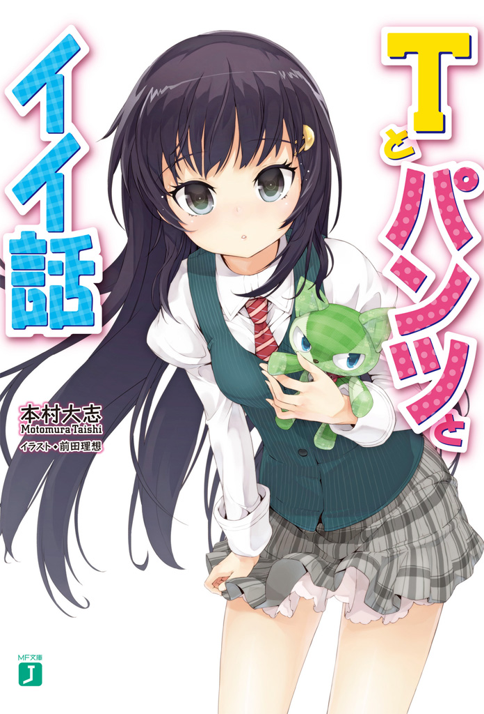
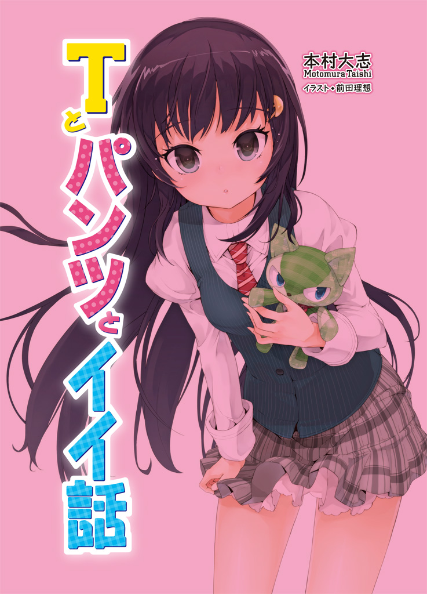
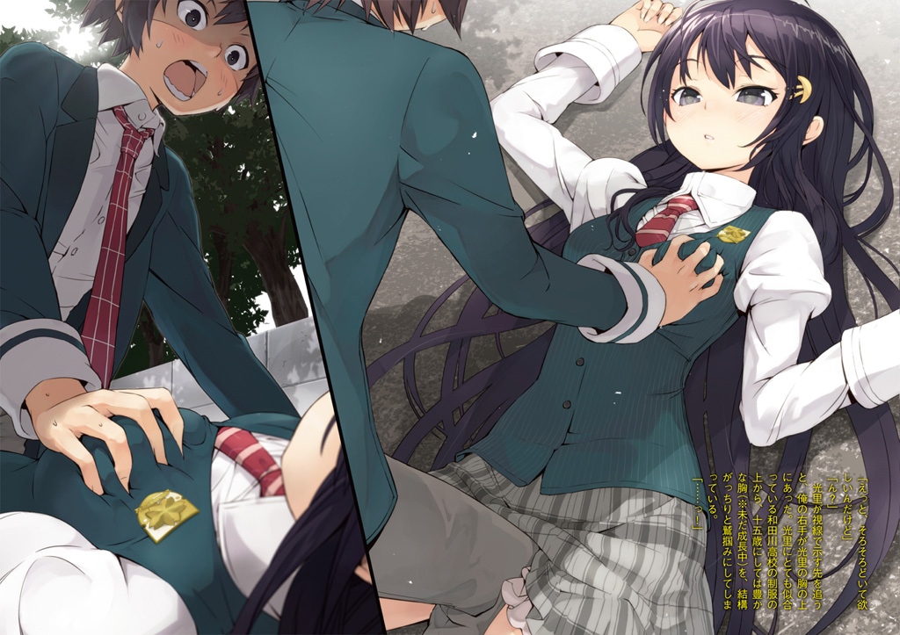
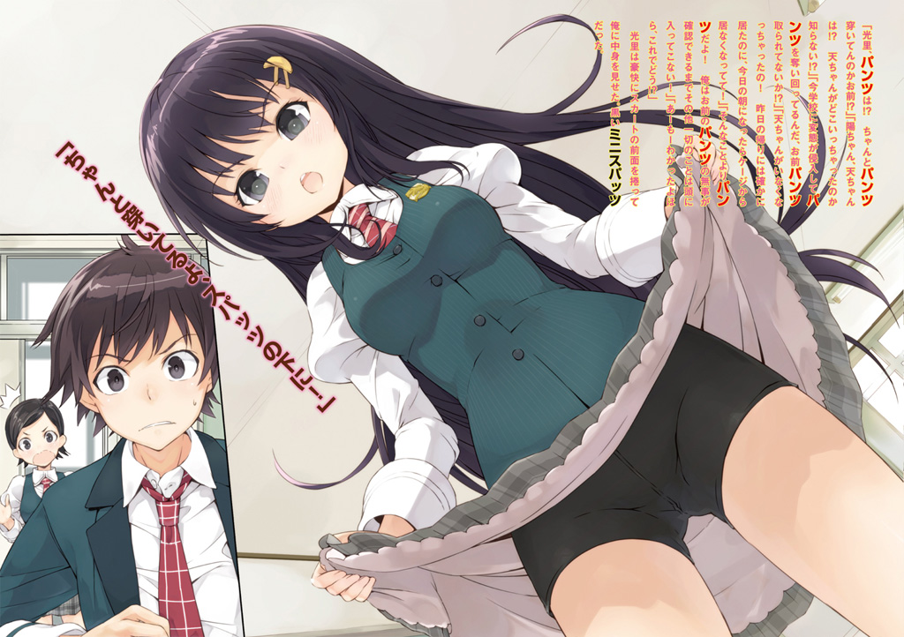
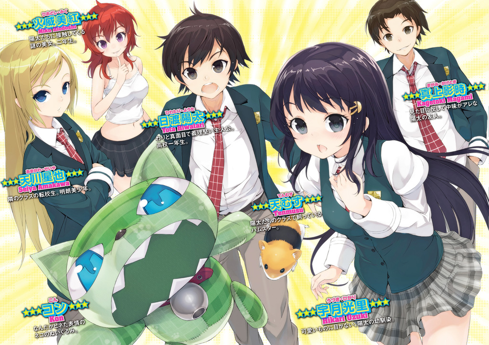
ＭＦ文庫Ｊ
Ｔとパンツとイイ話
本村大志
口絵・本文イラスト●前田理想
編集●児玉拓也
第一話 Ｔの悪夢
１．
「お前に決めた」
夢の中で突然宣言してきたのは、猫のぬいぐるみだった。全体的に緑を基調とされた布のパッチワークで作られたぬいぐるみだ。
緑色の猫──なんて、そんなぬいぐるみを見るのは初めてだ。見たこともないぬいぐるみが、突然悪戯好きの子どものような笑顔で話しかけてくるなんて、随分変な夢だ。
「ようやくオレと相性のいい人間に出会えたんだ。面白い力を貸してやるから、お前、オレのおもちゃになれよ」
「......いや、おもちゃはお前だろ」
「うるせーよ！ とにかく、今からお前はオレのおもちゃだ。十分楽しませてもらうからな」
不思議な猫のぬいぐるみは、そんな捨て台詞を残して、ふっと煙のように消えてしまったのだった。
後から思い返してみると、あの夢が全ての始まりだったのだ。高校一年の四月半ば、始まったばかりの新たな生活に期待と不安とを半々に抱いていたあのころ。
それは、当時まだ半分はあった俺の高校生活への期待を全て不安で塗り潰すことになった、悪夢のような出来事だった。
２．
「......」
妙な夢だったな。目が覚めてもこんなにはっきり覚えてるなんて。しかし、どうしてあんなわけのわからない夢を見たりしたんだろう。別に普段からぬいぐるみのことばっかり考えてるわけじゃないのにな。そんなことをぼーっと思いながら洗面所に向かう。うん？ 何か頭がドアに引っかかったような変な感覚があったけど、まあ気にしなくていいか。あくびをかみ殺して階段を下り、洗面所に辿り着く。歯ブラシを取り、歯磨き粉をつけ、そして鏡を見ると、
後頭部に抱き枕がくっついていた。
俺は歯ブラシをへし折ってガッ！と鏡に縋りつき、改めてまるで現実感のない自分の姿を凝視する。
昨日影時から預かった萌えキャラエロ抱き枕「ジョゼ子」が、俺が頭に敷いて眠った昨日のままの状態で、俺の後頭部にくっついていた。
円柱状の抱き枕の真ん中ぐらい、丁度描かれている萌えキャラのへそのあたりに頭を乗せて仰向けで寝ていたので、前から見ると俺の側頭部から左右それぞれ同じぐらいの長さずつジョゼ子の体が飛び出しているように見える。右から上半身、左から下半身だ。頭の幅が肩幅の倍もあればそりゃあドアにも引っかかりますよ。
慌ててジョゼ子を思いっきり引っ張ってみる。だが、取れない。どんなに力を込めて引っ張ってもジョゼ子はびくともしない。それどころか、あんまり強く引っ張ると俺の後頭部に痛みが走るくらいだ。
一体どうなっているんだ、と手で後頭部を触ってみると──なんと。
後頭部とジョゼ子の表面が、文字通り「融合」していた。接着剤でくっつけたとかそんな生易しい感じではなく、別々の物体であったものを一度融かして混ぜ合わせてから再び固めたかのように、何だかもう細胞レベルできっちりがっちり完全融合しているようなのだ。俺の体とジョゼ子の境目がわからなくなっている。
「......!!?」
なんだこれ。なんだこれオイ。ねえちょっと何コレ！ 俺の身に一体何が起こったの!?
ふと洗面所のすりガラス扉の向こうに人影が現れる。俺は咄嗟に扉へ全体重を掛けて侵入者を拒んだ。
「ちょっと、何すんのよ陽兄。あたしも顔洗いたいんだけど」
くっ、やっぱりお前か......！ こういう空気を読まないタイミングで現れるのは大体いつもお前なんだ。
二つ下の妹、茜。扉の向こうでノブに手を掛けている。こんな姿を妹に見られでもしたら、俺の兄としての威厳はもう終わりだ。
「だっ、台所があるだろ。今はダメだ。この洗面所は俺が占拠した」
「はぁ？ 何意味わかんないこと言ってん......っていうか、あれ？ 陽兄、なんかシルエットおかしくない？ ハンマーヘッドシャークみたいになってるけど」
しまった、すりガラスだからモザイク状態で向こうにこの姿が見えてしまう！
「あ、ああ......ホラ、ちょっと新しい髪型試してみたくてさ」
「......どう髪を弄ったらそんな爆発的に体積増えるのよ？」
「う、うるせえな！ 細かいことはいいだろ！ とにかく今はダメだ、台所へ行け！」
「台所は今お母さん料理してるの。何そんな恥ずかしがってるのよ。いいよ気にしなくて、妹なんだから変な髪型見られたって別に平気じゃん」
うるせえ、今はそういう問題じゃねえんだよ！
「ほら、いいから開けて──」
「く、来るなぁ！ 絶対に開けんじゃねえ！ もし入って来やがったら俺はその場で後頭部切り落として死ぬぞ!?」
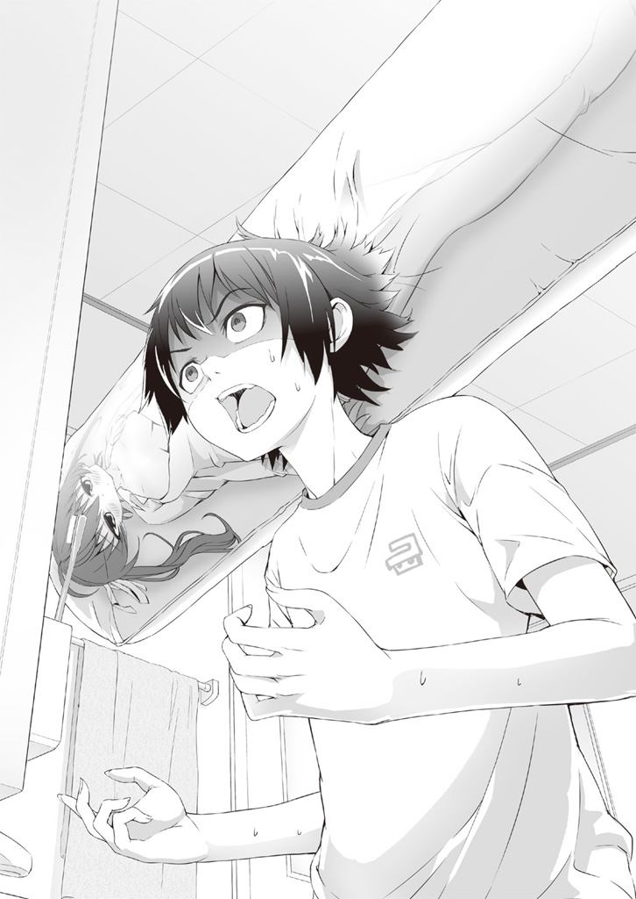
「何その斬新な脅し文句!?」
「とにかく絶対ダメなんだよ！ 来るな！ 来るなぁ！」
必死の説得が功を奏し、何とか茜を追っ払うことに成功した俺は、家族の目に触れないようにすぐさま部屋に戻り、縋るような気持ちで携帯を開いた。
誤解のないように言っておくが、今俺の頭にくっついている抱き枕は俺の私物ではない。昨日とある事情で変態から預かったものに過ぎないのだ。
そいつの名は真上影時という。中学時代からの俺の親友だ。
百八十センチを超える長躯はしなやかで強靱な筋肉に覆われ、無造作な黒髪に切れ長で意志の強さを思わせる鋭い目を持った、文句なしの男前。
しかしその実、影時は真面目そうで大人びた風貌からは想像もつかないほどの変態だった。おまけにかなりのオタクで、自他共に認める厨二病患者でもある。
影時の部屋はおびただしい量の漫画やゲームやフィギュアで埋め尽くされているのだが、どうやら昨日急遽影時のお姉さんが帰ってくることになったらしく、大切な抱き枕の隠し場所がなくて困っているということだった。
「奴は『弟を不幸にするためならば私は悪魔にでも魂を売り渡す』と公言して憚らないほど逆弟想いの女だからな」
その台詞からすると魂を売り渡すまでもなく本人が既に悪魔である。
「俺が大事にしていそうなものを見つけたら即焼却炉に放り込むだろう。他のコレクション達はどうにか秘宝金庫にしまったが、ジョゼ子だけは隠すスペースがなかったんだ」
ジョゼ子というのが、こいつが毎晩抱いて寝ている（らしい）抱き枕のことだ。そこに描かれている萌えキャラの名前なのか、それとも抱き枕自体の名前なのかは浅学な俺にはわからないが。
「だから頼む、陽太。三日だけでいい、ジョゼ子をお前の部屋に匿ってくれないか」
もし家族に見つかった時のことを考えると全く気は進まなかったが、まあこいつにはなんだかんだ世話になってるし、三日ぐらいならいいかと、俺は渋々ながら頼みを引き受けてしまったのだ。そして俺の部屋に、無難な袋に入れられて、模造紙を丸めた的なものにカムフラージュされた影時の抱き枕が運び込まれることとなったのだが。
昨晩、せっかく預かったんだし、抱くのは流石に恥ずかしいけど枕にするぐらいならいいか、なんてアホなことを考えてしまったのが、完全に失敗だった。
「......こ、これは一体どうしたことだ」
俺の助けの電話を受けてやってきた影時は部屋に入るなり、俺の姿を見て表情をひきつらせた。
「お、お前一体......」
「言うな、わかってる」
影時はその場に鞄を落とし、俺の肩をがしっと掴んだ。そして愕然とした表情で、
「お前一体、昨夜ジョゼ子とどんなプレイを」
「そこじゃねえだろおおぉお!!」
全然わかっていなかった。そうだ、こいつはド変態なのだ。
「頭部融合プレイなんて聞いたことがないぞ......」
そんなもんがあってたまるか。
「と、とにかくこんな事態になっちまったんだよ。俺は一体どうすりゃいいんだ」
「確かにそのままではお前のあだ名は間違いなく『Ｔ』だな」
「いやもっと他にあるだろ問題！」
確かに細長い抱き枕が横になって頭にくっついているせいで、今俺が起立したらシルエットが「Ｔ」の形になってしまうけれども。
ともあれ、俺は影時に事情を説明した。
「──ってわけでさ」
「なるほど。しかしお前、なんだかんだ言っときながらジョゼ子を枕にしたのか......」
「うっ、うるせえいいじゃねえか別に！ それよりどうすりゃいいのか一緒に考えてくれよ！ これから学校だぞ！ こんな格好で公衆の面前に出られるか！」
「入学早々その姿で学校にいったら確実にＴキャラが定着してしまうだろうな」
「そんな限定的なポジションがあってたまるか！」
というか絶対にそれだけでは済まない。俺は影時から変態オタクキャラを受け継ぐことになってしまうだろう。
「うーむ。引き剥がそうにも、ここまで融合してしまっていてはどうしようもないぞ」
「......なあ、影時。実は一つ、お手軽な方法を思いついてるんだけどさ」
凄く言い辛い方法を。
「ん？ 何だ、それは」
「......俺の頭に沿って、ジョゼ子を鋏で切り取る」
言いながら、俺はこっそり横目で影時の表情を窺う。
こいつの変態っぷりは常軌を逸している。恐らく影時はジョゼ子を人間と同等かそれ以上の存在と考えているだろう。それを鋏で切り取ろうなどと言ったものなら──。
「なるほどな。やはりそれしかないか」
しかし予想外なことに、影時はすんなりと頷いた。
「え？ い、いいのか？」
「確かに俺にとってはお前もジョゼ子もどちらも大切だが、どちらかを選べと言われたら迷いはしないさ。さあ、やるとなったら善は急げだ。鋏はあるか、陽太」
「......あ、ああ。机の引き出しに」
俺は少し戸惑いながら、影時に鋏を手渡した。
くそ。変態のくせに、たまにこーゆーことを言うもんだから、いつまで経ってもこいつとの腐れ縁が切れねえんだよ。
「では切るか。すまんな、ジョゼ子......」
寂しそうに言って影時は鋏を右手に持ち、左手でがしっ、とジョゼ子を掴んで固定。
俺は息を呑んだ。
影時がジョゼ子に触れたその感触が、俺に伝わってきたのだ。
「......え？」
「では、切るぞ」
「ちょ、待っ──」
影時の鋏が、ジョゼ子と俺の連結部分にわずかな切り込みを入れたその途端、とてつもない激痛が全身を駆け巡った。例えるならば、いや例えるまでもない、まさに肉を鋏で切られるような痛みだ。
「ぎゃーっ！ 痛えーっ！」
「な、何だ!? すまん、ここはお前の体だったか!?」
「い、いや、『そこは』っていうか......！」
俺は鋭い痛みに耐えながら、俺自身の体から一番遠い、ジョゼ子の先端部分を（何か響きがエロいけど気にしない）指差す。
「ちょっとそこ触ってみてくれねえか......？」
「こ、ここか？」
影時が恐る恐る、ジョゼ子の先端を揉む。もみもみもみ。その無駄にいやらしい手つきとねっとりとした気色悪い感触が、しっかりと俺の脳にまで到達していた。
「や、やっぱり......感じる」
「感じる!? お、俺のテクニックでか!?」
「そういう意味じゃねえよああもう面倒くせえな！ ジョゼ子を触られると、俺は自分の体を触られた時と同じように、触覚が働くんだよ！」
「そ、それはつまり──」
影時が驚愕の表情で述べた。
「ジョゼ子の中に、お前の神経が通っているということか......!?」
「っ......！」
戦慄。絶句。沈黙。突き付けられたあまりにもシュールで残酷で意味不明な現実に、俺達は揃って言葉を失う。
神経が通っている──ということは、ジョゼ子はもう、マジで、ガチで俺の体の一部と化しているということだ。俺達は呆然とするしかなかったが、しばらくして影時が目を見開いてジョゼ子を思い切り掴んだ。
「痛えよ！ あんまり乱暴に掴むな！」
「これは......」
影時はジョゼ子（に描かれている萌えキャラ）の、無駄に露出度の高い際どい下着に隠された胸元の辺りを指差した。角度の問題で俺にはよく見えない。
「お前、この状況でよくそんな変態的視点を......」
「違う、そうじゃない！ ほら、ここだ、見てみろ！」
影時は手鏡で問題の部位を映して俺に見せた。
──ジョゼ子の豊満な胸元から、びっしりと、毛が生え始めている。
「な、何だコレ!?」
胸毛の生えた萌えキャラ。何とも奇妙な絵面だ。流石に需要はないだろう。
「恐らく、お前の髪だ。色が同じだろう？ ......神経すら通っているのだ、毛が生えてきたところで今更不思議はあるまい」
「いや不思議だよ！ 毛が生えてきたことはそれはそれで十分意味不明だっての！ 納得できるわけねえだろ！」
「しかもな、この毛、今も凄いスピードで伸び続けているぞ」
「え？ ああっ、本当だ！ もう俺の視界に入る位置まで伸びてる！」
しかも毛が生えてきているのは胸元からだけではなかった。ジョゼ子の全身、ありとあらゆる所からもじゃもじゃと生え、そして数分後には抱き枕のもじゃもじゃはもじゃもじゃのもっじゃもじゃになり、俺の本来の髪の毛との境目すらわからなくなってしまっていた。
ジョゼ子の姿は完璧に毛で覆われた。今や俺は「後頭部が抱き枕と融合してしまった男子」ではない。「とんでもなく横に長い頭を持つスーパー奇抜な髪型の男子」だ。
「......」
「......」
「ぎゃ、逆に考えれば」
と、影時が上ずった声で沈黙を破る。
「これなら、一応、『髪型だ』と言い張ることはできるな。髪で隠れているから、ジョゼ子がくっついてることなんて誰にもわからないし......」
「......そ、そうだな、ポジティブに考えよう。昨今のオシャレ事情を鑑みるに、今の俺の姿はそう有り得ないものじゃねえ。少なくともジョゼ子の姿が露出していた状態に比べれば、限りなく普通の人間に近いさ。キャバ嬢には似たような髪型の奴もいるしな！」
「うん、そうだ！ 今のお前は、ただの『オシャレにちょっと失敗しちゃった奴』に過ぎない！ 全然大丈夫だ！ 別にこのまま外を出歩いても全然平気なレベルだな！」
「そうだ、早く学校に行かないと！」
「ああ、すっかり忘れていた。一時間目は国語だったな、小松先生を怒らせると後が恐い。遅れないように早く出発しよう！」
「おお！ じゃ、俺ちょっと着替えるから、玄関で待っててくれ！」
「わかった、ではこっそり茜ちゃんの部屋に侵入して待っているぞ陽太！」
「それをやったら多分来世まで会えなくなるけどな！」
わかっている。自分達が色々とツッコミどころ満載の行動を取っていた自覚はある。
だが、あの時の俺達をどうか責めないでやって欲しい。あまりにも現実離れした事態に直面し、平凡な高校一年生男子の頭は完全にパニクってしまい、正常な判断ができなくなってしまっていたのだ。
３．
学校に向かう俺を待ちうけていたのは、当然の如く、俺の異形の頭に対する通行人および登校中生徒からの奇異の視線とひそひそ話の寒風だった。
「え？ Ｔじゃね？ あれ」「Ｔだな」「あれはＴだろ」「Ｔ以外の何物でもない」「あれほどのＴは見たことがない」「つーか頭の幅広すぎるだろ」
混乱していた俺達もすぐに気が付き、そして納得した。そりゃあこうなるさ、と。
幾度となく折れかけた俺の心を影時が必死にフォローしてくれたが、こいつのフォローは少々的が外れていたので（俺の頭を支点にジョゼ子の上半身と下半身をくいっと上方向に持ち上げて「こうすればＴではなくＹだ！」と言ったり）ぶっちゃけ大して効果はなく、程なくして俺のガラスのハートはパーフェクトにブロークンした。
「ちっくしょおおおっ！ 俺はＴじゃねえ！ 日渡陽太だあーっ！」
どうして至って平凡に暮らしていただけの俺がこんな理不尽な事態に巻き込まれなければならないんだ。冷静になって考えれば考えるほど意味がわからず頭がおかしくなりそうになる。いやある意味頭おかしくなってるけど。もうヤケクソだよ。走るしかないよ。
「ま、待て陽太！」
影時の制止を振り切って、俺はジョゼ子を振り乱し涙ながらに走る。
そして見通しの悪い曲がり角で、
「わ......！」
「うわっ！」
どーん！ と人にぶつかってしまった。
「ごめん！ 大丈夫か？」
相手の姿を確認すると、そこにあったのは、俺のよく見知った少女の顔だった。
宇月光里。幼稚園のころからの幼なじみで、小中学校はずっと同じ、そしてこの四月からも一緒に和田川高校に、それも同じ一年三組に通うことになった（ちなみに影時も一緒のクラスだ）。光里とは幼い頃から家族ぐるみのつきあいをしていたのだが、光里の両親が事故で亡くなってからは、お互いほとんど家族も同然の関係である。
よく晴れた日の夜空のような長い黒髪に、気まぐれな子猫のようにぱっちりした目。神様が「この子が皆に愛される姿になりますように」と丹精を込めて作り上げたに違いない、老若男女を問わず一目見ただけで心を奪われるような美少女だ。俺は幼い頃から見慣れているけれど、いくら見慣れても見飽きることなど決して有り得ない魅力が光里にはあった。
「あ......わ、悪い光里」
「陽ちゃん......なの？」
「あ、ああ」
光里は黒真珠のような瞳をぱちぱちさせて首を傾げ、
「頭型変えた？」
「そんな髪型を変えるようなテンションで頭の形を変えられるか」
「じゃあ何でそんな風に頭がおかしくなってるの？」
台詞だけだと罵倒にしか聞こえないが、状況を見れば光里の疑問はもっともである。しかし残念ながら俺はその疑問に答えてやれない。
「俺にもわからねえんだ......。朝起きたらこんなことになってて死ぬほど困ってる」
「そう......大変だね」
光里は心配そうな表情になる。だが、同時に困ったように目を逸らして口をもにょもにょと動かし、
「えっと、そろそろどいて欲しいんだけど」
「ん？」
光里が視線で示す先を追うと、俺の右手が光里の胸の上にあった。光里にとても似合っている和田川高校の制服の上から、十五歳にしては豊かな胸（※未だ成長中）を、結構がっちりと鷲掴みにしてしまっている。
「......っ！」
ぶつかって転んだ拍子に俺が光里に覆い被さるような状態になって偶然手がこの位置に来てしまったのだ。断じてわざとではない。
「ご、ごめん！ 今どくから──」
慌てて起き上がり手を外そうとして、──事態の深刻さに気がついた。
手が、体が、光里から離れない。いや、女の子の体から離れたくないとかそういう影時的な意味ではなく、物理的に、どうやっても光里から離れることができないのだ。......ちょうどジョゼ子の時と同じように。
何とか離れようと無理矢理手を手を外そうとすると、光里の胸がくっついてきて一緒に動いてしまった。
むにゅ。
「ちょっと陽ちゃん......」
「うわっ......す、すまん、えっと、これは、その......」
「わざとなの？ わざと私の上にまたがって胸を揉みしだいているの？」
「そこまではしてねえよ！ お前は俺をどんだけ最低野郎だと思ってるんだ！」
「......」
光里は黙って俺に絶対零度の視線を浴びせ続ける。目は口ほどにものを言うとはまさにこのことだ。やばいやばい超怖い。
っていうかこいつ、少しは抵抗しろよ。恐ろしい目つきの割にはなぜか一切の物理的抵抗をせずにされるがままになっているので、必死で光里の胸から手を離そうともがいている俺の姿が滑稽かつ最低に演出されるばかり。これでは傍から見たら完全に俺が自分の意志で光里のマシュマロ触感を楽しんでいるみたいではないか。
「ほ、本当に離れねえ！ 離れたくても離れらんねえんだよ！」
唐突に光里の頬がぽっと赤くなった。
「そ......そんなに褒めたって何もでないよ」
「いや褒めたつもりはねえけど!?」
どんな曲解をしたんだこいつ！
「まさか陽太......」
追いついてきた影時が、俺と光里を見て顔を青くし、わなわなと全身を震わせる。
「宇月さんと合体してしまったのか!?」
「お前それが言いたかっただけだろぉ！」
......抱き枕の次は幼なじみの女子と融合してしまった。
いよいよ為す術がない。とにかく光里に事情を説明して何とか立ち上がったものの、この強制わいせつ（やめることができないという意味で）状態で途方に暮れるしかなかった。
「ほっ......ホントにどうすりゃいいんだ、これ......」
「も、もう恥ずかしがっている場合ではないぞ陽太。とりあえず病院に連絡を──」
「そんなことしても無駄だよ」
聞き慣れぬ声が混乱を割って俺達に届く。振り返ると、声の主は世にも美しい少年だった。ファンタジー世界の王子様がお忍びで現実に遊びに来たのだろうかと疑ってしまうほどの美形っぷりだ。
柔らかそうな長い髪や透き通るように白い肌、そしてやや幼さの残る端正な顔立ち。影時を「男前」とするなら、こいつはむしろ女性的な美貌の極致という感じだ。
「お前......天川星也、か？」
天川星也──こいつは確か俺達と同じ和田川高校の一年生だ。その容姿と、新学期早々実施された実力テストで成績学年トップに躍り出たことで一気に学校中に名が知れ渡った凄い奴だったはず。有名人ではあるがクラスが違うため俺とはあまり交流がなく、直接話すのはこれが初めてだ。確か一年二組だったかな？
「天川、お前何か知っているのか？」
天川は笑った。爽やかでいかにも女性受けしそうな笑顔だったが、あまりにも完璧すぎて、逆に何か──裏側に全然違う思惑を隠しているように見えてしまった。
「ああ、知っているよ。僕はどうやれば君が元の人間に戻れるかを知っている」
「ほ、本当か!?」
さりげなく非人間扱いされたけど、この際不問にしよう。疑問はつきないが、とにかく今は少しでも情報が欲しい。
「教えてくれ天川！ 俺の体は一体どうなっちまったんだ！」
「そうだね。僕としても、その辺りを君に詳しく説明してあげたいところなんだけど」
天川は言葉を止め、通学路を見回す。「ここじゃ場所が悪いな。人が多すぎる。学校の屋上に来てくれ、日渡君。そこでじっくり話をしよう」
「え......ちょ、待っ──」
「じゃ、先に行ってるよ」
笑顔で突き放し、天川はすたすたと歩き去って行ってしまった。
「お、屋上に来てくれって......」
──この状況で、この俺に？ 後頭部に抱き枕が融合し、光里と抱き合って胸まで触っている状態をやめることもできない、この俺に？
「ふ、ふざけんなあの野郎......！」
光里が俯いたまま「陽ちゃん」と呟くように俺を呼んだ。
「......出来るだけ手を動かさないで欲しいんだけど」
「え？」
言われて気付く。無意識に手に力を込めてしまっていた。掌に残る柔らかい弾力。
「わあ！ ご、ごめんそんなつもりじゃ......」
「......」
光里は相変わらず無抵抗。俺の手を無理に引き剥がそうとするでもなく、堪え忍ぶように無言で俯いているだけ。超気まずい。超可哀想。
く、くそぉ......こんな状態で学校まで歩いてこいってのか、あの野郎──！
「よ、陽太......」
俺達の様子を見ていた影時が突然、ただならぬオーラを纏いながら自分以外の存在に体を操られているようなフラフラした動きで俺ににじり寄ってきて、ぐいと俺の肩を掴んだ。
「い、今どんな感じなんだ......？」
「......は？」
ハァハァと息を荒くして影時は俺に迫る。
「う、宇月さんと──女の子と全身ピッタリ密着して合体するのはどんな気分なのかと訊いているッ！ やっぱりあれか、柔らかいのか！ 肌は！ いいのか！ 匂いは！ フローラルなのかぁッ！」
「こんのド変態がーっ！ んなこと言ってる場合じゃねーだろうが！ ちょ、近い近い近い！ 離れろ、馬鹿！」
「あ......ああスマン、少々取り乱した──ん？」
影時は俺から離れようとして、......そして動きを止めた。
「？ どうした、早く離れ──」
......って。オイ、これ、まさか──。
嫌な予感がする。影時の尋常ではない顔色の悪さが、その予感に拍車を掛ける。
「影時、お前──！」
「は、離れられん......！」
「やっぱりか────っ！」
なんてことだろう。俺の体は光里に続き影時ともくっついてしまった。しかも顔が近い、光里よりも近い。影時の唇が文字通り目と鼻の先である。
「このアホーっ！ ただでさえ混沌としている状況を更に悪化させやがってーっ！」
「い、いくら俺だって初めてのキスは男とするのは嫌だぞ！」
「『初めてのキスは』ってお前初めてじゃなかったら男でもいいのかよこのド変態野郎！」
「......はぁ」
こうして。俺達三人は、全員が融合している最高にカオスな状態のまま、永遠とも思える学校への長き道のりを、えっちらおっちら少しずつ進んでいく羽目になったのだった。
屋上のドアを蹴り開けると、天川は吹き荒ぶ風の中、屋上のフェンスに手を掛けてグラウンドを見下ろしていた。
「遅かったね」
天川は芝居がかった仕草でこちらに振り返る。
「早く来れるわけねえだろこの身体で！ お前、俺達が全員抱き合ったままで階段を上って来る様を想像してみろ！」
「......軽くホラーだね」
うむ、と影時は頷く。
「まさに『学校のかいだん』と言っ──」
「で、お前は一体何を知っているんだ天川。教えてくれ」
「ああ、そうだった。それじゃあ早速」
天川はポケットから数枚、札のようなものを取り出して、それをばさっと扇状に広げて構えた。札には独特の装飾らしきものが施され、何だか威厳のある男性の肖像が描かれている。天川の挙動に厨二心がくすぐられたのか、影時が目を輝かせて尋ねた。
「それはひょっとして......いわゆる、『退魔のお札』的なものか!?」
「いいや」
天川は気取った風に首を振る。
「『日本のお札』だ」
「金じゃねえかそれ！」
よく見るとただの日本円だった。千円札だ。偽造防止の色々なギミック入り、威厳のある男性の肖像はご存じ野口英世先生でした。
「何を格好良く懐から現金取り出してんだ!? 金で解決できる問題なのかよ！」
「そんなことはどうでもいい」
天川は左手で扇状に持った千円札の中から、一枚を右手の人差し指と中指で挟んで引き抜くと、指鉄砲のようなポーズで俺達に突きつけた。
「君達には死んでもらう」
「......はい？」
うん？ 何か今物騒な台詞が聞こえた気がするけど、聞き間違いだよな。あまりにも脈絡がないし、そんなつまらない冗談を交わすほど俺達の親交は深くない。大体、まるで武器みたいに構えてるけど、それただの千円札だからね。紙だからね。紙で戦えるのはフィクションの中だけだからね。
次の瞬間、天川の右手からお札が消え、その代わりに稲妻のような光が飛び出した。
稲妻は空気に亀裂を走らせ、俺達の立っているすぐ横の床に着弾した。どっかーん！ という嘘みたいな爆音と共に、コンクリートで出来ているはずの屋上の床が砕け散った。吹き飛んだ破片がぱらぱらと俺達の体に降ってきた。
「ちっ、外したか」
天川は着弾点に釘付けになって呆然とする俺達のことは気にも留めず、懐からもう一枚千円札を取り出して補充し、再び銃口のように先端を俺達に向けた。
「次は──外さない」
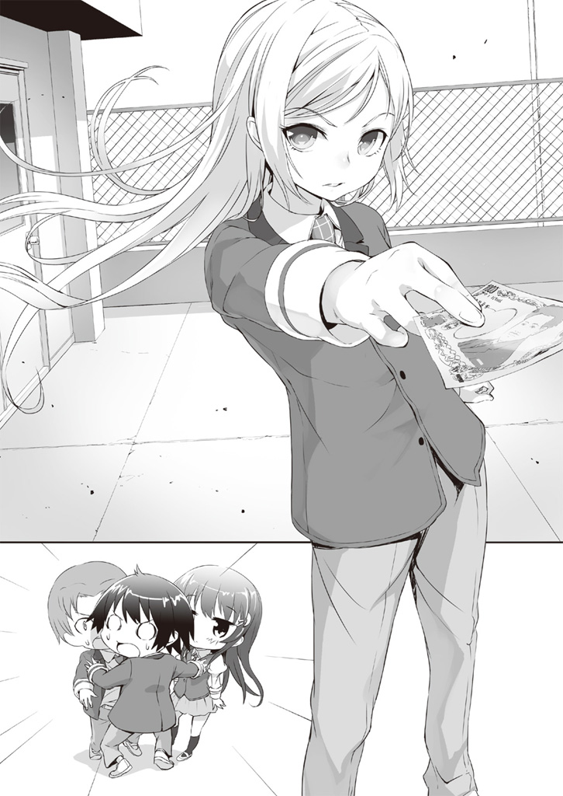
......。
「え......ええええええええ!?」
なんじゃこりゃああああ！
一つも意味がわからねえ！ 何だ今の現実離れした攻撃！ そして何で俺達いきなり命狙われてんの!? 何も悪いことしてないよ俺！ むしろ被害者だよ！
「待て、待ってくれ天川！ これは一体どういうことなんだ!? なんで俺達が命狙われなきゃならねえんだよ！」
「君の頭がおかしいからさ」
「その理由はあんまりだろおおおおお！」
つーか理由になってねえ！ 俺の頭に抱き枕が融合してたって、困るのは俺（と誤って巻き込まれた光里と影時）だけのはず！ 俺が死んで誰の得になるんだよ！
「だ、ダメだ陽太、話は通じそうにない！」
「くそっ......逃げるぞ！」
俺達は一斉に、校舎内へと通じるドアへ駆けだした。しかし三人が内側に向かい合ってくっついているこの状態でまともに走れるわけがない。互いの足が絡まり、俺達はすぐさま無様にすっ転んでしまった。
動けない俺達に、天川は無慈悲にも照準を合わせる。
「それじゃさよなら」
「──っ！」
「待てぇっ！」
突然響いた叫び声に、恐らく俺だけは聞き覚えがあった。
悪戯好きの子どものような高い声。まさか、と声の方向を振り向くと。
「オレのおもちゃを勝手に壊すな！」
屋上の貯水タンクの上にいたのは、緑を基調とした布のパッチワークで作られたぬいぐるみ。昨夜俺の夢に現れた、あのぬいぐるみだった。
「なっ......お、お前......!?」
「ぬ、ぬいぐるみが動いて、しかも喋っているだと!?」
「可愛い......！」
驚く影時と、一人場違いな感想を抱いて目を輝かせる光里。
「やっぱり出てきたね、コン」
天川は嬉しそうにニヤリと笑い、千円札をコンと呼ばれたぬいぐるみに向け直して稲妻を放つ。コンは飛び跳ねて稲妻をかわす。
「これでも食らえ！」
コンがそう叫んで屋上の床に着地した瞬間、奇妙な現象が起きた。
天川の立っていた部分の床が突然粘土のようにぐにゃりと歪んで、天川の足がずぶずぶと飲み込まれ始めたのだ。
いや──飲み込まれる、というか、あれは。
床と足が、混ざり出している。
まるで俺の頭とジョゼ子のように。
「そのままこの建物の一部になっちまえ！」
高い声で笑うコン。しかし、天川の表情からは余裕が消えていない。
「それはごめんだな」
天川は千円札を一枚、足下に落とした。千円札は軟化して沼のようになっている床にふわりと落ちて沈んでいく。すると、千円札の沈んだ辺りの床が発光し、天川は水から上がるようにひょいと床の中から足を持ち上げた。
「げ！」
たじろいだコンの一瞬の隙を突いて、天川はガンマンの早撃ちのように稲妻を繰り出す。避けられずに直撃し、コンは「ふぎゃ──っ！」と悲鳴を上げて目を回してしまった。
「ネコちゃん！」
光里が倒れたコンに駆け寄ってその体を抱き上げた。三人の体がくっついた状態でそんなことをされたもんだから俺と影時の体勢がヤバいことになる。耐えるしかない。
「驚かせて悪かったね」
天川はしれっとした笑顔で俺達に詫び、顎でコンを示して見せる。
「君達を狙ったのはこいつをおびき寄せるためで、本気で殺そうとしたわけじゃないんだ。許してくれよ」
「お、おお......？」
......やっぱり何が何だかわからん。どうして俺達を殺そうとするとこいつをおびき出せるんだ？ っていうかまず、こいつは何なんだ。どう見てもぬいぐるみであって生き物じゃない。それなのに、夢の中のみならず現実世界でも動いて喋って、あまつさえ何だかわけのわからない魔法みたいな力も使っていた。
「ひょっとして、俺の頭がこんなんなっちまったのはこいつの仕業なのか？」
「話が早いね。その通りだよ」
これから詳しく説明しよう──そう言って。
直後に天川のお札扇から一枚の千円札がふっと虚空に消えた途端、俺達の目にはそれまで映らなかったものが映るようになっていた。
糸だ。
様々な太さや長さや色をした半透明の絹糸のようなものが、俺達の体に纏わりついている。しかもその糸は、人の体を中心に何本も飛び出していて──或いは人の体を中心に何本も集まっていて、人と人の間を繋いでいた。
俺と光里を。光里と影時を。影時と俺を。天川と俺達を。そして、コンと俺の間にもこの糸の繋がりが見える。
「な......何だこれ？」
「思念糸」
天川が詩でも読み上げるかのように朗々と述べた。
「人間の思念──心が発するエネルギーがより合わさったものがこの糸だ。人間はこの糸を通じて外界と関わり合うことで精神活動を行っている。太さとか長さとか色とかによって性質が異なるんだけど、一本やそこらじゃ大した力はない、無視してもいいものさ。しかしこれが一ヶ所に大量に集まると、科学では測れない不可思議な力を生み出してしまう。例えば僕のように」
そう言って自分を示した天川は、なるほど確かにとんでもない量の思念糸を身に纏っていた。俺にはせいぜい数十本の緑色の糸が輪の形に巻き付いているだけだが（影時と光里は俺よりも更に少ない）、天川の場合は金一色の思念糸が全身を覆い尽くしている。まるで金色の繭のようだ。
「思念糸が集中すると、集まった思念糸の性質に応じて不思議な力が使えるようになる。その力のことを思念力という。僕の思念力は、何度か見せたように『お金を力に変える』ことだ」
「だからお札が消えて手から稲妻が出たりしたのか......？」
「そういうこと。払う金額によって強さが増減する。さっきので千円分の威力だ」
......千円で十分人殺せるレベルかよ。冗談だろ。
「そして思念糸は基本的に人間同士でやりとりするものだけど、しばしばそれ以外のもの、例えば人間が使っていた道具なんかにも纏わりついたりする。何かを依り代にして思念糸が幾重にも絡みつくと、それに人格と思念力が宿って、まるで人間のように動き出してしまうんだ。そういう、人間の思念から生まれたイレギュラーな生物もどきのことを、思念塊と呼ぶ。いわゆる『付喪神』みたいなものかな」
光里が目を丸くした。
「それじゃ、この子は」
「そう」
天川は光里の腕に抱かれたコンを指差した。
「そいつは、ぬいぐるみを依り代に思念糸が絡みついた思念塊だ。名前はコンっていうらしいよ。見てごらん、思念糸が全身を覆っているだろう」
天川の言う通り、コンはその体と同じ緑色の思念糸でぐるぐる巻きになっている。そして、なぜかコンの体から伸びた思念糸の一部が俺にも巻き付いていた。色も太さも全く同じである。
「僕は思念糸に纏わる事件・事故解決の専門家だ。仕事の一環として人間に迷惑をかけるこの悪戯思念塊を追っていたんだけど、コンは逃げ足が速くて困っていてね。速やかに捕らえるために君を利用させてもらうことにしたんだよ、日渡君」
「どうして陽太を狙うことでコンをおびき寄せることが可能だったのだ？」
「それは彼がコンにとって重要な存在だったからさ」
「俺が？ なんで？」
「さっき、君の頭がおかしくなったのはコンの仕業だって言ったろう？」
さっきからちょくちょく言い回しに悪意を感じる。
「思念糸は、相性のいい相手にだったら『分与』することが出来るんだ。分与された思念糸が一定量を超えると、分与された側もその思念糸に対応した思念力が使えるようになる。コンの思念力は『物体同士を混ぜ合わせること』。そして君はコンと相性のいい適合者。君に分与されたその緑色の思念糸は、それと同じ思念力に対応している」
数秒間かけて天川の話を飲み込み、事態を理解する。
「それって......思念糸を分与されたせいで、今は俺にもコンの思念力が使えるようになっているってことか？ だからこんな風に頭と抱き枕が混ざったりしてんのか？」
「あ、頭のそれ抱き枕だったんだ。プッ」
「何笑ってんだコラァ！」
俺のじゃないからな！ 影時のだからな！
「まあ、大体君の言う通りであってるよ。今君がそんなままならない状態になっているのは、コンから与えられた思念力が制御できずに暴走してしまっているからさ」
だから俺の意思に関わらず勝手に『物体同士を混ぜ合わせる』力が働いて、ジョゼ子や光里や影時とくっついてしまったというわけか。
「思念塊にとって思念糸の分与ってのは投資みたいなものなんだ。適合者に思念糸を分与しておくと、思念糸は勝手に増えていくんだよ。そして十分増やしたところで後から回収する、と」
「なるほど」
銀行の金利みたいなもんか。
「で、回収する前に君が死んじゃったりすると、分与しておいた思念糸も霧散してしまう。そうするとコンにとっては大損だ。だからそれを防ぐために助けに現れるだろうと踏んでいたってわけさ」
ちょうど同級生の君がコンの適合者だったなんてラッキーだったよ、と天川は笑ったが、俺はあんまり笑えなかった。マジで殺されるところだったってのに、笑えるか。
「......天川くん」
それまで黙っていた光里が口を開いた。
「なんだい、光里ちゃん」
「この子......コンちゃんを、これからどうするの？」
疑問というよりも不安を抱いていることを感じさせる声色。天川は多分それに気付いていたのだろうが、光里を気遣うような素振りは見せず、突き放すように返答した。
「滅却しようと思ってるよ」
「滅却、って」
「消してしまうことだね。思念糸を解けば思念塊に宿っていた人格と思念力は消える」
「そんなのダメ！」
光里はコンを庇うように、ぎゅっと強く腕の中に抱き締める。そして光里の腕に引っ張られた俺と影時の体勢は最早人間として耐えられる限界レベルに達していた。このままスタンドを発動させられそうな格好である。
「どうして？」
「可愛いから」
「......本気で言ってるのかい、それ？」
呆れる天川に対し、光里は神妙に頷く。そう、こいつは大真面目なのだ。
とにかく人間から動物まで、生物から無生物まで、自分にとっての可愛いセンサーが反応したものに対しては異常な執着を見せる。それが宇月光里という女の子だった。
そしてどうやらコンもセンサーに引っかかってしまったらしい。まあ、見た目は可愛らしいぬいぐるみだし、それが動いて喋ってとなれば光里が放っておくはずもないことは予想できていたが。
「光里ちゃん、僕の言う滅却とは『思念塊のコンだけを消すこと』だよ。つまり、コンを滅却しても──そのぬいぐるみに巻き付いた思念糸を全て解いてしまっても、そいつの人格と能力が消えるだけでそのぬいぐるみ自体は残るんだ」
光里は首を振る。
「それじゃだめなの。今のコンちゃんだから可愛いの」
「......あっそ。僕には理解できないな」
天川は肩をすくめて溜息をついた。
「まあそうはいっても、実は事情があって滅却したくてもできないんだけどね」
「そうなの？」
「例えば今コンを滅却したとするだろ？ そうすると、日渡君に分与された思念糸は未回収のまま彼に纏わり続けることになるわけだ」
それだけでふつふつと嫌な予感が湧き上がってきたが、確認のために一応訊いてみた。
「......そしたらどうなるんだ？」
「日渡君は暴走したコンの思念力を抱えたままになる。わかりやすく言うと、君達三人は一生くっついたままってこと。そしてこれからもことあるごとに色々なものと混ざり続けていくだろう」
やっぱりかい！
「じゃあ全然ダメじゃねえかーっ！ 何の解決にもなってねえよ！」
「まあまあ落ち着いて。確かにコンを滅却することは出来ないんだけど、コンを無害化させて、君の体も元に戻せる一石二鳥の解決方法が、実は一つだけあるんだよ」
「ほ、本当か!?」
「日渡君、君がコンと、適合者と思念塊の間でのみ交わすことのできる『思念契約』という特別な契約を結ぶのさ。これを行うと思念塊を形成している思念糸の全てが適合者に流れ込み、思念力の主導権が適合者に移ることになる。思念塊は単に思念力のブースターとしての存在になり、人格は残るが自身が思念力を使うことはできなくなるんだ。ただの喋って動くぬいぐるみになるってこと」
「な、なるほど......？」
俺はよくわからないまま頷いた。要するに、俺がコンの力を全部奪い取ってしまうということか。確かにそれなら、俺は元の頭を取り戻せるし、コンが無事だから光里は悲しまない。全て丸く収まって万々歳だ。
「......と言うわけだ、コン」
天川はつかつかとこちらに近づいてきて、光里の腕の中のコンを見下ろした。いつの間に気がついたのか、コンは円らな瞳で天川をにらみ返している。ぬいぐるみだから目はプラスチック製なんだろうけど、思念塊となった今のコンの瞳には、何というか、生命の光みたいなものが宿っていて、きらきらと幼い輝きを放っている。
「日渡君と契約すれば、彼らの体は元に戻り、君も生き残ることができる。そうしない場合は、思念力を回収するまで僕が君を拷問するよ」
「ぬいぐるみに拷問って、一体何するんだよ......？」
「中身の綿を抜き取って全て藁に詰め替える」
光里がコンを抱き締めて顔面蒼白になった。
「そ、そんなことをしたらコンちゃんのふわふわな抱き心地が台無しに......」
「それだけじゃない、更に藁の中にほどよくふかした大豆を入れてやる。大豆は徐々に発酵して納豆と化していく......コン、君は自らの体内でネバネバしたものが生成される恐怖に苛まれることになる」
うわっ......。それはきついな......。自分の体が段々ネバネバになっていくなんて。光里は想像しただけで泣きそうな顔になっている。流石にコンも嫌なのか、光里の腕の中で表情が引きつっていた。
「わかるだろ、コン。お互い癪だけど、日渡君と君が思念契約を結ぶ、というのが双方にとって一番都合のいい妥協点なんだよ」
「......」
コンは黙って俯いてしまった。
......確かに天川の言ってることはわかるし、俺達をこんな姿にしやがった緑猫には非常に腹が立っているが──しかし。
天川の、弱者の退路を断つような高圧的な物言いも、あまりいい気持ちがしない。
「天川くん。コンちゃんと話をさせて」
光里が顔を上げて、物静かな、しかし誰よりもよく通る澄んだ声で言った。
天川は肩をすくめ、二、三歩その場から退く。
「......コンちゃん」
光里がコンを呼ぶ声があまりにも優しくて、俺は自分が呼ばれたわけでもないのにどきどきした。影時なんかはもう既にほぼイキかけている。まあそれは多分、頸椎と尾てい骨がくっつきそうな体勢を強いられて意識を失いかけているからだろうが。
「......なんだよ」
光里はじっとコンの顔を見つめていたが、突然タガが外れたように、コンを思いっきり抱き締めて激烈な頬ずりを始めた。
「うぎゃあ！ な、何すんだぁ！」
「何って、マーキング」すりすりすりすり。
「勝手に匂い付けするな！ オレはお前のものじゃねえぞ！」
「可愛いものはみんなのもの、みんなのものは私のものだよ」
「最終的にお前の総取りじゃねーか！」
ああ、こうなったらもうダメだな。完全に光里のスイッチが入った。コンはもう絶対に逃げられない。
ひとしきりマーキングを終えると、次に光里はブラッシングをするように、どこまでも優しく丁寧な指使いでコンの体を撫で始めた。
「ねえ、コンちゃん。あなたはどうして陽ちゃんに自分の力を分け与えたりしたの？」
光里に撫でてもらうのがよほど気持ちいいのか、コンの目がだんだんとろんとしてくる。
「......面白そうだったからだよ。おもちゃにしてやろうと思ったんだ」
「陽ちゃんに遊んで欲しかったの？」
「......違う。オレが一方的にあいつで遊んでやるつもりだった」
ついにコンは目を閉じてごろごろと喉を鳴らし始めた。まるで本物の猫だ。流石はどんな人間嫌いの野良猫でも一瞬で手懐ける光里の猫撫でテクニック。
「じゃあどうして助けにきてくれたの？」
「だからそれは、そいつが言ったように、思念糸を回収しないと大損だからで......」
「自分がやられちゃうかもしれなかったのに？ 陽ちゃんに分与した分は切り捨てて逃げた方が安全だったでしょう」
「......」
「本当はどうしてなの？」
コンはばつが悪そうに、ぷいと顔を逸らした。
「......おもちゃを勝手に壊されるのが嫌だっただけだ」
「やっぱりあなたは悪い子じゃないよ」
光里は優しくコンに微笑みかけた。
「ねえコンちゃん、うちにおいで？ 私がいっぱい遊んであげるから。だからもう陽ちゃんにいじわるするのはやめて、私と一緒に暮らそうよ。ね？」
光里の笑顔を見上げ、コンは驚いたように目を見開く。青いビーズの瞳が、それまでに見たことのなかった光を反射していた。そしてしばらくの逡巡の後、コンはぽてっ、と頭を光里の胸に預けた。
「うちにきてくれる？」
恐らく光里は、コンはきっと自分を受け入れてくれると、疑っていなかったのだろう。
だが。こともあろうに、コンは。
「......ね」
「ん？」
「やーだねっ！」
駄々っ子のようにそう喚いて、自分を抱く腕からするりと抜け、光里のおでこに自分の額をくっつけた。その瞬間、コンを中心に眩い光が発生して俺達の視界を真っ白に染める。閃光が消え、俺達が目を開けると──そこには。
「なっ......!?」
目を疑った。
さっきまで俺達とくっついていた光里が、一人だけ分離している。そして腰に手を当てて、偉そうな格好で空中に浮いている。
「と、飛んでる......!?」
「にししっ！ 油断するからこうなるんだっ！」
──その台詞は、光里の声で、光里の口から飛び出した。
容姿や服装は紛れもなくほとんど光里のものだったが、だがしかし、頭からは猫耳が生え、髪の色がコンの体毛と同じ緑に変わり、頬からはぴょんと何本かのヒゲが、掌にはふにふにしていそうな肉球が、そしてお尻からは大きな猫じゃらしみたいな尻尾が生えていたのだ。
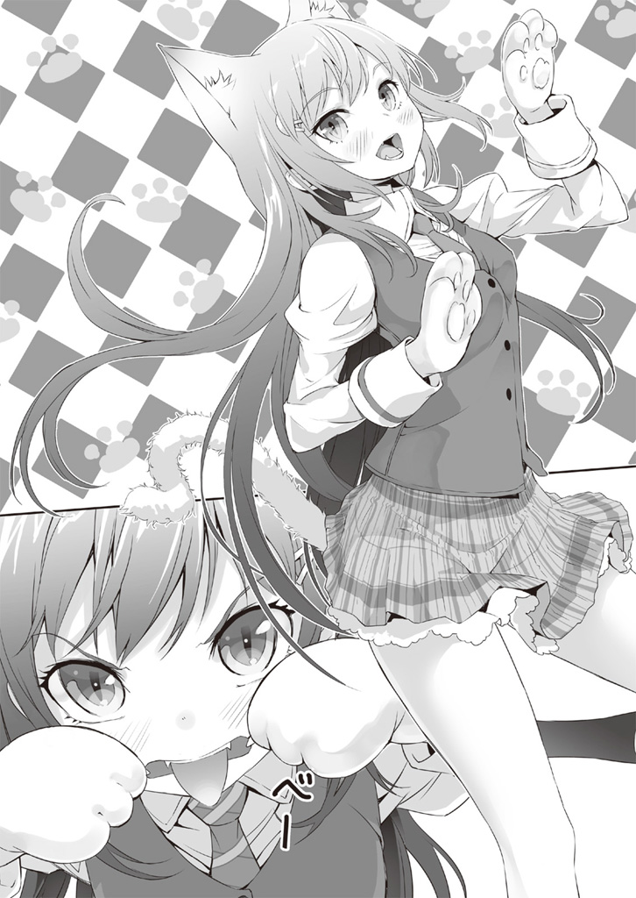
「その姿は、まさかお前......！」
「そうだ。オレの思念力で、オレとこいつの体を融合させてもらったぜ！」
コンは光里の体を試すように色々と動かして楽しそうに笑っている。
「て、てめえ！ 光里の体を返しやがれ！」
「やーなこった！ べーだ！」
コンは指で口を広げて舌を出す。くそ、光里はそんなはしたないことしないってのに！
「......騙されるもんか。オレは人間なんか信じないんだからな！」
コンはそう言い放つと、光里の体を奪ったまま、凄い勢いで飛び去ってしまった。
「......ちょっと厄介なことになったね」
溜息をつく天川。この野郎、大体てめえのせいじゃねえか！
「どうすんだ天川！ 光里の体が乗っ取られちまったぞ！ 早く追いかけて取り返さないと......！」
「わかってるよ」
「しかもなぁ！ あいつ制服ミニスカートなのにあんな空高くを飛んで行きやがって、あれじゃあ地上の男どもに中身を見せびらかしてるようなもんじゃねえかよ！ くそっ、あんの布切れにゃんこ、光里の体でなんちゅうことを......！」
「大丈夫だ。宇月さんはスパッツを穿いていた」
「てめえもしっかり覗いてんじゃねえええええ！」
この野郎、ぶん殴ってやりたいところだが体がくっついてるせいでそれも出来やしない。それに影時は殴るまでもなく既に鼻血を噴出している。
「つーかお前、何でスパッツ見て鼻血出してんだ」
「あれだけ丈の短いミニスパッツならば、そこからエロスを嗅ぎ取ることくらい俺の妄想力をもってすれば造作もない。俺はその気になれば女の子の髪の毛一本からでも失血死できるのだぞ」
「絶対にその気になるなよ！」
「とは言ったものの、実はこの鼻血はスパッツだけに由来するものではないのだ。お前も見ただろう、コンと混ざり合ってしまった宇月さんの姿を。凄まじい破壊力だったではないか、なあ。実はかねてより俺はいつか宇月さんに猫耳メイドコスプレをさせたいという邪な願望を抱いていたのだが、期せずしてそれが叶って今はとても幸せだ」
「邪だって自覚はあったんだな」
「あの尻尾のふわふわ感も堪らなかったな......是非一緒にお風呂に入って尻尾をたわし代わりにして全身くまなく洗ってもらいたい。特に下半身を重点的に」
こいつはもうダメなんじゃないだろうか。発想があまりにも変態すぎる。
「ああもう、くだらねえ話をしてる場合じゃねえ！ コンを追うぞ！」
「追ってどうするつもりだい？」
天川の鋭い声が背後から俺の足に絡みつく。
「どうする、って......」
「今の君は完全に足手まといだ。もうエサにもならないしね。あとは僕が何とかしておくからここで待っていてくれ」
天川の言うことはもっともだ。仮にコンに追いついたところで、「光里を返せ」と叫ぶ以外に俺にできることはないかもしれない。......だが。
「......嫌だね。俺も行く。お前一人に光里を任せておけるか。あいつは俺の幼なじみだぞ。俺が助けてやらなきゃ」
光里がピンチなのに、解決を誰かに任せて自分は安全なところで待ってるだけなんてのはごめんなんだよ。俺にだって少しでもできることがあるかもしれないだろうが。
「......いいこと言ったつもりかもしれないけど、その頭でかっこつけても全然かっこよくないよＴ君」
「誰がＴだ！」
天川は苦笑した。
「わかった、いいよ。そこまで言うなら一緒に来るといい。ただし──その体でついてこられたらだけど」
どういう意味、とは、聞くまでもなかった。
既に俺と影時の足が、屋上に沈み始めていたのだから。
「こ、これは......！」
「コンから分与された制御不能の思念力は当然まだ有効だから」
つまり、俺と影時は今、
「この校舎と融合し始めてるってことか!?」
「多分それだけじゃすまないだろう。このまま校舎と一体化した後、重力に従って更に降下を続け地面に到達する。それから徐々に地面と融け合うように混ざり合っていき──最終的に、君達はこの地球と一つになる」
「嘘おぉおおぉ!?」
何その壮大なスケール！
「何で抱き枕→幼なじみ→親友ときて次に地球なの!? 何でいきなり世界規模なの!? どうして地球と書いて『ほし』と読むの!?」
影時が神妙な顔で頷いていた。
「これがセカイ系というやつか......」
「絶対違うからそれ！」
そうこうしている間にも、足は床に飲み込まれていく。底なし沼にはまったかのように動けないまま、俺と影時はどんどん床に沈んでいった。
そして最悪なことに、体が沈むに従って俺と影時の体が圧迫され、今までは辛うじて開いていた二人の距離がどんどんゼロへと近づいていったのだ。
影時の唇が俺の唇に迫ってくるこの上ない恐怖。
「う......うぎゃああああああ！ 近い、止めろ、近づくなァ！」
「し、仕方ないだろう！ 俺だって好きで近づいているわけではない！」
ああもう、影時の吐息が唇にかかる！ うわぁ鳥肌うわぁああ！
「ぁぁぁああああ！ やめてえええええ！」
死への秒読みカウントダウンが刻まれていく。俺は半泣きになりながらも最後まで抵抗を試みようとしたが、いつからか影時の瞳には、全てを受け入れたような、海の底から見上げた太陽光の如き穏やかな光が宿っていた。
「......こうなったら覚悟を決めるしかないな。来い、陽太」
そういって影時は目を閉じ、顔を赤らめてほんの少し唇をすぼめた。
「いや何してんのォお前!? 『来い』じゃねーよ受け入れてんじゃねーよ口すぼめてんじゃねええよ！ 頬染めんなァ！」
「......俺はさっき、『好きで近づいているわけではない』と言ったな。あれは嘘だ」
「それが嘘なのはマズイだろォオオ！ 一番ダメだろそれは！ え!? 何お前俺のこと好きなの!?」
「ん～～～」
「ぎゃあああああああ!!」
......ああ。俺は今ここで死ぬ。そう確信した。
駆け巡る走馬燈。父さん、母さん、兄貴、茜、今までありがとう。さようなら。温かい家族や気の合う友人達と過ごした俺の人生は、十分すぎるほどに幸せだった。思い残すことはない──
脳裏に光里の笑顔が閃いた。
......違う。
思い残すことはある。俺はまだ光里を、大切な幼なじみを助けることができていない。
死ねるか。あいつとこんな別れ方をしてたまるか！
「──俺は」
光里と分離したことで自由になった両手で、俺は影時の肩を掴んだ。
「こんなところで......！」
眼前に迫る影時の唇。俺は目を逸らさない。目を逸らさずに真正面から見据えて、渾身の力で肩を押し返す。
「死ぬわけにはいかねえんだよおおおおっ！」
体の内側から、かつて経験したことのない力が溢れだすのを感じた。
そして──
４．
光里の体を乗っ取ったコンは、悪戯の限りを尽くしていた。
踏切を閉じたまま上がらないようにしてみたり、野球をしている子ども達を見つけてボールがバットに当たった瞬間に融合させてみたり、おじさんの頭皮とカツラをくっつけて地毛にしてみたり、光里の容姿につられてナンパしてきたチャラ男数人を混ぜ合わせて阿修羅のようにしてみたり。
だが、考えつく限りの悪逆非道を尽くしても、コンの心は満たされなかった。楽しんでいるはずだったが、実際悪戯をしている最中はとても楽しいのだが、ひとしきり笑った後に決まって押し寄せる空虚感がどうにも振り払えず、結局最後には溜息をついている。
何かもっと、この空しさを埋められるような、とびっきりに痛快なことをしてみたい。
そう思ってコンが訪れたのは、街外れの廃棄物処理場だった。人間が捨てた家具や家電、おもちゃ、日用品、その他諸々のガラクタが散乱している。
汚らしい灰色の中にぱらぱらと鮮やかな色が散らばるその景色は、まるで不味そうなピラフのようだった。ぼーっと眺めていたら、何だかいたたまれない気持ちになった。
「......お前らも、オレと同じだよな」
そう呟いた時、不意に視界が滲んだ。不思議に思って指で目の周りを触ると、本当に濡れていた。
「......あ、そっか」
人間は目から水が出るんだった。袖で目を拭いながら、随分不思議な感覚だな、とコンは思った。まるで心を絞ったジュースが零れてきたみたい。
──ここのガラクタを混ぜ合わせて、でっかいロボットでも作って人間を脅かしてやったら、少しは気が晴れるかもしれない。そう思い立って、コンは早速作業に取りかかった。
「......出来上がったら、この女くらいは、コクピットに乗せてやってもいいかな」
あと、あのおもちゃ一号も。
そんなことを考えながら、材料を確保するためにガラクタの山を漁っていると──
「見つけたぞこのビックリ猫妖怪」
こちらから呼ぶまでもなく、おもちゃ一号と悪魔が現れた。
５．
振り向いたコンの──いや、光里の目の周りに涙のあとがあった。この野郎光里を泣かせやがったのかと一瞬カッとなったが、今光里の体はコンが操作しているわけで、そうするとあの涙をながしたのは光里の方なのかコンの方なのか、どっちなんだろうか。
コンは天川と、そして俺の姿を見てぎょっとした。
「お前......どうして分離してるんだ？ さっきはもう一人くっついてたじゃないか」
そう、コンが驚くのも無理はない。今コンを追いかけてきたこの俺は、抱き枕とも変態とも融合していない、一個人、一生物個体として独立した姿だったのだから。
「知りたいか？ いいだろう、教えてやる。......俺は制御に成功したんだよ。お前がくれたこの力のな！」
──影時と唇でバッドコミュニケーションを交わしそうになったあの時、俺はもうマジで、本当にマジで死ぬほど嫌だった。生まれてから一番嫌だった。走馬燈を見るくらい嫌だった。
しかしその凄まじい嫌悪感が奇跡を起こした。「生き残るためにはこの力を操ってこいつと分離するしかない」無意識にその答えに辿り着いた俺の脳は火事場の馬鹿力を発揮し、コンの思念力を俺自身の意思で制御することに成功したのだ。
そして俺は影時と分離、更に念願だったジョゼ子との分離にも成功し、俺と天川は思念糸を辿ってコンを見つけて駆けつけたというわけだ。これでもう誰にもＴとは言わせない。
「ば、バカ言え！ そんなアホな理由でオレの思念力をコントロールできるわけないだろ！ それに、分離したってならお前にくっついてたあいつはどこに行ったんだよ！」
「影時は......散った」
「は？」
「俺と分離したあとも影時の沈没は止まらなかった。あいつは今や校舎の一部だ」
俺には影時を校舎から分離させることはできなかった。助けられなかった。影時は最後に残った右手の親指を立てて俺の健闘を祈り、そして校舎に融けていったのだ。
俺はその光景を思い出し、唇を噛んだ。
ひょっとしたら、影時はわかっていたのかもしれない。敢えて自分がまるで俺とキスしたがっているような素振りを見せて俺の嫌悪感を煽ることが、俺がコンの思念力を制御できるようになることに繋がるのだと。そうでもなければ「三度の飯より女子が好き、女子をオカズに三度の飯」が座右の銘であるあの真上影時が自ら進んで男との口づけを望むはずがない。うん。きっとそうだ。あれは本心じゃない。そう考えないとやっていられない。
「影時の犠牲は無駄にしない......！ そのためにもコン！ 俺は絶対にお前から光里を取り戻す！ 覚悟しろっ！」
俺は近くに転がっていたさびた金属片を掴むと、それを核に周囲の金属を混ぜ合わせて棍棒のようなものを作り出した。へえ、とコンが目を丸くする。
「驚いたな、お前本当にオレの力を自由に使えるのか」
「食らえっ！」
俺は棍棒で殴りかかった。だが今のコンには光里の体が混ざっているから傷つけることは出来ない。攻撃は威嚇のためで、外すつもりで振りかぶったのだが。
「甘いな！」
コンは自ら腕を伸ばし、棍棒を掴んだ。その瞬間、棍棒は混ぜ合わせる前の破片に戻されてばらばらに分解してしまった。
「げ!?」
「オレが貸してやった力でオレに敵うと思ってんのかよ！」
怯んだ俺に、コンが腕を伸ばしてくる。まずい、やられる──と思った瞬間、俺の足下から突風が巻き起こってコンを吹き飛ばした。
「素人をいじめて勝ち誇るなよ、コン」
天川だ。千円札を五枚、扇状に広げて、不敵な笑みを浮かべている。
「君が本当に勝たなきゃいけないのは、僕の方だろ？」
そして戦いが始まった。
ぶっちゃけ、せっかく駆けつけたというのに、俺の出番は全然なかった。天川が強すぎるのだ。流石は専門家というだけあって、多彩な攻撃技と鉄壁の防御で終始コンを圧倒する。それでも光里の体を傷つけないように加減して戦っていたというのだから驚きだ。
あっという間にコンの旗色が悪くなる。
「くそぉっ、こうなったら......最後の手段だ！」
追い詰められたコンは後ろに跳んで間合いを取ると、いきなりブレザーとブラウスに手をかけて、ネクタイをほどきボタンを引きちぎりながら豪快に脱ぎ去った。
コンの──光里の上半身に残ったのは、純白のブラジャー一枚だけ。白くてきめ細かな素肌や可愛らしいおへそ、豊かで形のいい胸が露になって、俺は慌てて目を逸らす。
「なっ、何しやがるてめえっ！」
「動くな！」
コンは叫び、次にスカートへと手を伸ばした（見てません、チラ見しているだけです）。
「動いたら脱ぐ！」
「『動いたら撃つ』みたいに言うな！」
くっ......この野郎、光里の体そのものを人質に取るとは、何てこと考えやがる！
「......」
しかし天川はその脅しを全く意に介さず、無言ですたすたとコンに歩み寄っていく。
「ば、バカよせ！ 動いたら光里が剥かれちまうんだぞ！」
「......日渡君」
天川は振り返ってまっすぐに俺の目を見つめた。そしてぽんと肩を叩き、
「世間ではそれを一石二鳥と言うんだ」
「こぉのムッツリ野郎ぉおお──!!」
何だこいつ！ 学校じゃ優等生面してるくせに！ 自分だって女みたいな顔してるくせに、中身はフツーに男子かよ！ フツーにスケベかよこの野郎！
「お金を捨てて手を上げろ！ 言うこと聞かないと脱ぐぞ！ すっぽんぽんになるぞ！」
「望むところさ」
「望むなバカ！ 天川、とにかくここはコンの言う通りにしろ！」
「そんなの、絶対に、嫌だね」
「どんだけ光里の裸が見たいのお前!?」
どんなに訴えても天川は強硬姿勢を崩さない。必死に止める俺の手を強引にふりほどきながら、警告を無視してコンににじり寄る。それでもしつこく食い下がる俺に、天川は理解できないと言わんばかりに顔をしかめた。
「わからないな日渡君。どうして止めるんだい？ 君だって男だ、見たいはずだろう」
「......そりゃ、見たくないと言ったら嘘になるさ」
「だったらなぜ邪魔をする？」
「なぜ、だと？」
そんなの、決まってるだろうが。俺は天川の胸ぐらを掴み上げた。
「自分の欲望を満たすために、光里が嫌がることをしていいはずがねえんだよ！ たとえどんな理由があろうと俺は光里を傷つけるような真似はしない。そして俺は、どんな理由があろうと、光里を傷つける奴を絶対に許さない！」
「──よく言った陽太」
突如として轟いた声が大気を震わせた。
まるで大地そのものの脈動がちっぽけな俺達にその大いなる意思を伝えているかのような、重厚にして荘厳な響き。だが俺は──この声を、そして声の主を知っていた。
「だ、誰だ!? どこにいる！」
コンがうろたえて辺りに視線を巡らせる。だが人影は見当たらない。
「ここだ」
声と同時に、今度は本当に地面が動いた。二本の屈強な腕が地中からぼこぼこと這い出して、コンの背後から足首を掴む。
「うわぁっ!?」
コンが脊髄反射で悲鳴を上げるが、謎の腕は決してコンを離さない。それどころかコンの抵抗をものともせずに、足首からふくらはぎ、ふくらはぎから太もも、そして腰と、上へ上へ這い上がっていく（触り方が絶妙にいやらしい）。腕がコンの体を上れば上るほど更に地面に亀裂が入り、やがてそこから腕だけではなく──「本体」が現れた。
「女の子が人前でこんなはしたない格好をするのは、感心しないな」
そう。ホラー映画で墓穴から復活するゾンビよろしく現れた、その男は。
俺の親友にして稀代の変態、真上影時だった。
「か、影時!? どうしてお前がここに......和田川高の校舎と融合したはずじゃ!?」
影時はコンの両腕を掴んで封じながら、フ、ときざに笑う。
「校舎と一つになった俺はその後、重力に従って降下を続け、やがて地面へと到達したのだ。そして徐々に地面と融け合うように混ざり合っていき、そして最終的に──」
......おい、ちょっと待て。何を言ってるんだこいつは。
「お前、まさか......」
「ああ」
影時は頷いた。
「俺はこの地球と一つになった」
「何でだぁああぁああ!!」
ど......どうなってんだそれ!? どう考えてもおかしいだろ！ この伏線は回収する必要なかっただろぉ！ 何で一話目にして主要人物の一人が地球と同化しちゃってんだよ！
「わかるか陽太、天川、そしてコン。俺の存在は今やこの地球そのものだ。お前達は皆俺の体の上に立っているも同然なのだよ。だからお前達がどこにいようと居場所は手に取るようにわかるし、そして俺自身この地球上のどこにでも出現できる」
「何そのとんでもない設定!?」
完全に人間を超越しちゃってるじゃねえか！ 確かによく見たら影時は足首から下が地面と混ざり合っている。信じられないが、こいつは今、地球から生えている状態なのだ。
「影時、お前よくそれを受け入れたな！ よくそんな状態で自分を保っていられるな！」
「何、考えてもみろ陽太。地球と一つになるということは、世界中の女性が常に俺を踏んでくださっているということではないか。それはつまり──凄い快感なのだよ」
「手遅れだーっ!!」
こいつはもうダメだ！ 助からない！ 発想の根幹から狂ってる！
「地球プレイもなかなか乙なものだ」
「新境地にも程があるわ！」
地球プレイて！ そんな言葉を使ったのは恐らく人類史上お前が初めてだよ！
「さあ陽太！ 今のうちだ！ 俺が押さえている間に、お前の力でコンと宇月さんを分離させるのだ！」
「え!? だ、だけど......」
俺が使える思念力は、所詮コンに分与された僅かなものでしかない。この僅かな力ではコンと光里を分離させることなんてできるかどうか......。事実、俺は影時を校舎と分離させることができなかったのだから。
しかし影時は、俺の目を見つめて「大丈夫だ！」と力強く言い切った。
「自分を信じろ、陽太！ お前の宇月さんを想う心を信じるんだ！ そうすればお前にできないことなんてない！」
「影時......」
「......いや、つーかお前さぁ」
と、コンが影時に白けた視線を送る。
「何だ？ 俺に刃向かうつもりか、コンよ。無駄なことはやめておけ。今の俺にたてつくということは即ち父なる空と母なる大地の怒りに触れることに他ならない。この地球そのものに反逆する覚悟がお前にはあるというのか──」
「いや、だからお前もうとっくに分離してるから」
「......はい？」
コンは無言で影時の足下を指す。見ると、地面と融合していたはずの影時の足は、いつの間にか分離してもとの姿に戻っていた。
「お前はオレの思念力の残滓で地面と混ざってただけじゃんか。オレに分離させられないわけないだろ」
「......」
影時はしばらく黙っていたが、やがて唐突に高笑いを始めた。
「仕方がない、今回のところは俺の負けということにしておこう。さあやれコンよ。宇月さんと同じように俺の体とも融合するがいい！ 宇月さんと合体できるのならばそれはそれで本望だ！」
「誰がするかーっ！」
コンは影時の手を振り払い、顔面にパンチをたたき込んだ。
「か、影時！」
きりもみ回転しながら吹っ飛ぶ影時。だが、その瞳はずっと俺の姿を捉えていた。
「今だ、天川......！」
影時がほくそ笑んだ瞬間、コンの両手両足首に千円札が巻き付いて動きを止めた。隙を突いて天川が攻撃を放ったのだ。
「し、しまった！」
「ほら、何をぼーっとしてるんだ日渡君」
天川が顎でコンを示す。
「最後くらい君が助けてこいよ」
「......！」
そうだ。俺は何のためにここまで来た。光里を取り戻すためだろう。
自分を信じるんだ。俺ならやれる。影時と天川の協力を無駄にするわけにはいかない。
「うおおおおおっ！」
俺は咆哮と共に駆けだした。
足場の悪さをものともせず、コンのもとへ猛スピードで疾走し──そして。
「光里を、返せーっ！」
肩を掴んで、コンがやったように、俺の額を、コンの──光里の額へと押しつける。
直後、俺と光里（コン）の体から緑色の思念糸が浮かび上がった。そして、俺に巻き付いていた思念糸が、まるでリールで巻き取られるように凄まじい勢いでコンの方に移動を始める。やがて全ての思念糸がコンに移動した時、緑色の閃光が俺達を包み込み、そのあまりの眩さが俺の意識を彼方へと吹き飛ばした。
夢を見ているように、風景がぼんやりと霞んでいた。
俺はいきなりゴミ捨て場の中にいた。
体が思うように動かない。変な感覚だった。自分の意識が自分じゃない奴の体の中に入っていて、そいつの目から世界を見ているような。主観視点で過去の映像をビデオのように見ている状態なのだろうか。
だとしたらこの体の主は、きっと──コンだ。
やかましい車の音で目を覚ましたら、その途端にひょいと体を持ち上げられて、ゴミと一緒に収集車の口の中に放り込まれそうになった。俺は──コンは慌てて逃げ出した。
コンを掴んだ人間は、コンが動いたことに凄く驚いていた。無理もない。だがコンが逃げても追ってこようとはしなかった。ちょっとつまらない、とコンはそう思ったらしい。
人間と遊びたい、というのがコンが抱いていた一番強い想いだった。
だが、誰もコンと遊んではくれなかった。......まあそれは当たり前のことで、コンは道行く人々にいきなり人間の言葉で話しかけたりするもんだから、不気味がられてしまっていたのだ。バカだなぁこいつは。もっとやりようはあっただろうに。
だが、きっと他にやり方を思いつかなかったのであろうコンは、一生懸命話しかけても誰もまともに取り合ってくれないことに、とても傷ついていた。
せっかく人間と遊ぶために、人と喋れるようになって、こんなに面白い力を手に入れたのに──と。
自分が何のために生まれてきたのかわからない。誰でもいいから、誰かに自分のことを認めてもらいたい。そう思っていたコンの前に、初めて、コンに自分から話しかけてくる人間が現れたのだった。
「へえ。君はコンっていうのかい」
その人間とは。
「僕は天川星也だ」
天川──だった。
「お前......オレが怖くないのか？」
「怖いわけないだろ？ 君はぬいぐるみじゃないか」
「それじゃあ、お前はオレと話をしてくれるのか？」
「そりゃあ、せっかくコミュニケーションの手段があるんだから使わなきゃ損だろう」
「じゃあ、じゃあお前は......オレと、遊んでくれるのか？」
「遊ぶ？ ......ああ、いいよ」
天川は笑って。
千円札を扇状に広げてみせた。
「ただし、君が捕まったらそれで終わりの鬼ごっこだけどね」
これはコンの主観で見た過去の記憶なのだ。だから、コンがこの時に抱いた想いは、ダイレクトに俺の心の中に流れ込んできた。
初めて会話してくれる人間に出会えた喜びと。
初めて会話してくれた人間にいきなり裏切られた絶望が。
『......なんだよ。
どうしてオレがこんな目に遭わなきゃいけないんだよ。オレはただ、人間と一緒に遊びたかっただけなのに。
もういい。もう人間なんて信じない。一緒になんか遊んでやるもんか。これからは──オレが一方的に、お前達で遊んでやる。人間なんかオレのおもちゃにしてやる。
人間なんか嫌いだ。
大っ嫌いだ、人間なんか。
もう二度と、信じたりするもんか──』
そこで目が覚めた。俺は廃棄物処理場の中に倒れていた。
「......」
今のはコンの記憶だろう。そして、コンが人間を嫌いになった理由......。
そうだ、光里はどこだ？ と思った途端、自分の手の下に何か柔らかいものがあって、俺は視線を落とした。
柔らかいものは光里の胸だった。俺は光里に覆い被さるようにして倒れて、そして何ともまたちょうどいいことに再び手が光里の胸にジャストフィット。しかも今回光里の上半身はブラジャー一丁である。ほとんど直接触っているようなものである。
「な......！」
これはヤバイ。幸い光里はまだ目を覚ましていない、気がつく前に離れ──ようとしたら、ガッと光里に腕を掴まれた。お目々ぱっちりである。ただしジト目である。
「ひ、光里......これは、その」
「何なの？ 陽ちゃんは隙あらば私の胸を揉みしだこうと虎視眈々なの？」
「違う、これも偶然だって！ つーか今はお前のせいで離れられないんじゃねえか！」
唐突に光里の頬がぽっと赤くなった。
「ほ......褒めておけばいいなんて思わないでよね！」
「いやだからそんなつもりはないんだけど!?」
腕を掴まれているから離れられないと言っただけなのに、こいつは一体どんな意味だと思ったんだろうか。......しかし、まあ何はともあれ、光里が無事で何よりだ。
光里の体から猫耳や尻尾やヒゲは消えていた。コンと分離した証拠だろう。ブレザーとブラウスは破れてしまったので、俺は自分の上着を着せてやった。
「そうだ、コンちゃんは？」
辺りを見回すと、すぐ傍にぬいぐるみ姿に戻ったコンが倒れていた。光里は急いでコンを抱き起こし、ぺちぺちとコンの頬を叩いた。
「コンちゃん、起きてコンちゃん！」
「う......」
コンがもぞりと動いた。どうやら眠っているだけのようだ。光里は安堵の息をつき、コンをぎゅっと抱き締めた。
「よかった......」
こいつのせいで大変な目に遭ったってのに、よくそんなに心配してやれるな。それが光里らしいんだけど。
......しかし、あの記憶を見た後だと、俺もどうもコンを責める気にはなれなかった。
「ねえ、陽ちゃん。陽ちゃんもアレ......見えたの？」
アレ、というのが何を指しているのかは聞くまでもない。
「ああ。お前にも見えたんだな」
「......コンちゃんは悪くないよね」
「あの記憶が本当ならな。だって、明らかに一番悪いのは」
「うん、どう考えても悪いのって」
俺達は顔を見合わせて頷きあった。
「天川だろ」
「天川くんだよね」
誰にも相手にされずに寂しがっていたコンに、追い打ちを掛けるようにあの仕打ち。あれはいくらなんでも酷すぎる。そりゃコンもグレるって。
「やっぱりコンちゃんは、ただ私達と遊びたかっただけだったんだね」
「......そうだな」
こいつはこいつで、結構可哀想な奴だったんだ。
「初めてまともに口きいてくれた人間にいきなり攻撃されたら、そりゃあ人間不信にもなるよ。あの外道野郎......」
「酷い言い草だなぁ。そこまで言われたら流石の僕でも傷つくよ」
と──少しも傷ついた様子のない、完璧な笑顔を貼り付けた天川が現れる。
「天川......お前」
「ああ、元に戻れたんだ。よかったね光里ちゃん。それに......うん、どうやら日渡君に分与されていた思念糸も全部コンに戻ったみたいだね」
よかったよかった。
天川はそう言って。
光里の腕の中で眠るコンに、千円札を突きつけた。
「これなら思念契約を結ぶまでもない。滅却すればいいだけだ」
「──！」
「なっ......ちょ、ちょっと待て天川！」
俺は咄嗟にコンと天川の間に体を割り込ませる。
「どうしたんだい？」
「何も殺すことねえだろ！ こいつはただ俺達と遊びたかっただけなんだ！」
「何を言ってるんだ、十分危険じゃないか。これからも人間に危害を加えるに違いない思念塊を見逃せって言うのか？ 冗談だろ？」
なんだこいつは。何でこんな冷静に......一方的に──！
「てめえ、勝手なことばっか言ってんなよ！ 大体、お前が最初にこいつをいじめたりしなきゃ、こいつは自分から人間に悪戯なんかしなかった！ ずっと人畜無害なぬいぐるみのままだったはずだ！」
「そんなの関係ないね。重要なのは、コンが人間に危害を与えうる力を持った存在であるという事実だ。仮に僕とコンが出会っていなかったとしても、そいつがずっと人畜無害であり続ける保証なんてなかっただろう。全てコンの気分次第じゃないか。そんな危うい化け物を野放しになんかしておけない」
「んな乱暴な理屈があるか！ こいつだって生きてんだぞ！」
「いやいや、生きてないから。思念塊は生き物じゃないし」
「うるせえ、そういうこと言ってんじゃねえ！ 揚げ足取るな！」
「めんどくさいなぁもう」
天川はこれ見よがしに溜息をつき、そして──表情から笑みを消した。
「いちいち思念塊に情を移してたりなんかしたらね、この仕事はやってられないんだよ。わかったらそこをどけ。早くコンをこっちに渡せ。そいつは僕が責任を持って始末する」
「っ......！」
くそっ、天川の目がマジだ。こいつに力ずくで来られたら、俺達は何も抵抗できない。
どうすればいい──!?
「どけって言ってるだろ？ まあ......怪我したいんならそこにいてもいいけどね！」
天川が千円札を振り上げる。だがその瞬間、奴の近くのガラクタから影時が飛び出して、咆哮と共に天川に躍りかかった。
「今のうちに逃げるんだ陽太、宇月さん！ ここは俺が食い止める！ なあに心配はいらん、確かに天川は強いがいざとなったら俺はこの右手の封印を解き放ち≪影の時を生きる者≫の真の力を解放して我に仇なすものをことごとく討ち滅ぼして」
「邪魔」
「ぬわ────っっ!!」
「影時ーっ!?」
やられるのはえーよ！ 十秒も食い止められてねえよ！
「陽ちゃん、こっち！」
光里に手を引かれ、俺達はひとまず傍にあった廃棄物の陰に隠れた。
「く......くそっ！」
ちらり、と少しだけ顔を出して天川の様子を窺う──が、その途端に雷が飛んできて顔を引っ込めざるを得なかった。
「わたっ！ あ、あいつ完全にマジだぞ......！」
「......」
コンは光里の腕の中で未だに気を失っている。悪夢を見ているような苦しそうな表情。光里はそんなコンの様子を見て、何かを決意したようにキッと眉根を寄せ、俺にコンを預けて立ち上がった。
「おい、何をする気だ？」
「天川くんを説得してくる」
「ええ!? や、やめとけって！ あいつのふざけた攻撃見たろ!? お前も影時みたいに黒焦げにされちまうぞ！」
「可愛いもののためなら私は命なんて惜しくない！」
「乙女チックに男らしい！」
光里は真剣で、本当に丸腰のまま突撃してしまいそうだ。俺は必死で光里を止めながら、どうすれば状況を打開できるかを考えていた。力ずくはダメだ、天川がコンを滅却する理由をなくすという方向で考えるしかない。
天川がコンを狙う理由......それは......
「......もう、いいよ」
ぽつり、と。
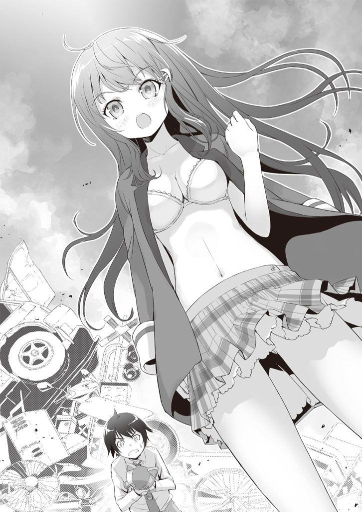
降り始めの雨のような静けさと冷たさと言いようのない切なさを伴って、コンが呟いた。
「お前、目が覚めて......」
「もういいんだ。オレが素直に消えれば済む話だろ」
「何言ってるの、そんなのダメだよ！ 諦めないで！」
コンは俯いて力なく笑った。
「気持ちは嬉しいよ。これはホントだ。お前らがオレのことを庇ってくれただけで十分幸せなんだよ。初めて心から信じられる人間に出会ったんだ......だから、もういい。お前らがオレのために傷つく必要なんてねーよ」
顔を上げたコンは、光里の表情を見て仰天したようだった。
光里の宝石のような両目からぼろぼろと大粒の涙がこぼれ落ちていたのだから。
「う、うえぇ!? どうしたんだお前！」
「何て健気な......！ こんないい子が殺されていいわけないよ......！」
「あ、あの、えっと、ちょっと......」
光里は号泣しながら、うろたえるコンを俺から取り上げてきつく抱き締めた。
「こんなことで幸せだなんて言わないで。私の家においで。たくさん遊んであげるから。もう二度と、あなたに『自分は何のために生まれてきたんだろう』なんて思わせたりしないから」
「......」
今度こそ、コンは。
光里を拒んだりしなかった。
考えてみたらコンは、天川に酷いことされてヤケクソになった後でも、大して人間を傷つけるようなことはしてねえんだよな。俺に思念力を分与しておもちゃにしたっていっても、危ない時はちゃんと助けに来てくれたし。
それなのに、天川はこいつを滅却するという。こいつに思念力があるから。人間に危害を加える可能性があるから、と。
唐突に閃いた。
だったら、コンが思念力を失ったら、もう天川がこいつを狙う理由はなくなるんじゃねえか？
「......それだ！」
「え？ 何？」
俺は興奮して光里の肩を掴んだ。
「思念契約だよ！ 天川が言ってたじゃねえか！ 俺がコンと思念契約を結べば、コンの力は全部俺がもらっちまうことになるんだろ？ そしたらコンはただの喋るぬいぐるみになる！ どう考えたって人畜無害、そうなったらもう滅却する必要なんてねえじゃん！」
俺の言いたいことをすぐ理解したらしく、光里は涙を拭いて目を輝かせた。
「そっか！ 流石陽ちゃん！」
「よし、そういうわけだコン！ 俺と思念契約を結べ！」
「え、いや......って言われても」
「何だぁ!? この期に及んで思念力を失うのが嫌だってのか!? バカ野郎、それくらい我慢しろ！ 命とどっちが大事だ！」
「そうじゃねえよ！ 思念契約を結べ、って言われても、オレにはやり方がわかんねーんだっての！」
「......へ？」
ま、マジで？ じゃあ......どうしよう。
しまった......！ 肝心の契約のやり方が、天川に訊かねえとわからん！
「日渡君、光里ちゃん、いつまで隠れているつもりだい？ いい加減出てきてくれないと、面倒くさいから君達ごと吹っ飛ばしちゃうよ？」
「わーっ、待て待て待て！」
俺はコンの手（前足？）を引っ掴んで廃棄物の陰から飛び出し、そのまま両手を上に上げた。コンが宙ぶらりんになって文句を叫んでいたが、そんなのに構ってはいられない。
「あ、天川！ 俺はこいつと思念契約を結ぶことにした！ ほら、それならこいつはもう思念力を使えなくなるわけだし、な、だったら生かしておいてやってもいいだろ!?」
「......」
天川の目つきが険しくなった。
「いいのかい？ それはつまり、コンの持っていた思念力を全て君が背負うってことだ。君が普通の人間じゃなくなるよ」
「別に俺が思念力を手に入れたって、死ぬわけじゃねえだろ。無意味に使わなけりゃいいだけだ」
「わからないなぁ。どうしてコンのためにそこまでする？ 君には何の義理もないじゃないか」
「......コンがいなくなったら光里が悲しむからな。それに」
俺にだって、あいつが滅却されなきゃいけないとは思えないんだ。
「あいつが死ぬよりは、俺がビックリ人間になった方がまだマシだ」
「もう一度Ｔになるつもりかい？」
「ならねえよ！」
ふっ、と張り詰めていた糸が緩むように、天川の表情が柔らかくなる。
「そこまでしてコンを助けたいって言うのか。わかったよ」
天川は構えていた千円札をしまった。
──そして。
バッ！ と今度は、両手にいっぱいの福沢諭吉を取りだして、扇のように構え、完全に白旗を上げている俺達に容赦なく突き付けたのだった。
「......へ？」
「君の覚悟に敬意を表して──君達が僕に勝ったら、契約の仕方を教えてあげると約束しよう！」
「なんで────ッ!!?」
次の瞬間、それまでとは比べものにならない規模の攻撃が、俺達の真横の地面を抉り取った。俺達はたまらず悲鳴を上げて逃げ出した。
「な......何でだよォォオオ!? 全っ然意味わかんないんですけど!? お前と戦いたくないから契約の仕方教えろっつってんのに、何でお前を倒さねえと教えてくれないの!? そのプロセス必要!?」
しかも今度は万札使ってくるし！ 超マジだし！
「問答無用！」
圧倒的な天川の攻撃に俺は為す術なく、逃げ惑うことしかできない。
「お、おい人間、どーなってんだよこれ！ 全然ダメじゃねえか！」
「うるせええええ！ こっちが訊きたいわぁ！」
くそっ！ マジで何考えてんだあの野郎！ そんなにコンが憎いのか!? ......どうしてもこいつを滅却しねえと気が済まねえってのかよ！
「ふざけんな......！」
異常事態に気付いた光里がこちらに駆け寄ってこようとしたが、俺は全力で止めた。
「光里、こっち来るな！ 危ねえ！ 天川君はやっぱり頭のおかしい人でした！」
「でも陽ちゃん......！」
「あいつのことはこっちで何とかするから、お前は怪我しないように隠れて──うぎゃ～～～っ！」
またも攻撃が炸裂。直撃こそしなかったものの、爆風を受けて俺とコンは吹っ飛んだ。
「......お遊びは、ここまでだ」
一際低い声。寒気を感じ、俺はばっと声の方──天川の迫って来る方に顔を向けた。
天川が、一枚の万札を掲げている。次の瞬間、万札が自然発火して炎に包まれた。そして万札を燃やしつくした炎は、それを糧としたかのように一気に燃え上がり、天川の頭上に巨大な火炎球を形成する。
「お......おい嘘だろ？ お前、そんなやばいもの同級生に投げつけるつもりなの？」
「五秒待ってやる。早くその化け猫から離れるんだね」
「台詞完全に悪役じゃねーかお前！」
「五......」
ぶん、と。天川はそのタイミングで、躊躇なく火炎球をコンに──というか、俺に向かって投げつけた。
「いや五秒どころか一秒も待ってねえぇ──っ！」
ツッコミながら全速力で逃げる俺、とコン。しかし火炎球はあまりにも巨大で、とてもではないが逃げ切ることはできない。
「──ッ！」
避けられない。当たる。燃える。焼け死ぬ。
──その時。
「陽ちゃんっ！」
廃棄物の山の陰から光里が飛び出して、俺とコンを庇うように両手を広げて立ち塞がったのだ。
「なっ......!?」
ほっ......本当に命懸けやがった！ 咄嗟に迫りくる炎の前に仁王立ちって、どんだけ勇気あんだよこいつは！
「くっそぉぉおおおっ！」
光里だけは──こいつだけは、何が何でも守らなければ！
火炎球は容赦なく光里を飲み込まんと降り注ぐ。
刹那。コンがこちらを見た。目が合う。
俺とコンが全く同じことを考えているという確信が湧いた。
無意識だった。俺はコンに手を伸ばし、コンは俺に前足を伸ばす。
触れ合った瞬間、眩い緑の閃光が俺の視界を埋め尽くした。眼球が内側から直接発光しているかのような眩しさ──そうだ、これは。
思念塊と適合者が、繋がる感覚だ。
膨大な力を束ねた糸が、俺の体に巻き付いてくる。
わかる。俺はこの力の使い方を知っている。
「だああああああっ！」
何をどうしたのかはよく覚えていない。
だが、気がつくと俺の眼前には、この処理場にあった全ての廃棄物を集結させて組み上げたようなガラクタ巨人の上半身が出現して、その巨大な腕で光里の周りを庇うように覆っていた。
火球が巨人に炸裂する。爆発音が響いて巨人の腕は派手に損傷し、巨人を構成していた幾つもの廃棄物が吹き飛んで辺りに散らばったが、しかしその衝撃は腕の内側にいた光里に届くことはなかった。
「......え？」
光里は呆然として自らを守った巨人を見上げ、
「あれ？」
崩れた腕の隙間からこちらを振り返る。
「今のは──」
俺がやったんだと、直観で理解した。
「ふん！ ふん！」
コンがぱたぱたと犬かきのように手足を動かす。......が、何も起こらない。
「オレの思念力が使えなくなってる......！ これは、まさか──」
主導権が俺に移った──のか？
「思念契約が成立したってことか......!?」
「さあ、どうかな？」
背後から突然の声に振り向くと、いつの間にか急接近していた天川が、万札をナイフのように振りかぶっている。俺は心底びっくりしながらも、咄嗟に手を天川の方に突き出して思念力を発動させた。
ガラクタ巨人が分解し、瞬時に俺を守る盾に再構成。天川の万札から迸った雷撃は盾に弾かれて四散する。
この感覚、間違いない。思念契約は成立し、俺はコンの力を全て受け継いでいる！
「おい天川！ 見ろよこれ！ 契約できたぞ！」
「ん？」
しかし天川はわざとらしくとぼけた顔をしながら攻撃を続ける。
「もう契約は終わってコンは力を失ったって......！」
「ごめーん、何言ってんのか聞こえなーい」
「いや、だから......！」
「ホントごめんね。全然聞こえないんだ。電波悪いんじゃない？」
「電波はテメーだぁあッ！ わざとだろこの野郎！ どう言うつもりだゴラァ!!」
文句を言う俺に向けてもう一発飛んでくる。あくまでしらを切り、攻撃をやめるつもりはないらしい。
「あんの野郎......！」
流石に堪忍袋の限界だった。力任せにやりたい放題やりやがって。もうこちらも逃げ回ることしかできないわけじゃない。コンの思念力を手に入れた今の俺なら──天川とだって戦える。
「上等だコラ！ もう許せねえ、もう我慢できねえ！ テメーは一発ぶん殴ってやりてえと思ってたとこなんだよ！ こっちも本気でいくぞ天川ァ！」
自らを鼓舞するために咆哮し、俺は盾を分解してガラクタの破片で自らの腕をコーティングした。大きさ五メートル以上にも及ぶ巨大な機械の手。そんな大きさのものを腕にくっつけたら物理的にどう考えても動けないはず──だが、コンの思念力を使えば質量に関係なく自在に操ることができるということを、俺は直観で理解していた。
ぶおん、と巨大な機械の手を思い切り振ると、それだけで衝撃波が生まれ、天川の体をを奴の攻撃ごと吹き飛ばす。
俺は吹っ飛んだ天川に走り寄って間合いを詰める。途中、天川が雷撃を繰り出したが、機械の腕で弾き返す。
「お返しだ！」
俺は機械の腕を分解し、破片を弾丸のように天川に発射した。天川は透明な壁を作り出してそれを防ぐが、その隙に俺は奴の至近距離に迫ることに成功。右腕に金属を纏わせて鋭い剣に作り変えると、腕と一体化した刃で天川を縦斬りに斬りつける。天川は半歩後ずさってたやすく避け、そのまま回転し、懐から取り出した千円札を構える。だが──にゅっと俺の左足から飛び出したコンが、天川の手に噛みついた。俺が盾を分解して腕と融合させた時、一緒に俺の体の中に混ざって入り込んでいやがったのだ。
天川が一瞬だけ怯む。
そして、俺が天川の首に刃を突き付けたのと、天川が俺の首に千円札を突き付けたのは、完全に同時だった。
互いの動きが止まる。
「流石に、強いね」
「何？」
「思念契約を結ぶと、適合者は思念塊以上の力を得るんだよ」
「......そうなのか」
確かに、コンの力をそのまま俺が受け取っただけだとしたら、天川とここまで渡り合うことはできなかっただろう。
「つーかやっぱり、俺とコンは思念契約成功してたんだな!? そんでお前は、とっくにそのことに気付いてたんだな！」
「思念契約を結んだ君達の力をちょっと試してみたかったんだ。ごめんよ」
天川はそう笑って武器を引き、手に噛み付いていたコンをひょいと持ち上げて俺に手渡した。
「僕の負けだ、日渡君」
ごくあっさりと。天川はその場で自らの矛を収めた。
「もうコンを狙ったりしない。狙う理由もなくなったしね。......今までいじめてごめんよ、コン」
その時の天川の声と表情は別人のように穏やかで、それまでの裏側を勘ぐらせるような笑みとは全く違う笑顔を見せていた。
「今更だけど、教えておくよ。思念契約の方法」
「へ？」
ああ......そうか、そういやさっき、勝ったら教えてくれるとか言ってたんだっけか。すげー無意味な約束だ。
「思念契約には二つの条件があるんだ。一つは、契約する思念塊の能力を適合者が正しく理解していること。そしてもう一つは、思念塊と適合者、それぞれが強い意志を持って共通の目的のためにその思念力を使おうとすることさ。その瞬間に契約は成立する」
「そ......そうなのか......？」
それじゃあ、さっき契約できたのは、あの火炎球が迫った時、俺もコンも、同時に光里を守ろうとしたからか。
......。なんか照れくさい。
ひょっとして、天川が問答無用で攻撃してきたのは、俺達を追い詰めることで「天川を倒す」という共通目的を作らせるためだったのか......？
「じゃあ用は済んだから、僕はもう帰るよ。ばいばい」
「ま、待てよ天川！ 説明が少なすぎ──」
「あ、後片付けよろしくね」
「は!?」
五千円札をひらひら振って見せた直後、天川の姿はその場から影も形もなく消え去ってしまっていた。後に残されたのは、俺達と、そして度重なる戦闘によってハチャメチャになった廃棄物処理場。
「......」
後片付けって......俺に思念力で元通り直せっていうのか!?
「あ、あの野郎......面倒ごと押しつけて帰りやがった！」
「陽ちゃんっ！」
コンを抱えて呆然と立ち尽くしていると、駆け寄ってきた光里にいきなり抱きつかれた。
思いっ切りである。全力ハグである。
「お、おお!? どど、どどどどどどしたん!?」
光里は今ブラジャーに上着を羽織っただけという攻撃力特化の格好をしているのだ。防御力はほとんどゼロである。そんな状態で抱きつかれたら光里のマシュマロが俺の体にプッシュされてマッシュポテト状態だ。そりゃあ口調もおかしくなるさ。
「よかった......コンちゃん、無事だったんだ......」
光里は俺の体ごとコンを抱き締め、涙ぐんで頬ずりした。そして俺の顔を見つめ、
「陽ちゃん、本当にありがとう！」
満開の笑顔。
瞬間的に、何だかもう全部がどうでもよくなった。
頭が抱き枕になったり、影時とキスしそうになったり、天川に殺されそうになったり、これから膨大な事後処理が残ってたりするけれど──でも。
「......どう、いたしまして」
光里のこの笑顔に辿り着けたなら、それで十分じゃないか。
６．
「天川は全て計算ずくだったのではないかと思うのだ」
悪夢のようなごちゃ混ぜ事件の翌日、屋上でコーヒー牛乳のストローをくわえながら、影時は言った。ちなみに昨日天川に壊された屋上の床は俺の思念力によって元通り修復済みである。
「あいつは最初から俺とコンの間に思念契約を結ばせようとしてた、ってことだろ？」
「ああ。だがその『最初』というのは、恐らく天川とコンが出会った時までさかのぼる」
......ん？ そりゃどういうことだ？
「それはおかしいだろ、だってあいつは最初コンに会った時酷いことを──」
「だが、それならコンは何故今までずっと生き延びてきたのだ？ 天川だったら出会ってすぐにコンを滅却することもできただろうに」
......確かに、あいつの力ならそれくらい簡単だろう。まして、コンは初めてまともに話してくれる人間に出会って浮かれていた。不意を突けばコンの滅却なんて造作もなかったはずだ。それなのに、コンが昨日まで天川から逃げ延びていたということは──
「今までずっと、わざとコンを見逃してたってことか......？ 何でそんなこと？」
「天川も、本心ではコンを滅却したくなかったのではないだろうか。だが思念力を持っているコンを野放しにしておくのも危険だ。だから天川はコンが思念契約を結ぶように誘導しようと考えたのだろう。俺達、正確には適合者であるお前を巻き込み、そうせざるを得ない状況を作り出すことでな。そうすればコンを滅却することなく無害化できるから」
「じゃああいつは、コンが適合者を見つけ出すまであいつを泳がせてたってことか？ 思念契約を結ばせるために？」
「あくまで推測だがな」
「......」
何だよそれ......。結局全部あいつの掌の上だったってことか？ 俺はあいつに都合よく利用されただけじゃねえか。
「あーくそ......あの野郎今度会ったらただじゃおかねえからな」
悔しくて負け惜しみを言っていたら、屋上の扉が開いてコンを抱っこした光里が足を弾ませてこっちにやってきた。
「ねえねえ見て陽ちゃん、真上くん。ほら」
光は興奮気味のテンションで、ひょいとコンを抱き上げて俺達に見せる。
ふてくされたような表情でされるがままになっているコンの首には、可愛らしい赤の首輪が。首輪には「Ｋｏｎ」と書かれた小さなネームプレートがぶら下がっている。
「それ......」
「コンちゃんに作ってあげたの。これで迷子になっても大丈夫だよ」
「コン、お前......」
俺が言わんとしたことが伝わったのか、コンは慌てた様子で早口になる。
「こ、この女がしつっけーから仕方なくつけてやってんだぞ！ 本当はオレこんなの要らないんだからな！」
「はぁ、可愛い......」
光里の幸せそうな甘い吐息。ぎゅ、と光里に抱き締められて、コンはまた黙ってしまった。本当は嬉しいけど、でも嬉しいと思われるのが嫌だから渋々抱き締められていることにしよう──とか考えているのがバレバレの照れまくった表情で。
こいつ、完全に手懐けられてやがる。甘えん坊の子どもそのものじゃねーか。......けど、これがコンの本当の姿なんだろうな。光里も嬉しそうだし、まあいいか。
こいつのせいでおかしな力を手に入れてしまって、これからの学校生活に不安はつきないけれど、まあ、それも案外面白いのかもしれないな、と。
光里の腕の中にすっかり収まってしまっているふてぶてしいぬいぐるみを見ながら、俺はそんなことを思った。
第二話 パンツ天国
１．
一人の美女が、建設途中のビルの鉄骨に腰掛けて夜空を見上げていた。
「この街って星がよく見えるよねー。そんなにド田舎ってわけでもないのに。ちょっと遊ぶところが少ないのがネックだけど、綺麗なビーチもあるし、利便性と自然環境のバランスがちょうどよくて、住みやすいところね。......そう思わない、星也君？」
「......」
美女の背後で舌打ちをして、天川星也は鉄骨の陰から出て月明かりの下に姿をさらした。
「......そいつを返して貰えませんか、火威先輩」
「や～だ♪」
火威はふわりと空気を含んで肩に落ちる赤茶色の髪を揺らし、おどけた様子で振り返る。天川は怒りで引きつりそうになる表情を何とか引き締め、火威に向かって歩を進めた。
「何のつもりですか？ それが重要なサンプルだと言うことくらい、あなただってわかっているでしょう」
「わかってるわよー。わかってるから、星也くん、こうしてイレギュラーを起こしてあげてるんじゃない」
火威の人を食ったような反応に、天川は苛立って眉をひそめる。
へその見えるキャミソールにミニスカートという、露出度で言えば下着と大して変わりないような服装。自分の身体によほど自信があるのか、この女はやたらと肌を外気に曝したがる。
「何を企んでいるんですか」
「んふふ、それはね、とっても楽しいことよ」
火威は人差し指を唇にあて、ウインクをして見せた。
妖艶でありながら天真爛漫な雰囲気を纏う彼女の、そういう所作が天然なのか故意なのか、天川にはわからない。というかわかるつもりがない。正直どっちでもいい。
「なるほど。あなたにとって楽しいことであれば人類にとっての害悪ということになりますから、それでは阻止させていただきましょう」
「ひどっ！ ひどいよー星也くん。人類と私、どっちの方が大切なわけ？」
「菌類とあなたなら辛うじて菌類ですね」
「キノコにすら勝てないのね......」
火威は肩を落とした。それからむっと頬を膨らませて、
「怒ったわよ星也くん。君をやっつけて、絶対このウフフな企みを成功させて見せるんだから」
「へぇ。僕に逆らう、と」
天川はせせら笑った。
「あなたがこの僕に力ずくで逆らうと──そういうことですか。それは楽しみですね。では火威先輩」
懐に手を入れ、数枚の万札を取り出して扇状に構える。
「あなたは一体、僕にいくら使わせることができるのでしょうか」
天川星也。
金銭の価値を物理的な戦闘力に変換する力を持つ思念能力者。
彼の無限の力の源である武器を突き付けられた火威は──
「そうねぇ」
人差し指を唇にあて、ウインクをして。くすり、と小さく微笑んだ。
「もったいないから、一円も使わせてあ～げない」
刹那、天川の手の内から全ての万札が消え失せる。
「な──!?」
同時に火威の姿も消え、
「こんな大金、一年生には早すぎるわよ」
直後に天川の耳元で妖艶な唇が囁いた。
「お姉さんが没収しちゃう」
「くっ......！」
予備の万札を手にしようと、天川は咄嗟に懐へと手を入れる。だが──遅かった。
「じゃあね、星也くん♪」
２．
「いやー、今日の『洗王』は神回だったな」
影時は鼻息を荒くして語る。
「華王にあのような驚くべき過去があったとは......。今まではただのよくあるライバルキャラかと思っていたが、そうテンプレ通りにはいかないのが『洗王』の凄いところだ。しかしなんといっても今回の一番の見どころは、まさかのタイミングでのパンドグ参戦だろう。洗王のスプラッシュワイプと華王の広域ハイターとパンドグのアリエル・デトックス......三人の仮面ワイパーの合体技が見られるとは思っていなかった！」
「......あぁ、そうかい」
「しかもただ単純に同時に技を放っただけではなく、アリエル・デトックスの『周辺空間のライオネル浄化率を極限まで高める』という性質を広域ハイターによって拡散させることで、スプラッシュワイプの『威力は高いが攻撃範囲が狭い』という弱点をうまく補う連携を見せたのだ！ そのシーンの演出がまたカッコよくてだな、まずパンドグの......」
『仮面ワイパー洗王』。火曜の早朝にやっている特撮モノだ。影時は男前な外見とは裏腹に極度の変態であり且つ重度のオタクであるため、アニメ・特撮については非常に詳しい。そしてこの仮面ワイパー洗王は影時が特に気に入っている番組の一つらしく、俺の火曜の朝はいつも影時の洗王に対する濃厚で熱すぎで長すぎる語りから始まる。おかげで見てもいないのに大まかなストーリーを把握してしまっていた。
......大体学校に着くまでの二十分間はひたすら語っている。十分ぐらいで光里と合流できる交差点に辿り着くので、それまではひたすら適当に相槌を打って流す、というのが中学校時代から続く火曜朝の習慣のようになっていた。
「──つまりその演出の何が素晴らしいかというとだな、スーツアクターの動きと特殊効果の映像とが完璧にマッチすることによって──」
身振り手振りを交え大げさに語りながら、俺の前で、俺の方を向き、後ろ歩きで進んでいく影時。曲がり角が近づいて来たので、話に夢中で気が付いていない影時に教えてやろうとしたのだが──少々遅かった。
影時は、早足で曲がり角を曲がって来た女性とぶつかってしまったのだ。何だかここのところよく人にぶつかるな。今回は俺じゃないけど。
「きゃっ」
「うわっ」
影時の背中が女性とぶつかって、ぼよん、と冗談のような音がした。影時はなんだかよくわからない凄い表情になって、自分の背中──女性との接触ポイントをまさぐる。
「い、今の感触は......ハッ！」
振り返り、女性に気がついた影時は固まった。
影時がぶつかった女性は、それはそれはもう、とびっきりの美女だったのだ。肩まである赤茶色のふんわりとした髪、自然な色気を醸し出す桃色の唇、そして何よりも抜群のスタイル。胸が物凄いことになっている。しかもキャミソールにミニスカートと露出度が相当高い格好で、......悔しいが俺はちょっと息を呑んでしまった。
こんなセクシーな美女に朝っぱらから出会ってしまったら、超絶ド変態の影時が平静を保っていられるはずがない。
「お......おおおっぱおっぱおっぱおっぱおっぱおっぱおっぱおっぱおっぱおっぱおっ」
指をワキワキさせながら涎を垂らし白目になって意味不明の呪文のようなものを口走り始める影時。即座に通報されても文句は言えないレベルの気持ち悪さだったが、しかし女性は余裕たっぷりに笑顔を見せた。
「ごめんね。ちょっと急いでたから」
「あ......ああ、大丈夫でおっぱ。お姉さんこそお怪我はありませんおっぱ？」
「語尾！ 語尾やべえことになってるぞ影時オイ！」
「ふふ、大丈夫。......ふうん、そっか。面白い子だね、君」
女性はしばしの間影時の顔を見つめてから、背伸びして自分よりも背の高い影時の頭を
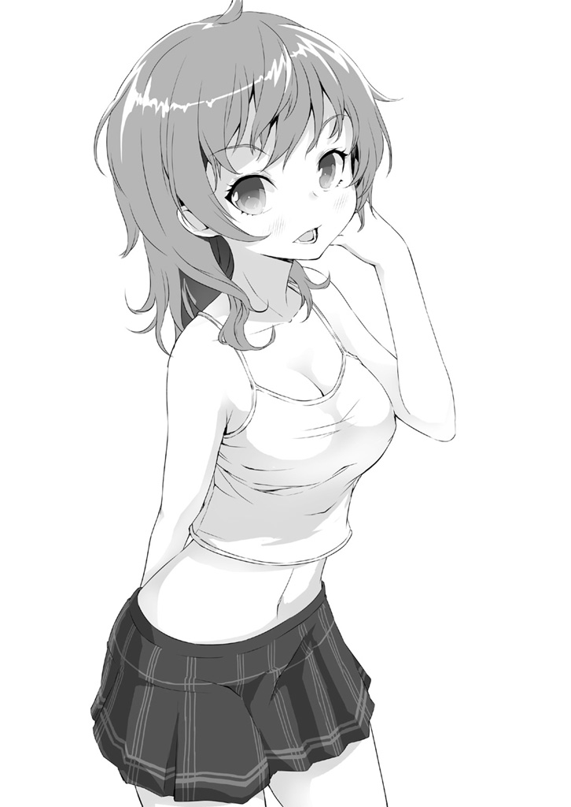
撫でて無邪気にはにかんだ。「あはっ、届いた。よしよーし、それじゃ、学校頑張ってね」
頭を撫でられながら、影時の視線が女性の顔と胸の谷間とを高速で往復する。
「は......はいでおっぱ！ 頑張るでおっぱ！」
「んふふ。ばいばーい」
そして女性は子どものように大げさに手を振って歩き去っていった。通学途中の和田川高校男子生徒の視線を独り占めにしながら。
「......なんか、不思議な人だったな」
まさしく「妖艶」という言葉がぴったりな外見の美女なのに、瞳の輝きや身に纏う雰囲気が、どうにも──子どもっぽいというか。幼いとも言える。しかし影時は、そんな些細なことはどうでもいいと言いたげに、
「いやー、朝から貴重な体験だったでおっぱ。今日はラッキーだおっぱ」
恍惚とした表情で美女の去った方向を目で追い続けていた。俺は溜息をつく。
「ったく、お前は本当に飽きもせず変態だな」
「飽きてたまるかでおっぱ。俺の粒子加速砲が使用不可になるまで俺は変態で在り続けるおっぱ」
「いい加減その語尾をやめろ！ 気色悪ぃんだよ、ろくでもないマスコットキャラみたいになってるじゃねえか！」
「やはり、女性の体の美しさは曲線の美しさだな。女性的な曲線美は、こう、見ているだけでもムラっとくるものがある」
「ムラっとくるという言葉はそこはかとなく気持ち悪いけど......」
まあ、否定はできない。
「そういう目で見ると雲形定規すらエロく感じるから不思議だな」
「それは本当に不思議だよ！ お前は雲形定規をどういう目で見てるんだ!?」
「え？ 健康な高校一年生男子だったら、ト音記号を見て『こいついやらしい体してんなぁ～』って思ったりするだろう？」
「それは健康ではなくむしろ重症だ！」
普通はまずト音記号の体がどこなのかわかんねえよ。
「ふっ、真面目っ子ぶってはいるが、陽太。お前だってあのお姉さんのおっぱいをチラ見していたではないか」
「......無機物の曲線には興味ねえけど、そりゃ俺だって、女性の体には興味あるさ」
「それで犯射的にあのおっぱいに目を奪われてしまったということか」
「その悪意ある誤字をやめろ」
「ふっふっふ、何も変わらんのだよ陽太。お前と俺は。思春期の男子ならば誰もが持つ御し難きエロスへの衝動を、お前は理性によって抑制し俺は本能に従って解放している......たったそれだけの違いだ。そこにどれほどの差があるものか」
「全っ然違うわ！ 原人と文明人くらい違うわ！」
突然、ふわっと温かくて柔らかくてしっとりしたものが俺の両目を覆って、俺の視界を塞いでしまった。何これという疑問と同時に鼻腔に届く、花の蜜のような甘い匂い。
後ろから両手で俺の目を塞いでいるのが誰なのか、すぐにわかった。......そして、最早匂いだけでこいつを特定できるようになってしまっている自分に若干引いた。
「だ～れだ？ ......と無邪気に尋ねるふりをして墨汁を塗りたくった掌を陽ちゃんの両目に押しつけることによってパンダのような模様をつけることに成功したなう」
「『だ～れだ？』の部分要らねえだろそれ！」
ただのたち悪い悪戯じゃねえか！
「ちょっと待てオイ、お前何してくれてんだよ！ これ目開けて大丈夫か!? 墨汁目に入ったら痛いんじゃねえのか!?」
「平気だよ、嘘だから」
光里は笑って手を放す。光里が開いて見せた手には墨汁なんてついていなかった。白くてすべすべした、いつもの綺麗な光里の手だった。
「何だよ......驚かせやがって」
「おはよう、宇月さん。君は相変わらず可愛らしいな！」
「ああうん」
影時の言葉を軽くスルーして、光里は背負っていたバッグの口を開ける。するとそこからぴょこんとコンが顔を出した。
「光里、お前こいつ......！」
「連れてきちゃった」
「きちゃった、って」
「大丈夫、学校では動くぬいぐるみってことにしておくから」
「なんにも隠せてねえ！ 大丈夫じゃねえから！」
「『喋る』ってことは隠しておくから。究極、それさえばれなければ他はどうとでもなるでしょ？」
「なるかなぁ......？」
「......フン」
俺と目が合うと、コンはこれ見よがしにべ～、と舌を出して来た。生意気な奴だ。
あの事件の後から、コンは光里の家で預かってもらっている。一応俺がこいつの契約主ということになってはいるが、別に飼い主になったわけじゃねえからな。コンも俺より光里の方が気に入ってるみたいだし。
「コン、お前光里に迷惑とか掛けてねえだろうな？」
その質問にはコンの代わりにご機嫌な様子の光里が答えた。
「迷惑なんて全然。コンちゃんは良い子だから」
ね、と振られ、コンは「別に良い子じゃねーよ」と照れた様子でぷいとあさっての方向を向いてしまった。光里は微笑み、コンの頭を優しく撫でた。
「私、今日日直だから急いで行かないと」
「そうなのか」
「うん。だから先に行くね、陽ちゃん、真上くん」
「わかった、また後でな」
「うん。また」
「学校で再び出逢えることを心待ちにしているぞ！」
「ああはい」
俺には微笑みを、影時には微妙な笑みを返して、光里は早足で去って行った。
影時はしばらく笑顔で光里の後ろ姿を見つめていた。そして強張った笑顔のまま、
「陽太。俺は宇月さんに嫌われているんだろうか」
「逆に考えるんだ。光里に嫌ってもらえるなんて幸せだと」
「そうか、そういう楽しみ方もあるのか......」
納得するなよ。まあいいけど。
「しかし、後ろから目隠しをして『だ～れだ？』なんて、本当にそんなことをしてくれる女の子が実在するとは思わなかった。可愛すぎるではないか。超萌えたぞ」
「確かにあいつはスキンシップが異常なくらい好きな奴だけど、でも流石に公衆の面前であんなことしてくんのは珍しいな」
「『公衆の面前で』、ということは、お前と二人きりの時ならああいうスキンシップも珍しくはないと言うことか」
「............」
「陽太爆発しろ」
「爆発はしねえ」
これは光里を変人たらしめる要素のひとつなのだが、あいつはとにかく人肌寂しがり屋というか、柔らかかったり温かかったり手触りが良かったり可愛かったりするものと可能な限り触れ合っていたがるのだ。
「なるほど、そう言えば確かに宇月さんはよく曽根さんなどの仲が良い女の子にぴったりとくっついていたな。よく百合展開キタコレと妄想の糧にさせてもらっていた」
「やめろ変態」
「だからお前におっぱいを揉みしだかれながら合体した時もそれほど抵抗せずに受け入れていたのだな」
「やめろ変態！ その表現は誤解を招くわ！」
小さい頃の光里は老若男女関係なく隙を見てはひっつくというオナモミのような奴だったが、流石にそれでは危ないということで小六のころ本気で説教をしたらそれからは大分マシになり、相手を選ぶようにはなった。しかし未だに他人と身体的に接触するということに対する抵抗感が常人よりもよっぽど低いようで、年頃の女の子にしては驚くくらい身体的なセキュリティやガードが甘い。俺としては少々心配である。
光里は俺にとって家族同然の存在だ。あんまり危なっかしいことはして欲しくない。
「......つっても、さっきのはその性質だけに由来するもんでもないと思うけど。あれはスキンシップが好きだからやったって言うよりも、テンションが上がりすぎてついつい好きなことが我慢できなくなったって感じなんじゃねえか」
「ではなぜ宇月さんのテンションが高かったんだ」
「そりゃあ言うまでもなくコンが原因だろ。あいつずっとペット飼いたがってたからな」
だが光里のおばあさんがあらゆる動物に対してアレルギーを持っているので飼えなかったのだ。しかし、コンは動物ではない。ぬいぐるみである。しかし動いて喋るのである。そんなものと同居できるとなれば、病的な可愛いもの好きの光里が喜ばないわけがない。
「......あいつが喜んでくれたなら、俺も思念契約した甲斐があったってもんだ」
「陽太......」
影時がニヤニヤしながら俺の肩にぽんと手を置いた。
「......なんだよ」
「いや、別にぃ？ 幼なじみとのフラグが順調に育っているようで何よりだと思ってな」
「な......なんだそりゃ......」
どうしてそんなに楽しそうなんだ。このギャルゲー脳め。
「あのな、別に俺と光里とはそういうんじゃねえからな。幼稚園入る前からずっと一緒だったんだ、兄妹みたいなもんだぞ？ 今更恋愛感情なんて......」
「はいはいノロケ乙ノロケ乙」
「いや少しものろけてねえだろうが！」
「あーそうだな悪かった、俺の見方が穿ちすぎだな。うぷぷぷぷ」
何て気持ち悪い笑い方しやがるんだこいつは......。
「......そういうお前こそどうなんだよ。浮いた話の一つや二つあっていいはずだろ」
そう、変態オタクというマイナス面に打ち消されがちだが、影時はイケメンで長身でサッカー部のエース候補、と並々ならぬポテンシャルを持っているのだ。高校で彼女なんか作ろうと思えば簡単に作れるだろう。
「俺か？ 俺はないさ」
「何だよ、即答かよ」
影時はうーむ、と唸って顎に手を当てた。
「いやな、さっきは義務的にお前と宇月さんのイチャイチャシーンを妬んで見せたが」
「変な義務感を持つな。あとイチャイチャシーンて言うな」
「実は俺は恋愛感情というものを経験したことがないのだ。例えば『魅力的な女性だ』と思っても、『その人でなければいけない』といった想いは湧いてこない。何と言うのか、恋愛において必要不可欠な、ある異性に対しての唯一性というものを実感できたことがないんだ」
「......なんか難しく考えてんだな、お前」
そのくせギャルゲーやりまくってんだからこいつは本当に意味がわからん。
「わかりにくいか。そうだな、わかりやすく言うと」
影時はコホン、と咳払いをした。
「地球上の女の子全てが好きすぎて一人に絞れない」
「最低か!?」
「そして主に女の子の体にしか興味がない」
「最低だ！」
「訂正。女の子の下着にも著しく興味がある」
「最低だな！」
「使用済みだとなお良い」
「もう早く捕まれよお前は！」
「はっはっは。まあその話は置いておくとして。ところでお前、あれからコンの力を使ったりはしていないのか？」
「？ いや、ほとんど使ってねえよ」
コンと思念契約を結んだ俺は、コンの思念力である『物体同士を混ぜ合わせる力』を使えるようになった。のだが、
「せいぜい封筒の糊づけくらいか」
「そ、そんなショボいことにだけか......」
「色々試してみたんだけど、なんか俺一人じゃ大したことはできないみたいなんだよな。せいぜい何かと何かをくっつけるくらい。近くにコンが居ないと全然駄目だ」
今は思念契約の効果によって俺に主導権があるとはいえ、この力は本来あのツギハギぬいぐるみのものだ。やっぱりあいつの存在がこの力を使いこなす上では重要な鍵になっているのだろう。
「天川も、あれから特に何も言ってこないしな......」
自称「思念糸の専門家」で、人間に害を為す思念塊を退治することを仕事にしている美少年、天川星也。一週間ほど前にコンを巡ってちょっといざこざがあったのだが。
「今はただ、俺がコンの力を悪用しないよう見張ってるだけなのかも知れないな。で、お前何で突然こんなこと？」
「実はな、俺も昨日不思議な夢を見たんだよ。それでちょっと気になってな」
「不思議な夢？」
「ああ。俺はいきなり真っ白くてだだっ広い空間にいて、そして目の前にハムスターが居るんだ。そして驚くべきことに、そのハムスターは『天むす』だった」
「天むすって......」
「天むす」というのは、名古屋名物の塩味を効かせた海老天を具にしたおにぎりのこと──ではない。うちのクラスで飼っているハムスターの名前だ。
動物が大好きなのにおばあさんが動物全般にアレルギーを持っているという不運により家でペットを飼えない光里が、生き物係というものを勝手に提案・立候補して教室で生き物を飼おうと画策したことによって我がクラスに召喚されたハムスターである。そいつの体毛が白・黒・茶の三色で、しかもちょうど海苔でご飯を巻いてそこから海老天がはみ出ているような模様をしてたもんで、満場一致で「天むす」なる名前をつけられてしまったのだ。愛称は「天ちゃん（光里専用）」。光里には可愛いと思ったものはちゃん付けで呼ぶというポリシーがあるのだ。
「あの特徴的な模様を見間違えるはずがない。あれは確かに天むすだった」
だとしたら、何故天むすが影時の夢に出てきたのだろう。ただの偶然ならばいいが、しかしそう決めつけるにはあまりにも──
俺とコンの出会いと、共通点がありすぎる。
「それで、天むすはお前に何かしてきたのか？」
「いや、それが何も。驚いた俺は色々と質問したんだが、天むすの姿は電波障害の起こったテレビのように不安定で、何かを言っているのはわかったのだが何を言っているのかまでは聞き取れなかったんだ。結局何が何だかよくわからないまま、天むすの姿は消えてしまった」
「お前、身体に何か異変はないか？」
俺の時のように、夢を通じて思念糸を分与されたというのならば、影時にもそれなりの影響が出るはずだ。だが、
「いや、特に何も。お前のように思念糸を分与されたわけではなさそうだ」
「......何だかよくわかんねえな、そりゃ」
しかし──敢えて俺の時と重ねて考えてみるとすれば。
天むすはもう思念塊になっていて、そして適合者である影時に夢を通じて思念糸を分与しようとしたか、或いは何らかのメッセージを送ろうとしたということか？ だがなぜかそれがうまくいかなかった？
「ふむ......考えてもどうすればよいのかよくわからなくてな。とりあえず学校に行けば天むすにも天川にも会えるわけだから、天川に事情を話して判断を仰ごうと思ってな」
「確かにそれが一番か」
俺達素人があれこれ推測するよりも、「専門家」である天川に訊いた方が確実で手っ取り早い。
「天川か......」
あの澄ました笑顔を思い浮かべる。あいつのことだ、俺達の方から相談するまでもなく、既に色々と把握していそうなものだけれど。
「ま、とりあえず学校に着いたら探してみようぜ」
ゴトリ。路地裏で何かが動いた音がした。
「ん？」
そこは狭すぎて陽も当たらないような、両側のビルのゴミ箱やパンパンのゴミ袋の一時的な廃棄場所になっているところだ。野良猫か何かだろうか？
気になって覗き込んでみると、人が倒れていた。それも和田川高校の制服である。
「!? お、おいどうしたんだあんた！」
「何だ、陽太。何があった？」
慌てて駆け寄り、助け起こす。そいつは全身煤だらけで、ズタボロのボロ雑巾のようになって、ゴミ袋をベッドにうつ伏せに倒れていた。
「お、おい大丈夫か──」
と、そいつをひっくり返し、顔を見て、俺達は仰天した。
噂をすれば影──と言っていいのだろうか、この状況は。
女子とも見紛うほどの美少年で、爽やかな笑顔で真っ黒い本性を隠し、コンの処遇を巡って散々俺達を振り回しやがった食えない奴。
そして、圧倒的な力を持つ、思念糸の専門家。
──天川星也が。
見る影もなく、髪はボサボサ顔は煤だらけ、服も布の切れっぱしのようにボロボロにされた、そんな状態で、生ゴミよろしく路地裏にうち捨てられていたのだった。
「一体何があったんだよ、天川」
気がついた天川は、人目を避けるように俺達を校舎裏に呼びつけた。今は顔を拭いて髪を整え、多少は見られる姿になってはいるが、それにしてもこの天川星也がここまでコテンパンになっているなんて。何が起きたのか想像もできない。
「......しくじったよ。完全にしてやられた」
天川はせっかく整えた髪を、苛立たしげにくしゃりと掻き上げた。
「その体は、思念塊にやられたのか？」
「半分正解、半分不正解と言ったところかな」
「どういうことだ？」
「そうだね、何から話せばいいか......」
天川は少し考えてから、何やら慎重そうに口を開いた。
「僕は『思念糸の専門家』だって言ったけど、それは僕個人で名乗っていることじゃない。思念糸に関わる様々な問題に対処する為に創設された全国規模の組織『思念紡績協会』──縮めて協会って呼んでるけど──っていうものがあって、僕はその組織の一員として働いている」
「そ、そんなもんがあんのか......」
考えてみれば確かに、思念塊がこの街にしかいないというわけもないし、そういう対策用の組織みたいなのがあったとしても不自然な話ではないけれど......。
「思念塊から人々の生活を守るための地下組織、か......！ いいなあ、カッコイイな！」
影時が一人でテンション上がっている。そういうの好きそうだからな。
「それで、僕は今月からこの街の担当になったんだけど、もう一人の職員、僕の一つ年上の思念能力者と組まされて一緒に仕事をすることになったんだ」
組まされて、という部分にアクセントがあった。
「その人は火威美紅という女性なんだけどね、実力は問題ないんだけど人格に問題があって」
「問題って？」
「変態なんだよ」
嫌な即答である。
「彼女の変態っぷりは一言二言で語りつくせるものじゃないけれど、強いて特記事項を述べるとしたら女性の下着に対して偏執狂じみた興味を持っていて隙あらば着用中の女性下着を奪い取ろうとすることか」
「着用中はマズイだろ！」
「ちょっとその話、詳しく聞かせて貰おうか」
「お前は黙っていろ影時」
「ちなみにこれが、火威先輩の顔写真だ」
と、天川は懐から何かの身分証のコピーのようなものを取り出した。これがその思念紡績協会とやらの身分証だろうか、など思ったが、そんな雑念は写真に写っていた人物を見た瞬間に全部吹っ飛んでしまった。
写真に写っていたのは、紛れもなく、影時が登校中にぶつかってしまったあのグラマラス美女だったのだ。
「な、何ィ!?」
「こ、この人がお前の仕事仲間だったのか！」
「そうだよ。知っているのかい？」
「ああ。今日の朝ちょっとな」
っていうか、この人俺達と一つしか変わらないのか......？ あの色っぽさは絶対成人してると思ったのに！
「......とにかく、火威美紅はそういう性癖の持ち主だから、奇行に走らないように僕が監督していたんだよ。一般人に迷惑をかけるような真似をしたら力ずくで止めても構わない、という許可を貰ってね」
「お前の方が上司だったのか......」
「僕は優秀だから」
「その優秀なお前が、どうしてズタボロになって路地裏に倒れてたんだっつの」
「油断していた。まさか彼女が、あんな方法で対抗してくるとは思っていなかった」
「ということはつまり、お前の傷は美紅様からのご褒美──」
「そんなに欲しけりゃ俺からもご褒美やるぞコラ」
影時は黙った。男に殴られても嬉しくはないらしい。
「で、その火威さんにやられたのか？ お前」
「そうだ。彼女は僕の監視から逃れ変態行為に走るために僕を攻撃した。本来なら、この僕が彼女如きにやられるはずはないんだが──」
天川は忌々しそうに目を細めた。
「彼女は恐ろしい力を手に入れてしまった。そのせいで僕では歯が立たなくなった」
「お、お前が敵わない相手なのか......？」
コンの事件の時俺は天川にいじめられたので、こいつの強さとえげつなさが身に染みている。そんな天川ですら敵わない思念能力者──そして、変態。考えるだけで寒気がする。
「何なんだよ、恐ろしい力って」
「それは──」
パサリ、と不意に何か白い布切れのようなものが天川の頭の上に落ちた。
「ん......？」
天川が頭に手を伸ばし、頭に乗ったそれを取って、目の前に広げる。
小さな赤いリボンの刺繍があしらわれた、純白の三角形。
パンツだった。それも明らかに女物の。
「......!!?」
「うわぁあっ！」
天川は普段のこいつなら考えられないほどうろたえた叫び声をあげて、虫を払うようにパンツを投げ捨てた（影時が恐るべき瞬発力でそれに飛びついた）。
「何でいきなりこんなものが......！」
「あはははっ、面白～い！ 今の星也くんの驚き方ったら！」
隠れていたのだろう、どう見ても高校二年生には見えない件の美女、火威美紅が、ぱっと校舎の角から飛び出して、天川を指差してけらけらと明るい笑い声を上げた。
「火威先輩......！」
「やっほー星也くん。その様子だと一晩中気を失ってたみたいだね。昨晩はごめんねー、ちょっとやりすぎちゃった」
「くっ！」
天川は咄嗟に懐から紙幣を取りだしたが──しかし。
「無駄よ」
くい、と火威美紅が人差し指を曲げて見せたその瞬間に、紙幣は天川の手から消失。そしてその金は即座に火威美紅の手元に出現する。
「何だ!?」
火威美紅は驚く俺達を見て首を傾げた。
「あれ、さっきの少年達？ 星也くんのお友達だったんだ」
「は、はいでおっぱ！ お姉さんは相変わらずお美しいでおっぱ！」
「ほんと？ えへへ、ありがと～」
火威美紅は柔らかに微笑み、再び人差し指を曲げた。同時に、彼女の手元に見慣れた茶色と黒の財布が現れる。一つは俺のもの。もう一つは影時の財布だ。
「なっ......」
慌ててポケットに手を入れるが──ない。そこにあるはずの財布がなくなっている。
「ごめんね。星也くんにお金を渡されると面倒だから、君達のお小遣いも預からせてもらうわ」
「ど、どうやって......」
彼女と俺達の距離はおよそ十メートル。その距離を俺達が気付かないほどの一瞬で詰めてこっそりスッていったとは考えにくい。ポケットの中にしっかりと入っていたはずの財布は、ごく自然に、強引に引き抜かれた感触など一切なく、いつの間にか彼女の手に落ちていたのだ。
まるで、瞬間移動でもしたかのように。
「その力はやはり......！」
「そういうこと♪」
火威美紅はくるりとその場で一回転してウインクを飛ばした。
「この思念力があれば、星也くん、君の力なんてちっとも怖くないの」
「っ......！」
天川は悔しそうに唇を噛む。
「そんなに怖い顔しないでよ～。別に、星也くんをいじめたいわけじゃないよ？ 星也くんが私の楽しみを邪魔するから、仕方ないのよー」
「だから、あなたの楽しみは人類にとっての害悪だと言ったでしょう」
「失礼ねー、そんなことないもん。わかったわ、じゃあ見せてあげるから。昨日言ってたウフフな企みって何のことなのか」
火威美紅は、純真とも妖艶ともつかない不思議な雰囲気で笑って見せて、ついっと指で空間をなぞった。
次の瞬間。バサバサァ！ と、数枚のパンツが一斉に天川の全身に降り注ぎ、
「!?」
そして火威美紅は、すぅ～と息を吸い込み、両手でメガホンを作って叫んだ。
「きゃあ～～～！ 噂の美少年優等生、一年二組の天川星也くんが、女子のパンツを大量に頭から被って悦に入っているわ～～～っ」
火威美紅の絶叫は、とてつもない変態性を無差別に撒き散らす爆弾と化し、校内に漂っていた平和でのほほんとした空気を一発でかき乱した。人目の少ない校舎裏と言えど、これだけの大声が轟けば気付く人間は少なくない。なんだなんだと人が集まってくる。
強制的に爆心地に仕立て上げられた天川は、顔面蒼白になって降り注ぐパンツを振り払う。影時が阿呆のように活き活きと拾う。
「どう？ 面白いでしょ、この展開。そんな姿を見られたら、星也くんの爽やかでスタイリッシュな美少年キャラが一気に崩壊しちゃうわよ～」
「き、貴様ッ......！」
「あはは、顔真っ赤にしちゃってか～わいい。そうそう、私は星也くんのそういうところが見たかったんだ。今流行りのギャップ萌えってやつ？ そのためにー、今からこの学校中の女子のパンツを全てあなたの頭上に瞬間移動させ続けるわねっ♪」
「な、なんて恐ろしいことを......！」
俺は全身に鳥肌が立った。そんなことをされたら確実に明日から学校に来れなくなる。まして天川は学校中の女子の憧れの的だ、初期値が高い分幻滅された時のダメージも半端じゃないだろう。
「早くやめろ！ 今すぐに！」
「大丈夫、その内自分の痴態を見られるのが気持ち良くなってくるってば」
「なるわけあるか！」
「んふふ、それじゃあ存分に新しい自分と向き合って頂戴ね。ばいば～い」
そう言い残し、火威美紅はふっとその場から消えてしまった。
「ま、待て......！ くそぉっ！ あの変態女を追うぞ、日渡、真上！」
「お......おう！」
口調すら変わってしまっていることが天川の余裕のなさを雄弁に物語っている。天川は校舎入り口に向かって走り出し、俺達も後を追った。
「とにかく、まずは君とコンが合流しなきゃ始まらない！ 今この場であの女と戦えるのはコンの思念力を持つ君しかいないんだ！ 協力してくれ！」
「だ、だけどよ天川、コンの力をＭＡＸで使えるようになったとしても、お前が敵わない相手に俺が勝てるとは思えねえぞ？」
「それは大丈夫だ、僕が今の彼女に敵わないのは相性の問題なんだよ」
早口に、天川は続ける。
「昨日、僕と彼女はある思念塊を捕まえた。君達も良く知っている奴だ──僕らのクラスで飼っていたハムスター、あれが思念塊になった」
俺と影時は顔を見合わせた。影時が見たという夢は、やはりそういうことだったのか。
「天むすか！」
生きている動物も思念塊になるのかと驚いたが、そんなことを尋ねる暇もなく天川は忙しなく説明を続ける。
「天むすの思念力は『自分自身と、周囲の人物の身につけているものを自在に瞬間移動させる』というものだった。捕獲自体は簡単に成功したんだ、天むすは全く抵抗しなかったから。だけどその後が問題だった。どうやら火威先輩は僕の目を盗み、自身の思念力を使って天むすの精神を操作し、奴の力を自らのものとしたらしい。天むすの思念力が僕にとって最悪の相性だとわかっていただろうからね」
「最悪の相性って、どういうことだよ？」
「前にも話した通り、僕の霊能力は『金銭を力に変える』こと。だからお金さえあれば、金額次第でどんな奇跡だろうと起こすことができる」
「改めて考えるととんでもねー能力だな......」
金さえあれば無敵じゃねえかこいつ。
「だけどそれは、裏を返せば、力の源たる金銭さえなければ僕の戦闘力なんて平凡な男子高校生と何ら変わらないということさ。金を奪われたら本当に手も足も出ない」
だから常にかなりの金額を携帯するように心がけているんだけど──と言って、天川は眉根を寄せた。
「天むすの思念力は、僕が金銭を力に変換する前に、僕の『身につけている』金銭を僕の手から瞬時に転移させることができるんだ。だから、そもそも戦いにすらならない。どれだけの金額で武装していようと、その金を一瞬で根こそぎにされてしまうんだから」
「な、なるほど......」
そうか......確かに天川は強いけれど、でもその強さは全て「金」という一本柱が有ってこそ成り立っているんだ。そこを折られたら、もう天川には打つ手がない。
それが天川の弱点なんだ。
「だけど、コンの──君の思念力なら。自分自身と他の物体を混ぜ合わせて戦うことのできる君だったら、天むすの思念力を無効化できる。奴の思念力は、あくまで『身につけているもの』にしか発動しない。体の一部は装備とは見なされないんだよ」
「そうなのか......」
確かに俺は、天川と戦った時、周りの廃棄物を集めて自分の手と融合させた。そうやって自分自身の体を武器に変えることのできる力なら、戦闘手段を奪われてしまうことはないんだ。
「非常に癪で不本意だが、今回ばかりは心から君を頼るしか手がない。だから......頼む。僕の代わりに、あの変態女と戦ってくれ」
いつになく真摯な表情で、殊勝なことを言う天川。そりゃそうだよなぁ、自分自身の社会的な存亡がかかってるんだから......。
「しょうがねえなぁ。あんましモチベーションは上がらねえけど......」
「そうだ、日渡君、一つ君のモチベーションの上昇に貢献しそうな情報を教えよう」
「？ なんだよ」
「あの変態は、可愛い女の子の下着が大好物だ。だから美少女の下着が一番に狙われるだろう」
天川の言わんとしていることが先読み出来て、俺はさっと血の気が引いた。
「......それは、つまり」
天川は頷く。
「恐らく、この学校内で光里ちゃんが真っ先に──」
その先は、聞こえなかった。
気付けば俺はギアを最速に切り替え、天川と影時を取り残して全身全霊をもって光里のもとへ突っ走っていた。
「光里ーっ！」
ガラガラッ、と乱暴にドアを開き、俺は一年三組の教室に駆け込んだ。背面黒板の前で右往左往していた光里は、俺の姿を見つけると、目を見開いてこちらに突進してきた。
「陽ちゃーん！」
「光里ィ！」
「陽ちゃんっ！」
互いが互いに向かって突撃し、俺達は教室の真ん中でまるで取っ組み合いのように互いの肩をがしっと掴み合う。
「光里、パンツは!? ちゃんとパンツ穿いてんのかお前!?」「陽ちゃん、天ちゃんは!? 天ちゃんがどこいっちゃったのか知らない!?」「今学校に変態が侵入してパンツを奪い回ってるんだ、お前パンツ取られてないか!?」「天ちゃんがいなくなっちゃったの！ 昨日の帰りには確かに居たのに、今日の朝になったらケージから居なくなってて！」「そんなことよりパンツだよ！ 俺はお前のパンツの無事が確認できるまでその他一切のことは頭に入ってこない！」「あーもーわかったよほら、これでどう!?」
光里は豪快にスカートの前面を捲って俺に中身を見せた。黒いミニスパッツだった。
「ちゃんと穿いてるよ、スパッツの下に！」
「いやしかしこれではスパッツの下からパンツだけ消えていたという事態に対応できないからスパッツの中身も確認させてもらおう！」
「了解！ 今脱ぐからちょっと待って！」
「何やっとんじゃあんたらは───っ！」
俺の額と光里の額がごっちーん！ と派手にこんにちはした。何者かが俺達の後頭部を掴み、両側から押し付けて頭を衝突させたらしい。
「夫婦漫才ならせめてどっちかが突っ込みに回らんかい！ 部外者の手を煩わせんな！」
と、頭を押さえてぷるぷるする俺達のことを腕を組んで見下ろしているのは、光里と仲良しの女の子、曽根毬子。小麦色の肌にショートカット、アーモンド形の目と鈴を転がしたような声が特徴の活発なスポーツ少女だ。外見がどことなく猫を思わせるので、それと名前に因んで「そまり」とあだ名が付けられている。
「日渡っ！ いきなり教室に駆けこんで来るなりパンツパンツ連呼しおって、スカートの中身では飽き足らずスパッツの中身まで見せろとかどんな変態だ！ 真上か！ 真上の影響でそんなになったんか！」
「う......」
返す言葉もない。落ち着いて考えてみたら、さっきの俺の行動は完全にド変態だ。スパッツの中身確認させろとかどんなセクハラだよ。周囲のクラスメートのどよめきと冷たい視線は甘んじて受けるしかない。
「あんたも！ 公衆の面前で躊躇なくスカート捲んな！ 女の子だろ！」
えー、と光里は口を尖らせる。
「どうせスパッツ穿いてたし、いいじゃない。私、スカートの防御性能全く信用してないから。こんな野良猫を追い掛けて木によじ登ったら中身が見えるような布切れだけで急所を守るなんて不安すぎるよ。見た目は可愛いから好きだけど」
「女の子が急所とかいうなーっ！」
どうやら光里はスカートのことを、衣服ではなくフリルとかレースみたいな装飾の延長程度としか考えていないらしい。それはそれで衝撃の事実だった。
「大体そういう問題じゃないし、仮にそういう問題だったとしてもあんたスパッツすら脱ごうとしてたじゃん！」
「そこはうまいこと私を誘導した陽ちゃんの口車を賞賛すべきだよね」
「あれ!? 微妙になすりつけられた!?」
まあ、実際ほとんどその通りだから言い訳は出来ないけどさ。
「そんなことより陽ちゃん、天ちゃんがどこにいったのか、本当に知らない？」
光里は俺の肩を掴んで引き寄せ、黒真珠のような瞳で至近距離から顔を覗き込んだ。
──やっぱり光里は可愛い。見慣れているはずなのに、未だに近くで見るとその造形の美しさに息を呑む。......いかん、何を考えてるんだ俺は。慌てて光里から目を逸らす。
「いや、それが......」
光里にはぜひ今の状況を教えてあげたいところだったが、生憎その時間もなく廊下から大音量の悲鳴が鳴り響いた。
「な、なんだ!?」
慌てて廊下に出て、そこで俺が目にしたものは。
廊下を埋め尽くして舞い踊る大量のパンツと、その真ん中でこの世の終わりのような表情でパンツから逃げ回る天川と、ウヘウヘ言いながら天川の肩に腕を回して彼を絡め取る変態帝王真上影時の姿だった。
「祭りじゃ祭りじゃあ！ 春のパンツ祭りじゃああ！」
「やっ、やめろぉっ！ 真上、気が狂ったのか!? 放せ、僕はお前とは違うんだ！」
ど、どっちもキャラが崩壊している......。これは火威美紅の思うツボ、なのだろうか。ギャップ萌えというより、これではむしろギャップ萎えだ。
あまりに凄まじい光景に俺は絶句し、光里やそまりも言葉を失っていた。何というかもう、ドン引きを通り越して戦慄しているようだ。
「おい影時！ やめろ！」
「うるさい！ 俺は女の子のパンツを集めるんだ！ ほらどうだ天川！ パンツだぞパンツ！ 脱ぎたての女の子のパンツだ！ 嬉しいだろう！」
「やめろって言うのがわからないのかこの変態野郎！」
だ、駄目だ。影時の奴、あまりのパンツ天国に完全に正気を失って──。
......いや。
「待てよ......」
何かがおかしい。影時の挙動、そのどこかに違和感を覚える。
よく見ると影時は、パンツを手に入れることよりも、天川を逃がさないことに重点を置いた動きをしているのだ。天川をがっちりと腕で固定して逃げられないようにするためにかなりの労力を費やしている。本当にあいつがパンツに目が眩んでいるのだとしたら、そんなことよりもまずパンツ集めに夢中になるはずなのに。
「あいつ、何を考えて......」
「きゃあああっ！ 天川君がっ！」
女子の悲鳴が聞こえ、俺は振り返った。恐らく天川のファンクラブであろう女子の集団が、この地獄絵図を見て半狂乱に叫んでいる。
「ぱ、パンツが......たくさんのパンツが天川君に降り注いでいる！」「何なのよこれ！ いつの間にかパンツがなくなってるんだけど!?」「きゃああああっ、あたしのパンツが天川くんの頭の上にぃっ！」「どうなってるのよこれ！」「よくわからないけど、でもあの中心に真上君がいるわ！ きっと彼の仕業なのよ！」「ああっ、天川君が！ 何の罪もない天川君が巻き込まれている！」「きっと天川君の人気に嫉妬した真上が、彼のイメージを下げるために騒ぎを引き起こしたんだわ！」「そうよ！ そうに違いない！」「おのれぇえぇええ！ 許すまじ変態！」
「えええええー!?」
何という超論理。
いくら影時が変態とはいえ流石に学校中の女子のパンツを瞬時に奪い取って天川に降らせるとかできるわけねーだろ、と突っ込もうかと思ったが、女子達にとってはもうそんな細かい理屈はどうでもいいらしい。ただ愛しの天川星也くんが変態に貶められているという事実（間違った事実であり真実ではないが）のみが重要なのだ。それにしても恐るべきは、入学してまだ一ヶ月弱しか経っていないというのにほぼ学校中で認知されているほどの影時の変態性である。
「はっ──！」
女子の反応を見て俺の頭に一つの考えが閃いた。まさか、影時は──影時の狂ったような行動は、ひょっとして天川のためなんじゃないだろうか。あいつは天川が火威美紅の術から逃れられないと悟り、奴を庇うために敢えて天川に密着し執拗に変態キャラを演じているのでは......？ 自分こそがこの騒動の犯人であり、天川はただそれに巻き込まれた被害者に過ぎないのだと周囲の人間にアピールするために。
「天川君を助けるのよ！」
「おお～～～っ！」
一人の女子の号令で、数十人の集団──いや、最早軍団と呼ぶべきだ──が一丸となってパンツの渦に突進した。恐らくほぼ全員がノーパンであるはずなのに、激しい動きをすることに全く躊躇がない。天川への想いと影時への憎しみが羞恥心を凌駕しているのだ。
そんな彼女達の危険なチラリズムから俺が感じたのは、色気やエロスなどとは到底かけ離れた──底知れぬ恐怖のみであった。
「や、やべえ......！」
離れて見ているだけでも歯の根が震えるほどの迫力で突進する天川ファンクラブ軍団。圧倒的な怒気と物量を誇る軍団の前では、影時の肉体など紙くずに等しい。
殺される。轢殺されてしまう。
「ま、待てお前ら！ 違うんだ、そいつは、影時は......！」
「......陽太」
女子達の猛攻に沈むその直前、時が止まったかのように、俺は影時の声を聞いた。
「──後は頼んだぞ。どうかお前の手で、女子達の汚れなきパンツを守ってやってくれ」
そう言って影時は儚げに微笑み──そして──。
「ま、待て影時......影時ぃいいぃぃいっ！」
ファンクラブ軍団の咆哮が影時の最期を告げる。無数の鉄拳をその身体で受け止めながら、それでも影時は──地に倒れ伏し動かなくなっても、その顔に安らかな笑みを浮かべていた。
３．
「か、影時......くっ......！」
影時は散った。友の立場を守るため、自らが犠牲となることを選んだのだ。
「影時......お前の犠牲は、決して無駄にはしない......！」
奴のためにも、何としても火威美紅を捕まえてこの惨劇を食い止めなければならない。 教室を見回すと、コンは光里の机の上で本物の猫のように丸まっていた。学校中が大パニックに陥っているというのに神経のずぶとい奴だ。
「コン、起きろ！ 力を貸せ！」
「んあ～？」
コンは欠伸をして伸びをして、半開きの眠そうな目で俺を見上げる。
「お前の力が必要なんだ。俺と一緒に戦って貰うぞ」
「やだよ面倒くさい。お前が一人で勝手にやれよ」
このガキ......。
俺はひょいとコンを持ち上げて睨みつけた。
「そうしたいのは山々だが、お前が居ないとまともに思念力が使えねえんだよ。光里を守るためだ、つべこべ言わずに協力しろ」
「何だって？」
光里の名を出した途端、コンの円らな目がぱっちりと開かれる。
「それはどういう──」
「きゃ～っ！ この子可愛い～♪」
高い声に驚いて振り返ると、何の前触れもなく、突如として光里の目の前に火威美紅が出現していた。火威美紅は極上の宝石でも見つけたみたいに目を輝かせ、光里の顎の曲線を白い指でなぞっている。感触を楽しむように、うっとりと。
「こーんな可愛い子がいたのに見逃しちゃってたなんて。ごめんね～？」
「え、あ、あの」
突然の出来事に驚きと照れが入り交じってしまったらしく、光里は珍しくうろたえた様子で視線を泳がせている。「誰？ 知り合い？」とそまりの視線がきょろきょろ。
「......わ、私よりコンちゃんの方がずっと可愛いです」
「コンちゃんって？」
光里が俺に抱えられたコンを指差す。コンに焦点を合わせた瞬間、僅かに火威美紅の視線が鋭くなった。
「──ああ、そっかそっか。あなたが例の少女だったのね」
「え？」
火威美紅が微笑んだ。だが、目が笑っていない。何かがヤバイと直感し、俺は咄嗟にコンを丸めて火威美紅に向かって投げつけた。
「のわあぁああ!?」
「わお」
コンが命中する直前に火威美紅は俺達から数メートル離れた位置に瞬間移動し、コンは丁度光里の腕の中におさまった。俺は光里とそまりを庇うように二人の前に立ち、火威美紅と睨み合う。火威美紅は不敵に微笑み、俺はいつでも思念力を発動できるように身構える。
俺と火威美紅、両者の沈黙によって辺りには緊迫した空気が──
「てめー何すんだこの野郎！ オレを武器にすんな！」
「ぎゃーっ！ ぬいぐるみが喋ったーっ！」
「ち、違うよそまりちゃん、腹話術だよ」
「嘘つけっ！ 声が全然違うじゃん！ どういうことなのこれ!? 説明してよ！」
「くっ......陽ちゃん、そまりちゃんは私が引き受けるから陽ちゃんはその人をお願い！」
「え!? 何であたしが敵みたいになってんの!?」
「......」
まあ、いきなりこんな状況に出くわしたらそまりのような反応になって当然か。でもやりづらいから黙っててくれないかなぁ。
「にぎやかでいいなぁ。君、同じクラスにこんな可愛い子が二人も居るなんて幸せだね」
「天むすを返せ。あと巻き上げたパンツを持ち主に返せ」
「嫌だって言ったら？」
「力ずくでも奪い取るぞ」
......凄むって、こんな感じでいいんだろうか？
俺はあんまり他人と喧嘩したことがないから、威嚇の仕方がよくわからない。火威美紅の余裕っぷりからして失敗していることは明らかだったが。
「頼もしいな。それじゃあ」
火威美紅の表情から子どもっぽさが消えた。
「──やってみせてよ、力ずく」
流石は本職、と感心さえする。
天川とやり合った時も思ったけど、この人達は普段から荒事に慣れているだけあって、威嚇の仕方というものがよく分かっている。だからすごい怖い。
情けないことに俺は、火威美紅に、同年代の女子のパンツを巻き上げて喜んでいる女子高生の一睨みに、一瞬マジでビビってしまった。
その隙を突いて火威美紅は行動を起こしていた。火威美紅の近くにあったはずの机の一つが、いつの間にか消えている──俺は天むすの思念力を思い出して、はっと視線を自分の真上に向けた。
案の定、消えた机はそこにあった。火威美紅は、天むすの思念力で俺達の上空に机を転移させたのだ。
「危ねえっ！」
「きゃあっ！」
俺は咄嗟に光里とそまりを突き飛ばした。机は俺の脚を掠めて床に落下した。
「大丈夫か、二人とも！」
「私は大丈夫。でもそまりちゃんが」
と言って光里は起き上がった──そまりは倒れたまま目を回してしまっている。
「き、気ィ失っちまったのか？」
そんなに強く頭を打ったのだろうか、と俺は心配になったが、光里はしれっと、
「丁度良かったからどさくさに紛れて当て身で眠ってもらったの」
「......」
ひょっとしたら本職の方々より光里の方が怖いかもしれないと思った。
「カッコイイなぁ、Ｔくん」
火威美紅が茶化すように、口笛を吹いて手を叩く。
「誰がＴだ！ つーか何であんたがそれ知ってんだよ！ 天川から聞いたのか!?」
「身を挺して女の子を守るなんて、君はとっても男らしいんだね。見た目はやさぐれた豆柴みたいにキュートなのに」
「誰がやさぐれた豆柴だぁ！」
果たしてそれはキュートなのか。
「やるのか？ やるんなら協力してやるよ、陽太」
コンがぴょんと俺の頭の上に乗っかって火威美紅を睨みつけた。瞳に静かな怒りの炎が宿っている。どうやら今の攻撃で光里が巻き添えを食らいかけたのが頭に来たらしい。相変わらずわかりやすい奴だ。
「よし、行くぞコン！」
そうだ、ビビってなんかいられるか。俺は喝を入れるために叫び、掌を机にあてがった。
「その子がコンだったね。確か、『物体同士を混ぜ合わせる』って思念力を持った──」
「ああ、そうだ！」
コンが俺に接触しているこの状況、今ならばコンの思念力を十二分に発揮できるはずだ。俺は机に触れた手に力を込めた。すると机は粘土のようにぐにゃりと変形し、俺の腕と混ざり合い、そして武器の形を作り上げていく──！
が。
「だったら、こういうことをしたら面白いかも」
火威美紅が人差し指をくい、と曲げたその瞬間。
突如パンツが出現し、武器化途中の俺の腕と混ざり合った。
「な......!?」
白地に可愛らしい猫の姿が並んでプリントされたパンツが、固まる前のセメントに落としたように俺の腕にめり込んだ。......しかもこのパンツ、何だかほのかに温かい。
「こ、これは......！」
火威美紅が必死で笑いを堪えている。この女、俺の腕がある位置にパンツを瞬間移動させて、コンの思念力を利用して俺の腕にパンツを混ぜ込みやがった。そうなると問題は、このパンツが一体誰のものかということなのだが。
まさか、と恐る恐る後ろを振り向くと──、
光里は、無表情に腕を組んで突っ立っていた。
いや、よく見ると様子がおかしい。無表情を装っているが、僅かに顔が引きつっている。
「ひ、光里......ひょっとしてこれ......」
「ええ私のパンツですが何か？」
「何か、じゃねぇええぇえ！」
やっぱり光里のパンツだった。光里が一瞬前まで穿いていたパンツが今俺の腕に融合し俺の腕の一部と化している！ なんて意味不明な状況だよ!?
光里は余裕を見せつけるかのように優雅に髪を掻き上た。そして至って冷静に見える様子で口を開き、
「あうぃあなぐるやほろここにさたわへぢあるかてらろとうｔなぱがかｔねんあｚ」
「いや何言ってんのか全然わかんねーぞ!?」
「ごめん動揺のあまり逆再生で喋っちゃった」
「お前ってやっぱすげー！」
っていうかやっぱり動揺してんじゃねえか！
「か、勘違いしないでよね！ 別にパンツがなくたってスパッツさえあれば大丈夫なんだから！」
「何でそこまでスパッツを信頼する！」
戸惑いを隠して必死で強がろうとする光里。しかし非道な火威美紅はここで更なる追撃をかける。
「そっかー、光里ちゃんはスパッツさえあれば大丈夫なんだ。じゃあ、頼みの綱のスパッツまで失くなっちゃったらどうするのかしら」
そして火威美紅がパチンと指を鳴らすと、今度は光里のスパッツがパンツと同じように俺の腕に融合した。
光里の下半身はノーパンスカート一枚になった。
で、光里の反応はどうかというと。
「ふぎゃ～～～～～～～～～っ!!」
駄目だった。辛うじて保たれていた理性はもろくも崩れ去り、ついにキャラが崩壊した。
光里は大きな目にいっぱい涙を溜め、発熱によって蒸気が見えそうなくらい顔を真っ赤にして絶叫。
......こ、これはちょっとギャップ萌えかもしれない、などと不謹慎な考えが脳裏によぎったその瞬間にめぎょっという嫌な音がして俺の視界が二百四十度ほど回転した。テンパった光里が俺の首に腕を回して全力で捻り上げたのだ。
「陽ちゃんならおっぱい触るくらいは許すけど流石にこれは見ちゃだめなのーっ！」
「ちょっと待てその発言はヤバうぎゃあああああ！ もげる、首もげるから光里！」
「悪いけどもう首から上は諦めて！」
「そこ生命を司る一番大事な部分なんだけど!?」
「今こっちを向こうとしたら首の骨を折って自殺するからね！」
「自殺!? お前が死ぬの!?」
「どんな理由があろうと陽ちゃんを傷つけることはできないよ！」
「もう既に首の筋あたりが大分傷つけられてるけれども！」
「とにかく返して、私のスパッツ！ あわよくばパンツも！」
「わ、わかったから首を──」
その瞬間、景色が変わった。光里に完全にホールドされていたはずの俺はいつの間にか数メートル離れた地点から光里の後ろ姿を見ていた。
光里は力いっぱい抱きついていたものが消えてバランスを崩している。よろめいた拍子にめくれ上がったスカートの下にはパンツもスパッツもなく、本来肌色であるべきではない領域までもが肌色だった。ヤバイヤバイあれ完全にはいてない。
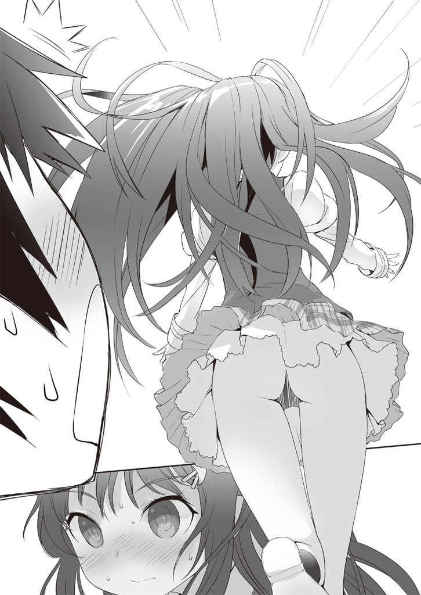
まずい部分が見える前に慌てて目を逸らすと──俺のすぐ背後で、にんまりと笑う火威美紅が視界に入った。
「な......!?」
俺は背中を突き飛ばされ、机に激突して床に倒れ込んだ。
「陽ちゃん！」
「やっぱり面白いなぁ、この思念力。あれだけむぎゅ～ってされてると、日渡くんは光里ちゃんの『身につけているもの』って見なされるみたい」
「く......」
天むすの思念力は確か、『自分自身と、周囲の人物の身につけているものを自在に瞬間移動させる』というものだった。光里が俺（の首）を思い切り抱き締めていたせいで、俺自身がその能力の対象にされたってことか。そして俺の頭にしがみついていたコンもそこに巻き込まれたらしい。
「いってーな、お前がバカやってっからオレまで巻き込まれたじゃねえか！」
「う、うるせえ！ ちょっと油断してただけだ！」
俺は痛みを堪えて立ち上がると、光里のスパッツと猫柄パンツを腕から分離させ、ちょっと見つめて、邪魔にならないようにポケットにしまい（誤解です決していやらしい気持ちはありませんでした）、机と椅子の金属部分を腕と再融合させて前腕一体型棍棒を作り出した。
「わ、凄い」
火威美紅が感心したように手を叩く。
「身につけてるものじゃなくて体の一部、これならその思念力でも転移させられねえんだろ！」
一気に距離を詰め、棍棒を振り上げる。といっても、流石に女性をこんなもんで殴りつけるつもりはない。棍棒が触れた瞬間に火威美紅の体と混ぜ合わせることで拘束しようと思っていた。
しかし、火威美紅は振り下ろされた棍棒をすり抜けるように軽々とかわし、すれ違いざまに棍棒化していない方の俺の手首を取って──そして。
俺は教室の一番端っこ、担任教師用の机の上に頭から落っこちていた。捕まった瞬間に天むすの思念力を発動されて吹っ飛ばされたのだ。そして畳み掛けるように教室のありとあらゆる上から備品が降って来る。
「どわあああ！」
俺はたまらず先生の机の下に避難した。
「あれ～？ どうしたの日渡くん、もうギブアップ？」
「くそ......」
流石に戦い慣れている。まともにやったら俺のような素人が敵うはずがない。どうしたものかと燻っていると、コンが呆れたように俺の頭を小突いた。
「お前もっと頭を使って戦えよ。オレの力を全然使いこなせてねーじゃねーか」
「しょうがねえだろ、あんまし使ったことねえんだからよ！」
まともに戦いに使ったのなんてこれが二回目だ。
「先駆者に訊く！ コン、お前だったらどうするこの状況！」
「あん？ にしし、そんなの簡単じゃねーか。要はあの女の不意を突けばいいんだろ」
「だからどうやったら不意を突けんだよ」
「陽太、お前まだオレの思念力のこと良くわかってないみたいだな。オレの力は、混ぜ合わせるだけじゃなくて、混ぜ合わせたものを綺麗に分離させられるところが凄いんだぞ」
「分離......──そうかっ！」
閃いた俺は、思い切って床に手をついた。体が床に沈んでいく。『物体同士を混ぜ合わせる』力で、俺の体を教室の床に混ぜ合わせたのだ（確かコンはこうやって思念力を応用し、他の物体の中に自分の体を潜り込ませていた）。そして──コンの力は、混ぜ合わせることだけでなく、この力で混ぜ合わせたものを自由に分離させることもできる。俺は床の中を泳ぐように移動し、そして火威美紅の背後で分離して飛び出した！
「後ろ取ったぁ！」
「え？ きゃ──！」
完全に不意を突いた。まさか足の下を通って来るとは思うまい。火威美紅に一瞬の隙が生まれ、そこに棍棒が振り下ろされる。
「もらった！」
はずだった。
突然体が金縛りにあったように動かなくなったりしなければ。
「え......!?」
振り向いた火威美紅と目が合った瞬間、俺はまるで自分以外の意志に体を乗っ取られたように全く動けなくなってしまい、棍棒を振り上げた格好のままばたりと地面に倒れてしまった。
「な、何だよコレ......！」
「陽太？ おいどうした！ こら！」
全身が強張って動かせない。コンが頭をぽかぽか叩いてくるけどどうしようもない。
これも天むすの思念力なのか？ いやしかし、どうも力の性質がさっきまでとは全然異なっているような......。
「あーびっくりした。面白い使い方ができるんだね、その力も」
火威美紅はしゃがんで俺の顔を覗き込む。
「でも、惜しかったね。私は別に、天むすの思念力しか使えないわけじゃないんだよ」
「！」
そうだ。この人には、天むすの思念力を得る前から持っていた、自分自身の思念力があったはずだ。確かその力を使って天むすを操っていると──。
「これはあんたが元々持ってた思念力か......！」
「せいか～い♪」
コンがフシャーッと体毛を逆立てて（といってもパッチワークなので精々縺れた糸の切れ端が逆立ったくらいだ）火威美紅を威嚇したが、力を使えないコンは所詮喋って動くぬいぐるみ、首を掴まれていとも簡単に持ち上げられてしまった。
「ちくしょー！ 離せー！」
「コンちゃん！ 陽ちゃん！」
火威美紅が光里を見て悪戯っぽく笑うと、彼女の手に光里の猫柄パンツが出現した。
「んふふ。これは戦利品として貰っていきまーす」
「て、てめえ！ 返せよ！」
「返せって、元々君のじゃないでしょ？ そんなに光里ちゃんのパンツが欲しいの？ 日渡くんのえっち～」
「光里に返せって意味だ！」
「もーしょうがないな。わかった、今返すね」
火威美紅は舌を出し、コンを光里の腕の中に転移させた。
「そっちじゃねえ！」
「あははっ。やっぱり天むすの思念力は便利だなぁ。身につけているものを自由に瞬間移動させられるなんて、もう可愛い女の子を剥くためにあるとしか思えない力だよねっ♪」
「天むす？」
光里が驚いたように目を見開く。
「天むすって、もしかして......天ちゃんのこと？ ハムスターの？」
「そうだよ。このクラスで飼われていたハムスターが思念塊になったんだけど。あれ、言ってなかったっけ？」
火威美紅はおもむろに胸の谷間に手を突っ込むと、谷底（この表現でいいのかどうかはわからない）から一匹のハムスターを取り出して掌に乗せた。
あの独特の模様は、間違いない、天むすだ。天むすは目を瞑って体を丸め、眠ったように動かない。
「天ちゃん！」
光里は天むすの姿を確認するが早いか、素早く火威美紅に詰め寄って天むすを奪い返そうとした。だが火威美紅がさっと手を引っ込めてそれを許さない。
「その子を返して！ 天ちゃんはうちのクラスのペットなんだから！」
「ん～、それは出来ないの。光里ちゃんみたいな可愛い子のお願いは聞いてあげたいんだけど、ごめんね」
火威美紅が瞬間移動で逃げる。光里は唇を噛み、凄い剣幕で火威美紅の移動地点まで駆け寄った。
「返して！」
「わ、ちょっと光里ちゃん、そんな激しく動いたらスカートめくれちゃうよ？ いいの？ 君は今パンツもスパッツも穿いてないんだよ？」
「そんなの知らない！」
「日渡くんが倒れて動けないフリをして、ローアングルから君のスカートの中身を虎視眈々と狙ってるよ？」
「人聞きの悪いこと言うなぁ！」
本当に動けねーんだよあんたのせいで！
光里は天むすへの愛で羞恥心を忘れてしまっている。自分の状態を考慮せずに火威美紅を追いかけて走り回るもんだから、必然的にローアングルにならざるを得ない俺としては気が気ではない。スカートの揺れ方が危なっかしくて仕方がない。
「光里、頼むからあんまり動か──」
「そこまでだ、宇月さん」
一人の男が、光里の腕を掴んで彼女の動きを止めた。
女子軍団の制裁を受けて亡き者となったはずの、影時だった。
「か、影時！」
「真上くん......」
影時の体は満身創痍だったが、その瞳に宿る光は全く鈍っていない。むしろ活き活きと、晴れ渡った青空のような顔をしていた。
影時はゆるゆると首を振り、
「宇月さん、レディがそんな格好で走りまわってはいけない」
おもむろに自分のズボンを脱いで光里に手渡した。
「これを穿きなさい」
「穿くかああああああ!!」
影時のボクサーパンツ姿を見て石化した光里の代わりに、俺が絶叫した。
「ここから先は俺に任せてくれ」
ショックで蝋人形のようになってしまった光里に優しく囁き、影時は鋭い眼光をもって火威美紅を睨みつける。
「いくら美紅様のなさることとはいえ、これ以上この学校の女の子達を辱めることはこの俺が許しません！」
「わお、格好は最悪だけど台詞はカッコイイね。でも、まさかその体で私を止めるつもり？ それも、君をそんな体にした女の子達のパンツを守るためにさ」
「フッ......その通り」
強がって笑う影時に、火威美紅は首を傾げた。
「わからないなぁ。君は女の子のパンツが見たくないの？ パンツを取られてスカートの中身を必死で隠そうとする女の子の羞恥の表情が見たくないの？」
「見たいに決まっているだろうがぁッ!!」
「全力で肯定してんじゃねえよ！」
「見たいさ！ 凄く見たいさ！ 死ぬほど見たいさ！ もうホント夢に出るくらい見たいさぁ！ だが......だがっ！ 自分が見たいからと言って、そんな手前勝手な理由で彼女達の心を傷つけていいはずがないッ！」
火威美紅は目を丸くして、ぱちぱちと手を打った。
「欲望に忠実な子なのかと思ってたけど、意外に紳士なんだね。でもね、いくら男気を見せたところで、何の力も持っていない一般人に過ぎない君に私を止めるなんて──......うぐっ」
突然火威美紅の様子が変わった。いきなり頭を押さえて苦しそうにうめき声を上げ始めたのだ。
「なんだ？」
火威美紅の手の上で、それまで眠ったように動かなかった天むすがぴくりと動いた。天むすの体は淡い青色の光を発し、光は一筋の糸のように縒り合わさって影時に向かって伸びていく。
「これはまさか......思念糸か？」
光の糸に影時の指先が触れた瞬間、糸が影時の指に巻き付いて体を駆け上り、影時の体全体を青い光が包み込んだ。だがそれはほんの一瞬のことで、瞬き一つを終えた時にはもう、全てが夢だったように光は消えていた。天むすも眠ったままだ。
だが、火威美紅の焦り方が、今の出来事が夢ではなかったことを証明していた。
「天むすの意識が......私の支配を逃れようとしてるの？」
火威美紅はそういうこと、と呟いて影時を見つめると、口元に笑みを浮かべ、窓ガラスを割って校庭に飛び出した。
「ここはもういいかな。次は──そうね、この街に住む全ての女の子のパンツを貰っちゃおうかな」
「な、何......!?」
「止めて見せてよ、カッコイイ変態くん。それじゃあね」
火威し美紅は、人差し指を唇にあて、ウインクをして、そして──次の瞬間には、跡形もなく姿を消していた。
天川に降り注いでいた、大量のパンツと共に。
「彼女を追うぞ陽太、天川！ このままでは、街中の女性のパンツが危ない！」
そう言って足を踏み出した途端、影時はふらついて壁にもたれかかった。いくら台詞が力強くとも、今のこいつは気力だけで立っているような状態なのだ。
「だ、大丈夫か？ 無茶するな、お前その体じゃ......」
「ふっ、このくらいの傷、俺にはむしろ気持ち良いくらいさ......！」
「いやカッコよくドＭ発言されても！」
「さあ、もたもたしている暇はない！ 行くぞ！」
「お、お前どうしてそこまで......」
火威美紅も不思議がっていたが、こいつほどの変態ならばむしろ今の状況を喜ぶはずだ。火威美紅を止めるよりも、協力する方がこいつにとって利が大きそうだが......。
「確かに、俺は女性の下着に対して興味津津だ。だがな、彼女達の顔を見ろ、陽太」
壁に体重を預けたまま、影時は顎で廊下を示した。
廊下には、火威美紅によってパンツを剥ぎ取られたたくさんの女子達がへたり込んでいた。天川ファンクラブ軍団の女子達も残らずパンツを奪われてしまったようだ。皆それぞれ、羞恥や怒りや恐怖や混乱の表情を浮かべている。涙を流している者も多く、辺りには女子のすすり泣きの声が低く響いていた。
恐らく火威美紅が全部持っていってしまったのだろう、先程まで廊下に散乱していたパンツは一枚も残らず消えており、パンツの中に生き埋め状態になっていた天川も生還していた。ただし天川の精神的ダメージはかなり大きいらしく、たった数十分で大分老け込んでしまっていた。天川は不景気を嘆くサラリーマンのように指で眉間を押さえてうなだれている。
「俺は、女の子達を泣かせてまで変態行為に走ろうとは思わん。そこまでしてパンツを手に入れたところで、本当にそのパンツの見た目や、匂いや、感触や、味を、心から楽しむことができるのか？」
「オイ今とんでもないこと言ったぞお前。味って何なの？ 食べるの？ パンツを料理か何かだと思ってるの？」
「答えはＮＯ、だ。力ずくで奪い取ったパンツに、一体どれ程の価値が有ると言うのか」
と──影時は強い口調で言い切った。
「陽太、確かに今の俺は変態だが、しかし俺だって何も生まれた瞬間から既に変態だったわけではないのだぞ？」
「ま、まあそりゃそうだろうなぁ......」
現在がどれ程の変態であろうと、赤ちゃんのころから変態なわけがない。こいつにもきっと、汚れなき無垢な子ども時代があったのだろう。
「俺がこのような変態に育ってしまった原因は、何と言ってもあの幼少期の衝撃的な体験のせいだろう」
「一体お前の過去に何があったんだ......？」
「──あれは今から十五年と五ヶ月前。俺がまだ生後七ヶ月だったころの話だ。確か珍しく雪が降っていて、凍えるような寒さの日だったな。その日も俺は、母乳を飲むという口実のもとで母親のおっぱいにむしゃぶりついていた」
「待て待て待て待て待て待てぇぇえぇええ！」
さすがにこれはスルー出来ない！
「突っ込みどころ満載過ぎるわァ!! まずお前は生後七ヶ月の出来事を覚えてるのか!? そして『母乳を飲むという口実のもと』って何だよ!? それが本来の目的だろ！」
「いや、本当の目的は母のおっぱいにむしゃぶりつくことだった」
「おめーは生後七ヶ月で既にそんな変態的な思考を持っていたのかぁあ!? 自分の母親のおっぱいに欲情する赤ん坊とか嫌すぎるだろうが！」
「仕方ないだろう、俺の母さんは美人でしかも巨乳なんだ」
「そういう問題じゃねえ！」
確かにこいつの母さんは若くて美人で巨乳だけども！
「む......いかん。こんなことを話している場合ではなかったな。急がねば......！」
「お、おい！ 話はまだ終わって──」
「真上くん」
光里がふらふらしながら教室から出て来て影時を呼び止めた。
「とりあえずズボンを穿いて」
目を顔ごと、いや体ごと全力で逸らして、光里は可能な限り遠くから、影時が脱いだズボンを返却しようとしている。影時は閃いた顔になってわざとらしく片膝を突き、
「力が入らない......宇月さん、申し訳ないが君の手で穿かせてもらうぐえええ！」
「やめろ光里、ズボンで影時の首を絞めるのは！ 悦ぶから！ そいつ女子にだったら何されても悦ぶから！」
「......はぁ」
光里は諦めたようにズボンを影時の体に巻き付けた。
「光里......大丈夫だったか？」
「うん。とりあえずそまりちゃんのパンツを拝借して急場は凌いだよ」
「なんてことしてんだお前!?」
「......冗談だよ」
光里は僅かに頬を染めて俯いた。スカートの裾をしっかり押さえ、もじもじと視線を泳がせて落ち着かない。やっぱりこいつの下半身は今......。
「陽ちゃん、これから天ちゃんを助けに行くんでしょ？ 私も一緒に行くよ」
「いや、流石にそれはやめてくれ。そんな状態でお前に屋外を歩き回って欲しくない」
デンジャラスすぎる。防御力１の装備で魔王の城に挑むようなものだ。
「え？ でも、だって陽ちゃん......」
光里は不思議そうに首を傾げたが、すぐにはっと納得した顔で「そっか、そういうことなら仕方ないな」と呟いた。なぜか悪戯っぽい笑みを浮かべている。
「ど、どうした光里」
「......ううん、何でもない。陽ちゃん、天ちゃんのことお願いね」
「？ ああ、勿論」
「私のパンツは真上くんの手に渡りさえしなければどうなってもいいから、天ちゃんだけは助けてあげて」
「わ、わかった......」
「それから、コンちゃん。陽ちゃんと協力して天ちゃんを助けてあげてね。私は天ちゃんもきっとあなたと同じようにいい子だって信じてる。きっと仲良くなれるよ」
「ふん。まあ、暇つぶしには丁度いいかもな」
コンは俺の頭の上で照れくさそうに体を揺すった。
４．
火威美紅はすぐに見つかった。
心当たりがあると言って天川が向かった先は火威美紅自身が通っているという私立女子高校だった。「火威先輩にとってなじみ深い上に女子高生の下着が容易に大量入手できる場所だから」という冗談のような推理はしかし見事に的中し、火威美紅はその高校にいた。
グラウンドの中央にパンツの山を築いて誇らしげにそれを眺めていた。
「見つけたぞ変態女！」
「あっ、みんなー。ほらほら見て見て、こんなに集まったんだよ！」
「あんたまさか、自分の学校の生徒まで毒牙に掛けたのか？」
「人聞きが悪いなぁ、ただパンツを盗んだだけだって」
「どっちにしろ人聞き悪いわ！」
「......先輩、いい加減にして貰えませんか」
天川が心底からの疲れと苛立ちが滲んだ声で言った。
「もう十分でしょう。僕への仕返しも、女性下着の蒐集も、これだけ好き勝手やれば気も晴れたはずです。これ以上は悪ふざけの域を超えていますよ」
しかし火威美紅は口を尖らせて、
「えーっやだやだ、まだ集め足りないよ。パンツで埋め尽くしたプールを泳ぐのが私の夢なんだから」
「成金かあんたは！」
実際既に風呂釜二、三杯分くらいのパンツはもう集まっているので、あながち冗談ではないのかも知れない。この人ならそれくらいのことを本気で考えていてもおかしくない。
「んふふ、いくら私のやっていることが許せなくっても、星也くん、私の手に天むすの力がある限りあなたに私を止めることは出来ないよ？」
「確かに『僕には』ね。しかし、彼ならばどうでしょう？」
天川が目配せすると、控えていた影時が声を張った。
「美紅様！ 同じく女子のパンツを愛する者としてあなたにお話があります！」
火威美紅が品定めするような目つきで影時を見た。互いの視線が交差する。
刹那の攻防。口火を切ったのは火威美紅だった。
「パンツと掛けて何と解く？」
「人の夢と解きます」
「その心は？」
「はかないものだ」
「穿けーっ！」
いやうまいけど！ うまいけどツッコミの衝動を押さえ切れなかった！
影時は勝ち誇ったようにぐっと拳を握りしめ、火威美紅は「お見事」と頷いて拍手を送っている。
「確かに君とだったら有意義な議論が出来そうね」
「ありがとうございます」
......何やらこの二人、常人には理解できない文法で通じ合ったらしい。では早速、と影時は真面目な顔で咳払いをした。
「本題に入らせていただきます。美紅様、変態とは一体何なのでしょうか」
いきなり何言ってんだこいつ。
「私や君みたいな人のことじゃない？」
火威美紅はさらりと返す。自分が変態だって自覚あったんだ、この人。
「普通じゃない人間のこと」
「『普通じゃない』──そう、俺達は普通ではない、普通の人と比べてどこかがおかしい人間なのです。ならば、変態である俺達がこの世界で生きていこうと思ったら、俺達の『おかしさ』に普通の人々を巻き込んでしまうことに対する責任を負わなければならないのではないでしょうか」
「......何が言いたいの？」
「性欲。それは人間にとって──いや、有性生殖を行う全ての生物にとって、最も根源的で最も重要な欲求の一つです。雄と雌という二つの性別が存在する限り、生殖のパートナーとして異性を選ばなければならないのですから」
「だから何無駄に壮大な話にしてんだお前は」
「そこで我々に課せられる問題は、自分にとって最適な生殖パートナーをいかにして選別するか、ということです。或る動物は角の大きさを、また或る鳥は羽の美しさを基準にしてパートナーを選んでいます。では我々人間はどうでしょうか？」
影時は不意に視線を俺に向けた。そして真剣な表情で、
「陽太。お前はどうして宇月さんに惚れている？」
「!!?」
あまりにも唐突かつ直球なキラーパス。俺は思いっ切り吹き出した。
「い......いやいやいやいや待てよ！ 惚れてねえ！ 別に惚れてねえから！」
「そうか、では質問を変えよう。お前は宇月さんのどんなところを魅力的だと感じている？」
「み、魅力って......」
頭が沸騰しそうになって言葉が全く出てこない。しかし頭蓋骨から噴き溢れそうになっている脳みそが勝手に質問に対する答えを組み立て始めていた。
──あいつはああ見えて子ども好きで面倒見がいいし料理もうまいし確かに変人で何考えてるのかわからないところがあるけどでもそこもまた可愛いというか危なっかしいからこそ守ってやりたくなるというか見た目もすげー可愛いしなんかいっつもいい匂いがするしあいつが喜んでるの見るとなんでか俺も幸せな気分になるしああもう全然纏まんねえ！
「......」
俺が赤面したまま黙って俯いていると、影時は「なるほど」と優しく頷いた。
「つまりお前は、『彼女には母性愛の強さや家庭的な面など数々の長所があって、個性的な性格も魅力的である。そんな風に彼女を理解できる自分が彼女を傍で支えてあげたいと思っている』と言いたかったのだな」
「オメーは俺の脳みそに盗聴器でも仕込んでんのかァァアァ!!?」
完全完璧に思考を読みやがった！ しかも何か勝手にうまいこと纏めてくれてる!?
「まあ最終的には『とにかく光里可愛いよ光里クンカクンカ光里たんハアハア』と言いたかったのだな」
「それは違うわ！ やめて！ 誤解されるからやめて！」
「このように」
と、影時は恥ずかしさのあまり蒸発しそうになっている俺を無視して、何事もなかったかのように火威美紅に向き直る。
「我々人間は、適切な生殖パートナーを選ぶために、様々な要因、様々な視点から異性を評価します。その過程は他の生物の追随を許さず、圧倒的に複雑で煩雑なものです。どんな顔でどんな身体をしているのか、どんな人間性や能力を持っているのか、或いは経済力や社会的地位は確かかなどと言ったことまでこと細かな選別要因を用意し、個人個人の価値観から総合的に評価・判断して自分にとって最適なパートナーを見つけ出そうとする」
火威美紅は驚いたように目を丸くしている。
「随分と難しい話をするんだね」
影時はそこで、「しかし」と少し寂しそうな声色を混ぜた。
「我々『変態』と呼ばれるカテゴリーに属する者達は、パートナー選別の過程のどこかが、大多数の人々と比較して異常なのです。本来それほど重視するべきではない女性の下着そのものに異様な興味を示したり、俺のようにパートナー選別において非常に重要な恋愛感情というものが今一つ理解できなかったり。『よりよい生殖パートナーを選んで生殖を行う』という、我々に性欲が存在する本来の目的を、どこでどう間違ったのか外れてしまい、欲求が社会的に異端とされている方向に一人歩きを始めてしまった......それが我々変態と呼ばれる者達なのです」
こ、こいつ......実はこんなこと考えてたのかよ。
今まで、影時は何も考えずに嬉々として変態行為に走っていたのかと思っていたけど、そういうわけじゃなかったんだ。っていうか、むしろ影時は自分が変態であることにコンプレックスすら抱いているような口ぶりだけど......。
「このようなイレギュラーが生まれることは、生物というカテゴリーで見れば何らおかしなことではありません。突然変異がなければ生物の進化は進まないのですから。しかし人間という、社会的存在としてのカテゴリーから見れば、それは異端だ。我々変態は社会にとって異端者なのです。それでも社会に属する我々が、自分の変態的な欲求を満たすために他者に迷惑を掛けることなどあってはならない。変態が社会に存在する為には謙虚でなければならないっ！」
影時の言葉に熱が籠る。気付けば影時は足を一歩踏み出していた。
「社会的存在としてあるべき道を外れている我々は、自分が異端であるということを自覚して生きていかなければならない！ その上で絶対に他人に迷惑を掛けないよう己の変態欲求と向き合っていくしかないのです！」
語気を強め、訴えるように影時は言う。
「無理矢理女性のパンツを奪うなど言語道断！ パンツが見たければ、一言『すみません、パンツを見せて頂いてもよろしいですか』と断りを入れ、了承を頂いた後にありがたく拝見させて頂く！ もしも突風などでラッキースケベに遭遇してしまった場合には速やかにその事実を告白し謝罪し、しかる後相応のご褒美を受けるのが筋というもの！」
「そういう問題じゃねえだろ!?」
違った！ こいつはコンプレックスを抱いてるどころかもう開き直ってるんだ！
「変態とはっ......！」
拳を握りしめ、気合と迫力に満ちた瞳で火威美紅を見つめ、影時は空を裂くほどの大声で叫んだ。
「変態とは！ 常に己が立場をわきまえた紳士・淑女でなければならないのです!!」
「......」
ぶっちゃけ俺には影時が何を言っているのかよくわからなかった（天川もだろう。ヤキソバパンと間違えてコロッケパンを買って来たパシリを睨む不良のような顔をしていたから）が、変態同士思うところがあるのか、火威美紅の表情はこれまでに見たこともないような神妙なものに変化していた。
というか泣いていた。大きな目からぽろぽろと大粒の涙が零れていた。
「......感動したわ」
しばらくの沈黙の後、火威美紅はそう口にした。
「君って本当に紳士なんだね。そんな風に、自分の欲求を押し殺してまで他人を思いやることが出来るなんて素敵」
「ありがとうございます」
「でも」
火威美紅は涙を拭いた。ハンカチの下で、泣き顔はみるみる内に小悪魔的な笑みに変化を遂げた。あまりにも早い表情の切り替わり──だがそれを見ても俺は、不思議とさっきの涙が嘘だったのではと疑う気にはなれなかった。多分この人は、嘘つきとか演技派とか、そういう類のスキルに長けているわけじゃない。驚くほど目まぐるしく、まるで一つ一つぶつ切りになっているみたいに感情が切り替って、それがもろに顔に表れているだけなんだ。
「私には真似できないなぁ。せっかくこんな力を手に入れたんだもん、少しくらい自分のために楽しんだっていいと思わない？」
「では、思い留まってはいただけないと？」
「ごめんね」
影時は俯いて、「残念です」と呟いた。
「わかっていただけないとは。......手荒な真似はしたくありませんでしたが──」
そして──次の瞬間。
ばっ、と火威美紅に向けて両腕を突き出して朗々と叫んだ。
「話が通じないならば、強制的に！ あなたの力を奪い取るまで！」
「!? なっ......！」
同時に、火威美紅が苦しげな呻き声をあげる。さっき和田川高校から逃げ出した時と同じ──これは、火威美紅の支配に対する天むすの抵抗だと、天川が言っていた。
火威美紅が去った後、影時はすぐ天川に天むすの夢のことを話した。天川によると、やはりそれは天むすからのメッセージだったのだそうだ。
「真上君、君は天むすにとっての適合者なんだ」
天川はそう断定した。
「さっきの不思議な現象──天むすの体から君に思念糸が伸びたあの現象が、それを証明している。あの時、君はいくらかの思念糸を天むすから分与された」
「それじゃあ、今なら影時もある程度天むすの思念力を使えるってことか？」
「ああ。このことは非常に幸運だ。火威先輩は彼女自身の『自分の人格を分割して他者に植え付ける』という思念力で天むすを操っているけど、恐らくその強制力はそんなに強くない。だから、適合者である真上君が全力で天むすに語りかけて思念契約を結ぼうとすれば、彼女の支配から天むすを解放出来るかもしれない」
つまり、影時が天むすと思念契約を結べば天むすを取り返すことが出来るはず、ということだ。
そして影時は一瞬も躊躇わずにそれを了承した。自分が契約主となって天むすを救い、火威美紅を止めてみせると。
「天むすよ！ 聞こえるか、俺の声が！ 俺は今、お前の力を使おうとしているぞ！ 美紅様が『身につけているもの』であるお前の本体を、俺の手の中に転移させる！ だからお前も、同じ目的のために思念力を使うのだ！ そうすることで俺とお前は思念契約を結ぶことが出来る！」
「あああっ......！ やめなさい......！」
火威美紅は頭を抱えて呻く。彼女の胸の谷間から眩い光を放つ小さな物体が浮き上がった。
「来いっ！」
影時が叫び、何かを掴み取るように突き出していた両手を合わせると、小さな物体は一際大きな光を発し、バシュン！ という破裂音を残して消え失せてしまった。
「そんな......私の思念力が、負けた......？」
火威美紅が愕然と呟いた。そして──影時がゆっくりと手を開く。
そこには、小さなハムスターがちょこんと座っていた。白・黒・茶の三色の体毛が、海苔でご飯を巻いてそこから海老天がはみ出ているような特徴的な模様を描いている。
「天むす......！ 無事だったか！」
天むすは二本足で立ち上がり、まるで人間がお辞儀をするようにぺこりと頭を下げた。
「ありがとう影時君。君のお陰で私は解放された」
天むすはハムスターの見た目からは想像もつかない、男前のベテラン俳優のように渋い声でそう言った。
「君の女性を思いやる熱い気持ち、確かに私に届いていたよ。君の突き抜ける青き突風のような男気が、私を火威美紅による支配から解き放ってくれたのだ。本当にありがとう」
「天むすよ。お前が夢で俺に伝えようとしてくれていたのは、このことだったのだな？ 街中の女性のパンツが搾取される危機──」
「そうだ、影時君。君がいなかったら私はとてつもない大罪に手を染めさせられているところだった......いや、もう既に遅かったのかも知れない。私のせいで罪もない多くの女性が傷つけられてしまった」
「お前のせいじゃないさ。それにまだ間に合うはずだ。俺達が協力すれば、きっと天使達の笑顔を取り返すことができる。そのために、天むす、俺にお前の力を貸してくれ！」
「......ああ、勿論だ影時君！」
天むすは素早く影時の腕を駆け昇り、肩の上に飛び乗った。
「思念契約によって君が手に入れた私の力、正義のために十二分に発揮してくれ！」
「おおっ！」
「......」
天むすってこんなキャラだったのか......。
なんつーか、今まではずっと普通のハムスターだった天むすが、いきなり自分のことを「私」とか言って話してるのは凄い違和感だ。ついこないだまで回し車で遊んでひまわりの種で頬袋をいっぱいにしてティッシュで巣を作ってたのに。そんなギャップを無視して一瞬で天むすと意気投合している影時も凄い。
「びっくりね、まさかあなたが天むすの契約主になるなんて。だけど」
天むすを取られた火威美紅は、しかしそれでもまだ諦めていないようで、眼光鋭く影時を睨みつけた。
「所詮は付け焼刃の思念力でしょう。隙を突いて、もう一度私の思念力で天むすを──」
「いいえ、美紅様。天はもう二度とあなたの手には戻りません。なぜならば、俺達は正義の絆で結ばれているからです！」
ばっと両手を広げ、影時は叫んだ。
「さあ、まずはこいつだ！ いでよ、泡沫渦巻く浄化の匣！」
瞬間。ドドドドン、と十台近い洗濯機が出現し、影時を放射状に取り囲んだ。
「洗濯機!? こんなもんどっから持って来たんだよ！」
「この辺りの民家から拝借した」
「何やってんだお前はァ！ ちゃんと返せよ!? 持ち主の人ら今日洗濯できなくなっちゃうじゃねえかよ！」
一見まるで意味のわからない影時の行動だが、火威美紅には確実に動揺を与えている。
「こ、これを全部瞬間移動させたの!? 有り得ない、天むすの思念力は人が身につけているものしか動かせないはずなのに......！ 思念契約を結ぶことでこんなに思念力がパワーアップするなんて！」
「さぁてお次はぁ！」
ぐるん、と影時は突然俺の方を振り返った。異様な迫力に、俺もコンもびくりとした。
「な、なんだよ──」
「陽太！」
「うわぁっ！」
影時は俺の肩を掴み、これでもかというほど顔を近づけてくる。
「うわああああ！ や、やめろ！ デジャヴが！ トラウマがぁ！」
「今！ 俺の脳内に存在する思念を──」
ゴン！ と影時は俺の額に自分の額をぶつけた。
「お前の脳内に！ 転移させるっ！」
「なっ......！」
その瞬間。俺の頭の中に、膨大な量の、自分のものではない意識がなだれ込んで来た。
「......！」
それは──何かを作るための情報だった。何がと訊かれても答えようがない、俺にもわからないのだ。わかるのは、『それ』の材料が洗濯機であるということと、どうすれば『それ』を作ることが出来るのかということ。
とにかく不思議な感覚だった。俺の頭で、幾つもの洗濯機がまるで作る前のプラモデルみたいに細かな部品に分解され、そしてそれらが再び組み上げられていく光景が、奇妙な表現だが──現実離れしているほどにリアルな映像として展開されていく。設計図を脳細胞に直接インプットされている気分だ。そして『それ』が出来上がった時、俺の意識は現実に舞い戻った。
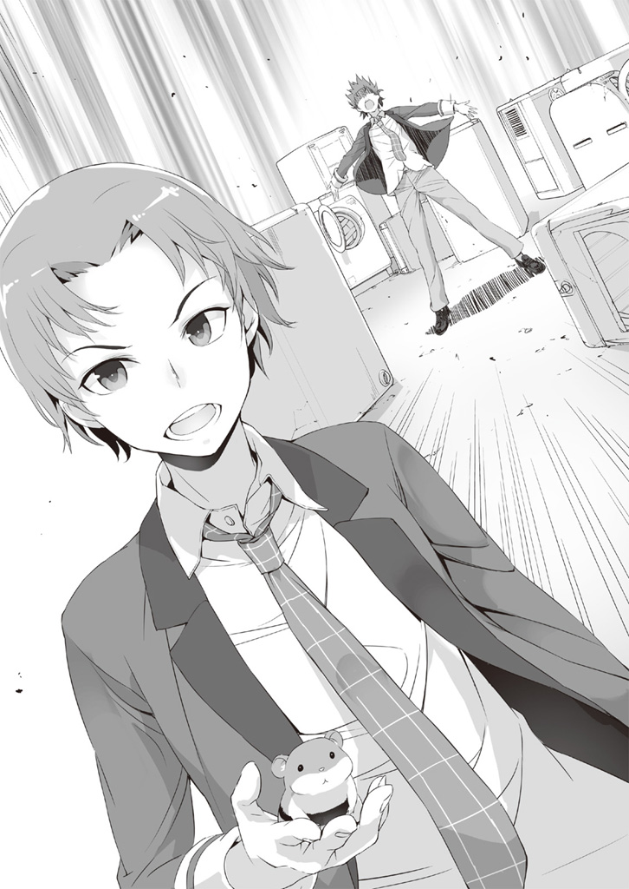
「い、今のは......」
「さあ陽太、わかっただろう？ 俺が伝えた設計図、それをお前の力で具現化してくれ！」
何が何だかわからなかった。だが──何だろう、この感覚は。ひたすら気分が高揚している。力を振るいたい。頭の中を疾走するこの未知の映像を形にしたい。
「よ......よぉっしゃー！ 行くぞコン！」
俺は嬉々として洗濯機に手を押し付けた。洗濯機は粘土のようにぐにゃりと変形し、他の洗濯機と混ざり合い、一つの形を作っていく。
出来上がったのは、純白の人型装甲。影時が気合の籠った叫びを発しながら、完成したそれに全身で飛び込んだ。──そして。
「変──身っ！」
ジャキジャキジャキーン！
影時が人型装甲を装着、着地する。螺旋を基調とした近未来的なデザインに、昆虫を思わせる仮面。両手の甲に装着された車のワイパーのような細剣、というかただのワイパー。そう、その姿はまさしく。
「仮面ワイパー洗王、参上！」
「な......何それ......？」
呆然とする一同に構わず、影時はポーズを決める。
一方脳内の設計図を形にした俺は、まるで完成作品に情熱をごっそり持っていかれてしまったように一気に頭が冷えて、とても冷静な気分になっていた。俺は何であんなもんを作ってしまったんだろうか。それもノリノリで。一瞬前の自分が凄い恥ずかしい。
「神聖なる浄化の力を以て悪しき者の罪を洗い流す......それが仮面ワイパーだ！」
洗王と化した影時が何だかよくわからないことを言いながら人差し指を曲げると、途端、火威美紅の周囲に浮かんでいた大量のパンツが瞬時に影時の眼前に瞬間移動する。
「さあ、洗王の力を見せてやろう！ フィニッシュアクト・１！ スプラッシュワイプ！」
影時の両腕のワイパーが激しく左右に運動を開始。影時はパンツの山に向けて腕を突き出して、車のハンドルを切るようにぐるんと腕を回転させる。するとワイパーの付け根から大量の水が放出され、パンツの山を包み込んだ。
「ぬおおおおおっ！」
なぜか水は零れることなくシャボン玉のような球状に収まり、その内側にパンツを閉じ込める。球の中ではパンツと大量の水がまるで大嵐の海のように荒れ狂い、異様な白い泡が濛々と立ち込めていた。無数のパンツが轟々とうねる荒波に飲まれ、揉まれ、躍り狂う。
「な、何してるの君......？」
影時の意図がわからない俺達を代表するように、火威美紅がうろたえた表情で尋ね、
「何をしているか、ですか？ 簡単なことです」
影時は洗王の仮面の下で笑った。
「借りたものは洗ってから返す！ それが世間の常識だ！」
「普通に洗濯してるだけかよ！」
......言われてみりゃ完全に洗濯だアレ。あの大量の泡はどう見ても洗剤だ。そうだよ、影時が着てるあの洗王の装甲、元は洗濯機だもの。
「洗ってから返すですって!? な、なんて律儀な子なの。この局面であんな常識的な行動が取れるなんて、大物にも程があるよ！」
そして火威美紅はおののいている。
「だ......だけど、一体どうする気？ それだけの量のパンツ、一体どれが誰の穿いていたものかなんて私にもわからないよ。いくら綺麗に洗ったって、返す相手がわからなければ意味がないんじゃないかしら......？」
確かにそうだ。今やこのパンツの中には、和田川高校の生徒だけではなく、火威美紅の通うこの女子校の生徒や、街中の女性からランダムに奪い取ったパンツが混在しているはずだ。それらを全ての持ち主を判別することなど不可能に等しい。仮に穿いていた本人を呼んできたとしても、見分けられるかどうか。
しかし影時は動じない。火威美紅の方を見向きもせず、堂々と、腕から強烈な温風を生み出して洗い終えたパンツを乾かしていた。
「美紅様、どうやらあなたは勘違いをされているようだ」
「え......？」
「あなたはまさか──この俺が、『この街の全ての女性が毎日どんなパンツを穿いているかを把握していない』とでも思っているのですか？」
影時が何を言っているのか、すぐにはわからなかった。というか、わかりたくなかった。
火威美紅の表情が固まる。やがて影時の言葉の意味を理解したらしく、顔から血の気が失せていく。
「──ま、まさか！ 有り得ない、そんなこと！ この街に一体何万人の女性が住んでいると思っているの!? その全ての女性達が毎日どんなパンツを穿いているか一人残らず把握しているなんて、そんな、そんな馬鹿なこと......！」
「できる」
影時はきっぱりと言い切った。
「女性のパンツの選び方には三十七通りの法則が存在します。俺の、法律の網の目を辛うじてくぐり抜ける自由調査によって弾きだされた法則を用いて演算処理を行い、加えてパンツの形状・表面積及び残された温もりや皺の寄り具合、加えて味とフェロモンパターンと遺伝情報そして本日の気象その他諸々の要素を一つ一つ解析し逆算していけば自ずとどのパンツが誰のものかなどということはたやすく判明するのですッ！」
「怖いよーっ！ この坊や怖いよ怖すぎるよーっ！」
「ヤバイ！ 俺の親友マジでヤバイ！」
悪い意味で！ 考え得る限り最悪の意味で！
「さあ──五万二千三百八十四人の女性市民の中、それぞれ主のもとへと還れ！ 神聖なるパンツ達よ！」
乾かし終えたパンツが、空中に螺旋状に並べ上げられる。あたかも渡り鳥の群れのようにグラウンドの上空を埋め尽くしたそれらは、影時がパチン！ と指を鳴らすと、衝撃波を残して一瞬にして全て消え去った。
後に残ったのは、雲ひとつさえ残らず消え失せた、突き抜けるような青い空。
そして俺の手の中に一枚のパンツが出現した。可愛らしい猫柄のパンツだ。
「これは......」
「それはお前の手で彼女に返してやれ」
影時は俺に背中を向けたまま親指を立てた。
「お前の大切な人の、大切なものだろう？」
「......」
何この変態超格好良い。
「そして陽太、茜ちゃんに伝えてやってくれ。中学二年生であのパンツは流石に大人の階段を急いで上りすぎているとな」
「茜のパンツあったの!?」
お前はどうして人の妹のパンツを把握してんだよ！ そして「伝えておいてくれ」って、そんなこと伝えたら俺が完全に変態だと思われるじゃねえか！
火威美紅は呆然として青一色の巨大な空を見つめていた。
「私の集めたパンツが......一瞬で......」
「降参して下さい」
影時が低い声でそう告げた。
「天むすとパンツを失ったあなたに、もう勝ち目はない。これ以上は時間の無駄です」
「パンツは関係ねえと思うけどな......」
火威美紅は唇を噛んで俯いた。
「そうね」
観念したようにそう呟いて、火威美紅は俺達の方に歩み寄ってくる。
「諦めたよ。もう私に天むすの力は使えない」
「わかっていただけましたか」
「うん。だけど──」
影時との距離が残り二歩というところまで縮まった時、火威美紅は突然にやりと笑って顔を上げ、影時の顔を睨みつけた。
「天むすの力がなくたって、私には自分自身の思念力が──！」
しまった、と思った瞬間、何かが俺達の背後から矢のように飛来して火威美紅の顔面に直撃し、火威美紅はきゃっと悲鳴を上げて尻餅をついた。
火威美紅の顔に千円札が張りついていた。まるでアイマスクのように彼女の目を覆い、視界を封じている。
「な、何コレ!? 何が起きたの、なんにも見えないよ～！」
うろたえる火威美紅。そして俺達の背後からは、待ってましたと言わんばかりに、地獄の底から漏れ出したような低くて深くて暗くて黒い笑い声が立ち上っていた。
「ふ──ふふふ」
天川が。
「ふふふふふふふふふふふふふ」
本物の悪魔もビビるんじゃないかと思うほど真っ黒な笑顔を浮かべて、嬉しそうにゆっくりと火威美紅へ近づいていく。
「お、おい天川、お前......」
「いやぁ──本当に最後まで油断も隙もありませんね、火威先輩。天むすを掌握するのが無理とわかるとターゲットを真上君に変更して、彼に分割した自分の人格を植えつけて操ろうとするなんて」
「せ、星也くん？ いや、あの、それは」
火威美紅が急に弱気になって、尻餅をついたまま後ずさる。
「でも残念でしたねえ。天むすの思念力を失ったあなたには、僕に対抗する手段がありませんから。これで今度こそ本当にチェックメイトですか」
「いきなり復活したなお前......」
「あ、あの、えっと、......ご、ごめんなさいっ！ 許して星也くん！ ほ、ほんの出来心だったの！ わ、悪気は......」
「悪気は？」
「......あったけど」
「さーてと」
バサァ！ と天川は両手に大量の万札を広げ、
「それじゃあこれから宇宙で一人反省会でもやってきてもらいましょうか。旅費は僕が持ちますんでとりあえず今すぐ大気圏を突破してください」
「いや──っ！ 助けて──っ！」
天川が若返った。凄く活き活きしている。やっぱりすごーく恨んでいたようだ。火威美紅がちょっと可哀相な気もするけど、でも完全に自業自得だしなぁ......。
しかし、じりじりと火威美紅を追い詰める天川の前に、仮面ワイパー洗王が両手を広げて立ちはだかった。
「何のつもりだい、真上君」
「やめるんだ天川。女性に手荒な真似をするのは良くない」
「......僕はこの人に十分手荒な真似をされたんだけど？」
「そこはご褒美だと思ってぐっと堪えるのが真の変態というものだ」
「勝手に人を変態にするな！ 僕はお前とは違うんだ！」
二人はしばらくにらみ合いを続けていたが、やがて天川が折れた。舌打ちをして、不服そうな様子を隠すこともせず渋々万札を懐に納め、火威美紅の顔から千円札を剥がす。
「まあ、いいさ。今回のことは協会に報告する。そうすれば彼女の罰は免れない。さあ行きますよ先輩」
「は、はい。......ありがとね、坊や」
火威美紅が潤んだ瞳で感謝を告げると、影時は右手を顔の前に構えて敬礼のようなポーズを取った。
「紳士として当然のことをしたまでですよ」
５．
「......ねー星也くん、いつまで怒ってるの？」
火威はやたらと早足で進む天川の前に小走りで回り込み、彼の仏頂面を覗き込んだ。
「永久に怒っています」
「いーじゃない、結果として目的は果たせたんだからさぁ」
「こんな滅茶苦茶な方法をとる必要はなかったでしょう！」
天川は鬱陶しそうに手を振って火威を追い払う。
「ええ～、だってさ、こうでもしないと──真上くんと天むすに思念契約を結ばせるのは、難しかったんじゃないかな。彼らが思念契約を結ばないと解決できない状況を作らなきゃいけなかったんだし」
「......」
沈黙を返した天川に、火威は人差し指を唇にあて、ウインクをして、くすり、と小さく微笑んだ。
「しっかり見張っててよ、あの子達のこと」
「偉そうな口をきかないでください」
「うわ、ひどい。私の方が先輩なのにー」
「上司は僕です。......ま、言われなくてもわかってますよ」
天川はそう言って、目を伏せ、溜息とともに口角を上げた。
「僕らがこの街を訪れたのはそのためなんですから」
６．
かくして、俺のそれまでの人生史上最高に意味不明で、最悪に変態的で、最低に破廉恥だったこのパンツ天国事件は、割とあっさりその幕を閉じた。
火威美紅は天川によって連行され、天むすは影時の手によって無事生還し光里と再会を果たした。光里も天むすの予想外にダンディなキャラには驚いていたようだが、可愛らしい見た目とのギャップにえらい萌えたらしく、コンの時と同じくらいデレデレになって可愛がっていた。
奪われたパンツは、影時によってちゃんと持ち主に返却されていた（どうやら本当に全員に正しいパンツを返却したらしい。むしろそれが恐ろしい）。しかしこんなことになってしまってうちの学校の生徒達になんて説明すりゃいいんだと俺は不安だったが、いつの間にか生徒達の記憶が修正されていて、俺と影時と光里以外誰一人としてパンツ天国事件のことを覚えていなかった。一番俺達の近くに居たそまりでさえ、コンが喋ったことすら忘れてしまっていたのだ。
後日の天川曰く、「当然、仕事中一般人に知られちゃまずいことを知られてしまうことは想定できるからね。協会にはそういう事態に備えての工作班のようなものがあって、後からうまいことごまかしてくれるんだよ」ということらしかった。恐るべし地下組織、思念紡績協会。
何はともあれ、これで一応めでたしめでたし。
......で、ここからは敢えて記す必要もないただのおまけのような話なんだけど。
「......ほら、これ」
事件解決後すぐ、俺は校舎裏に光里を呼び出し、周囲の視線を気にしながら大事にたたんだ猫柄パンツを光里に差し出した。
「取り返してきたから」
ちょっと見栄を張ってしまった。実際は影時が活躍しただけなのに。
きっと恥じらいの表情と共に受け取ってくれるだろう、と思っていたが、しかしその予想は外れ、光里は意外そうに俺の顔を見つめてきた。
「な、なんだよ」
「陽ちゃんはきっとパンツもこっそりくすねて自分が持って帰るつもりなんだろうって思ってたから、ちょっと意外で」
「俺そんな信用なかったの!?」
うわ......。流石にこれはショックだ。いつの間にそんな変態だと思われていたのだろう。そんな風に思われるような真似をしたことがあっただろうか。せいぜい胸を触ったりスパッツの中を見せろと迫ったりしたくらいしか覚えがないのに。
「だって陽ちゃん、私のパンツとスパッツこっそりポケットにしまってたじゃない」
......え？
「いや、ちょっと待て光里、俺がいつそんな真似を」
「さっき、火威さんと戦ってた時」
記憶を辿る。そうだ、確かにあの時、俺の手に融合した光里のパンツとスパッツを分離させて、戦いの邪魔になるからってポケットに入れて......。
「あ！」
そうだ！ パンツは火威美紅に奪われたけど、スパッツのことはそのまますっかり忘れて今もポケットの中に入れっぱなしだ！
「私がノーパンで何か穿くものが欲しかったのに返してくれなかったから、てっきり陽ちゃんはどさくさに紛れて私のスパッツをくすねるつもりだったんだとばっかり」
「ちが───う!!」
誤解だ！ 完全に誤解だ！
そうか、あの時──光里がついてくると言って俺がその下半身で外をうろつくのは勘弁して下さいと断った時、光里が妙な反応を見せたのは、そういうことだったのか！
光里は俺にスパッツを返してもらって、それを穿いて移動するつもりだったらしい。しかし俺は光里のスパッツを自分が持っていることをすっかり忘れていて、光里はそれを俺がとぼけているんだと曲解していたのだ。
「お前なぁ、気付いてたんなら言えよそれ！ 何であの時ニヤリとしただけで何も言ってくれなかったんだよ！」
「えっちだなぁ陽ちゃんはしょうがないなぁ思春期はって思って気を使ったんだよ」
「女子高生が幼なじみにそんな気を使うなァ！ つーかお前はそれでよかったのか!? 仮に俺がお前のスパッツとパンツをくすねようとしていたとしたらお前はそれを許容できんのかよ！」
「......できるよ」
と、しばらく溜めた後、光里は少し朱に染まった顔で肯定した。
「ただし陽ちゃんに限って」
「......」
......あれ。何この空気。ちょっと嬉しいと思ってしまった俺は変態なのだろうか。変態でなくとも背徳的なのは確かである。
「とっ、とにかく」
気まずさに耐え切れず、俺は光里のスパッツとパンツを纏めて光里に突き返した。
「これは返す！ くれぐれも言っておくけど、俺は別にわざとお前のスパッツとパンツをくすねようとしてたわけじゃねーからな！」
「......そう。わかった」
光里は僅かに声を低くして受け取った。視線が俺の足下に落ちて、長い睫毛が瞬きに合わせて微かに揺れた。
微妙な沈黙。やがて光里が「じゃあ、更衣室で着替えてくる」とその場を後にしようとした時、俺は反射的に引きとめてしまった。
「光里」
「なに？」
「いや、その......お、俺は影時とは違って、別に女子の下着に度を超えた興味があるわけじゃなくて、そんなんより、もっとこう、実用的なものが好きって言うか」
「えっちな本とかビデオとか？」
「実用ってそういう意味じゃねえ！ ちょっとエロスから離れて考えて！」
「じゃあ何が好きなの？」
「だ、だから......」
気恥ずかしくなって目を逸らす。顔が熱くなるのを感じながら俺は咳払いをした。
「例えば、手料理とか......」
「......そっか、わかった。じゃあ、明日クッキー焼いてきてあげる」
「え？ いいの？」
「うん」
光里は頷いて、それからとても嬉しそうに微笑んだ。
可愛すぎて死ぬかと思った。
「楽しみにしてて」
翌日。光里の持ってきてくれたクッキーは、全部パンツの形をしていたところに明白なな悪意を感じたけれど、それでもとてもおいしかった。
第三話 母性本能が強く子どもが好きな女性はきっと子どもを作る過程も好きでつまり性欲が強いのではないかと考えてちょっとドキドキしていたら大変なことになりました
１．
ゴールデンウィーク最終日の朝、午前九時。
俺は携帯の着信音で目が覚めた。画面には「宇月光里」と表示されていた。
「もしもし、光里？」
「陽ちゃん。ごめんね、朝早くに」
「いや、それはいいけどさ。なんかあったのか？」
「うん......あのね」
光里は言い辛そうに口籠もっている。
「あのね、ちょっと陽ちゃんに相談したいことがあるんだけど、でも......その、突拍子もないことだから、驚かせちゃうんじゃないかって思って。それどころか、信じてもらえないかもしれない」
「おいおい、何言ってんだよ」
全く。何を今更。光里の言うことを俺が信じないわけがないだろう。光里を信じることにかけて、俺は最早そういう機械であると言っていい。光里信頼マシーンだ。光里を信じるためだけに生まれてきたようなものだ。
「俺は信じるぜ。お前の言うことならな」
「本当？」
「俺達はもう二つも摩訶不思議な事件を体験してんじゃねえか。思念糸の存在を知っちまった今だったらどんな超常現象だって笑って受け入れられるぜ。安心して話してくれよ」
「ありがとう、陽ちゃん。でも......その、ひょっとしたら陽ちゃんに迷惑をかけちゃうかもしれないの。それでも聞いてくれる？」
「何言ってんだよ」
やれやれ全く、らしくないな。いつものマイペースはどこにいったんだよ。
「当たり前だ。遠慮せずに話してくれ」
電話の向こうで、光里が安堵の息をついた。
「本当にありがとね、陽ちゃん。じゃあ話すよ」
「おう、どんと来い。今度はどうした？ ぬいぐるみが巨大化して暴れ出したのか？」
コンと思念契約を結んでおいて良かったと俺は思った。この力はきっと役に立つ。光里を助けてやれる。さあ、どんな相談でもどんと来いだ。俺はお前のためだったらたとえ火の中水の中、どこへだろうと駆けつけてどんなことだってしてやるぜ。
「実は私、子どもができちゃったの」
俺は吐いた。そして死んだ。
２．
空は雲一つなく晴れ渡り、燦々と降り注いだ陽光が地面で照り返して俺の目を灼く。
眩しい。今の俺に、この世界は眩しすぎる。
「優ちゃん、アイスおいしい？」
「うん、すっごくおいしい！ ママありがとう！」
「どういたしまして。あ、ママのも食べてみる？ こっちはイチゴ味だって」
「ほんと？ 食べた～い。じゃあ優子のもあげるからママのちょうだい！」
「ふふ、いいよ。はい、あ～ん」
「あーん！ わぁ、こっちもおいしい！ はい、ママもあーん！」
光里に呼び出された場所は通称「西公園」という公園で（どこから見て西なのかは定かではない）、俺の家と光里の家のちょうど中間辺り、どちらの家からも徒歩三分というお手軽さから、俺達が小さいころによく両親に連れられて遊びに来た場所だった。俺の母さんによると、俺と光里が出会ったのもこの公園だったらしい。幼すぎてあんまり覚えていないけど。
そんな思い出深い公園のベンチで、とても微笑ましい二人の少女（＋一匹）のやりとりが繰り広げられていた。
一人は光里だ。上は白シャツに黒いパーカー、下はデニムショートパンツに黒のニーハイソックスという活動的な出で立ちである。髪型もいつものストレートからポニーテールに変わっていて、なんだか普段よりお姉さんっぽい雰囲気で、とにかく超可愛い。
もう一人は、七歳くらいの女の子だった。人懐こそうな笑みを浮かべた、小動物的な可愛さに溢れる子だ。青いワンピースにサンダルを履いた涼しげな格好をしている。
二人は丸くなったコンを間にはさみ、ベンチに並んでアイスキャンディーを食べていた。女の子はとても楽しそうに無邪気な笑顔を浮かべ、光里はそんな女の子の様子を見てデレッデレになっている。アイスより先に光里がとろけてしまいそうだ。
仲の良い姉妹の休日、といった感じだが、女の子の光里に対する呼称が「ママ」であるという点が少々おかしい。
「......何してんだ、お前」
とりあえず訊いてみた。頭がくらくらするのは暑さのせいではなく光里のせいである。先ほどの電話での発言が衝撃的すぎて俺は今凄く体調が悪い。また吐くかもしれない。
「あ、陽ちゃん」
光里が俺に気付いてにこやかに手を振り、女の子が俺の方を見て首を傾げた。
「ママ、この人って......」
「うん、紹介するね優ちゃん」
そう言って立ち上がり、光里は俺の隣に並んで、俺の腕に自分の腕を絡めた。
そして笑顔で。
「この人は日渡陽太さん。これからあなたのお父さんになる人よ」
「まさか高校一年生にしてそんな風に紹介されることになるとは思ってもみなかったぜぇえ───っ!!」
何でだよ。
何で高校生に連れ子がいてしかも高校生同士で再婚しようとしてるんだ。どんな昼ドラ──いや昼ドラってレベルでもねえよ。
勘弁してくれ、と思いながら女の子を見ると、女の子は目を輝かせながら俺を見つめ、次の瞬間、全身で俺に飛びついてきた。
「パパーっ！」
「ええええ───っ!?」
「やったぁーっ！ パパだーっ！」
女の子大喜び。わけがわからず、俺は助けを求めて光里を見た。
「ちょ、ちょっと待ておい......！ 光里、コレ一体どういうこと──」
「言葉なんていらないわよね。この子のとびっきりの笑顔を見れば、陽ちゃんには全部わかっちゃうはずだもの」
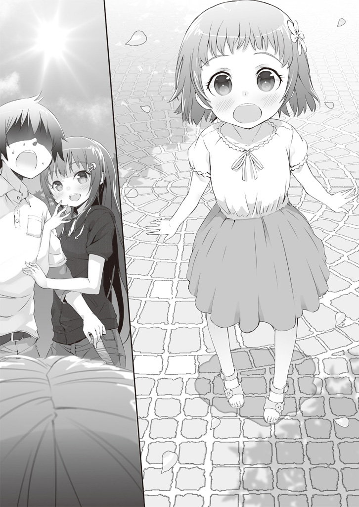
「いや全っ然わかんねえけど!? 何ちょっといい話っぽくしてごまかそうとしてんの！」
もう何が起こってるのか全然わからん！
「説明して！ お願いだから説明してぇ───っ!!」
「えへへ。驚いた？」
「驚いたなんてもんじゃねよ......」
もうイヤだ。驚き疲れた。もう色々限界だ。また吐きそうだ。
「あの子、佐藤優子ちゃんっていう子なんだけど、迷子みたいなの」
光里は優子の相手をコンに任せて（コンはベンチの上に丸くなって優子に撫でられている。親猫が子猫の相手をするようにしっぽをぱたぱたと動かして優子と遊んであげていた）ベンチからやや離れ、優子に聞こえないように話し始めた。
「コンちゃんのお散歩の途中に西公園で休憩してたら、いきなりあの子に『ママ！』って呼び止められちゃって。あんまり可愛かったからそのままママのふりをすることにしたんだけど」
「いや駄目だろそれ！」
言うなればそれは受動的な人さらいである。
っていうか、何だ、子どもが出来たってそういう意味だったのか......。まあそんなところだろうとは思っていたけれど、それでも俺は胸をなで下ろした。
そうだよな。光里のことだからきっと俺をびっくりさせようとしただけに違いないさ。
「いや、最初は勿論冗談のつもりだったよ？ いくら何でも本気で私と自分のお母さんを間違えたりはしないはずだから、きっと何かの遊びなんだって思ったの。だからつきあってあげようと思ったんだけど──」
でも、と光里はコンと戯れる優子を横目で見て声を潜めた。
「話してたら、どうもそうじゃないみたいなの。優ちゃん、本気で私のことを自分の母親だと勘違いしてる。冗談でも遊びでもなく」
「そうなのか？」
「うん。しかもそれだけじゃなくて、あの子名前以外に自分のことなんにも覚えてないの。住所とか色々聞いてみたんだけど、全部わかんないって」
「......ま、マジで？ それ、いわゆる記憶喪失ってやつじゃねえのか？」
光里は目を伏せて頷いた。
記憶喪失なのに光里を母親と勘違いって......どういうことだ？
「何にも覚えてない上に私をママって呼んでくる子を、一人で放っておけないでしょ？」
「まあそりゃ確かに......」
「何とかしてあげなきゃいけないって思って、とりあえずこのままママの振りをすることにしたの。そしたら優ちゃん、急に思い出したように『パパはどこ？』って訊いてきてさ。咄嗟に『パパは今すぐ来るから安心して』って答えちゃって、それで陽ちゃんに助けてもらおうと......」
「そういうことだったのか......」
「そしてせっかくだから陽ちゃんをショック死させようと思って、できる限り誤解させるような表現を心掛けて電話しました」
「殺す気だったのか!?」
「びっくりさせよう」なんて甘っちょろいもんじゃなかった！ 確かに本当に息の根止まったよ！
しかし、父親役か......。言い換えれば光里の旦那さん役である。光里とは家族同然であるとは言え、流石に夫婦を演じるというのはちょっと......何というか。
「......」
「どうしたの陽ちゃん。顔面の毛細血管を流れる血液量が増加してヘモグロビンの色素が表皮から透けて見えてるよ」
「何でそんな気持ち悪い言い方すんの!? 普通に『顔赤いよ』でいいじゃん！」
「......顔赤いよ。どうしたの？」
「っ......べ、別に何でもないって」
いかんいかん、変なこと考えてちゃダメだ。頼られてんだから光里の期待に応えられるように頑張らねば。しかし、記憶喪失の迷子とはまた厄介なものを抱え込んじまったな。
「どうして優子は初対面のお前のことをママだって思い込んでるんだろう」
「私にもわからない。ここのところ想像妊娠してたから、いつの間にか産んでたのかも」
「産まれてたまるか！ つーか想像妊娠て、お前いくつだ一体!?」
「十より上は数えるのをやめたよ」
「やめるの早すぎ！」
とにかく、だ。
優子が幻みたいに何もないところからいきなり現れた──なんてことは有り得ない。一人の人間である以上、どこかに本当の家族がいるはず。帰る家があるはずだ。
「優子にどんな事情があるとしても、まず本当のご両親を見つけてやることが先決だな」
「そうだね。頑張って捜してあげよう」
「ああ。で、肝心のその方法だけど......」
「ねーねーパパ、ママ、何のお話してるの？」
唐突に幼い声で呼ばれ、俺はどきりとした。自分がパパと呼ばれていることに凄い違和感を覚える。振り返ると、コンを抱っこした優子が小さな手で光里の袖を引っ張っていた。
「優子が聞いちゃいけないお話？」
そう尋ねる優子の表情は少し悲しそうだ。しばらく放っておかれて寂しくなってしまったのだろうか。光里は我慢できないといった様子でがばっと優子を抱き締めた。
「違うよー。これからみんなで何して遊ぼうか、って陽ちゃんとお話してただけだよ」
優子の顔がぱぁっと明るくなる。
「遊んでくれるの!? パパとママが、一緒に!?」
「うん。ね、パパ」
「あ、ああ。勿論だ」
「やったあ！」
辺りを走り回って喜ぶ優子を、光里は心底愛おしそうに見つめていた。目を潤ませて慈愛に満ちた微笑みを浮かべている光里は、それは絶対女子高生にできる表情じゃないだろうと思ったが、とにかく聖母のように美しかった。
「ありがとう、パパ、ママ！」
「ふふ、どういたしまして。じゅるり」
「何でよだれ垂らしてんだお前!?」
よだれを垂らす聖母。新機軸である。
「あっれー？ 光里と日渡じゃん。こんなとこで何してんの？」
西公園の入り口から、テニスラケットバッグを提げたジャージ姿の女の子がこっちを見つめて手を振っていた。小麦色の肌にショートカット、アーモンド形の目と鈴を転がしたような声が特徴の活発なスポーツ少女。
曽根毬子──そまりだ。光里と大の仲良しの女の子である。これから部活だろうか。
「そまりちゃん！ あのね、今陽ちゃんと優ちゃんと一緒に遊んでたの。じゅるり」
「ふーん。その子誰？ っていうか何であんたよだれ垂らしてんの？」
尋ねながらこちらに近づいて来るそまり。
「あんた妹いたっけ？」
「ううん、妹じゃなくて、この子は私の娘です」
「え!?」
「やめろ！ だから何でわざわざ誤解を招くようなことを！」
俺はそまりに事情を説明して誤解を解いた（ただし優子は近所の子で、今はおままごとで俺達が父親役と母親役をやっているということにして、詳しいことは伏せておいた。これから部活に行くそまりに妙な気がかりを与えることもないだろう）。
「へー、なるほど。しっかしゴールデンウィークだってのに、朝っぱらから子どもにつきあっておままごととは暇だねーあんたらも」
「うるせえな。今日はサッカー部休みなんだよ」
「ま、あんた達らしくていいと思うけどね。こんにちは、優ちゃん」
そまりはにこやかに手を振った。人好きのするそまりの笑顔につられて優子も笑い返す。
「こんにちは！」
「元気いいねー優ちゃん。それにしても」
そまりは面白そうに目を細めて笑い、
「そうやって三人でいると、あんたらまるで本当の家族みたいよ？ 仲良し夫婦と愛娘って感じー」
「なっ......！ そ、そんなんじゃ......！」
「照れるなってー。お似合い夫婦じゃん」
うりうり、と肘で俺をつついてくるそまり。光里は頬を染めて目を逸らしている。
「違うよ、全然違うよ。陽ちゃんはパパに見せかけたパパ型のペットだよ」
「そのごまかし方は酷くないか？」
「あ、えっと、......ちゃんと可愛がるから安心して？」
「そういう問題じゃねえ！」
そして光里の台詞がなんかエロいと思ってしまった俺のバカ！
「あははー。優ちゃんのパパとママはとっても仲良しだね」
優子は嬉しそうに「うん！」と頷いた。
「あのね、優子ね、仲良しさんのパパとママが大好きなの！」
その可愛らしい台詞と屈託のない笑顔は、光里をノックアウトするのに十分な破壊力を持っていたらしい。光里はマタタビの海で溺れた猫のようにふにゃふにゃのでろでろになって優子に頬ずりして、優子がくすぐったそうに笑い声を上げる。そまりが呆れた様子で溜息をついた。
「完全にスイッチ入っちゃってるね光里。確かに可愛い子だけどさ。ねー、優ちゃん」
そまりは光里と戯れている優子に近づいて、笑顔で声を掛けた。
「優ちゃんのママは優ちゃんが大好きなんだね。羨ましいなぁ」
「そ、そうかな」
照れ笑いを浮かべる優子の髪を撫でながら、光里はそまりを見つめた。
「羨ましがる必要なんてないよそまりちゃん。私はそまりちゃんのことだって大好きだよ。おばあちゃんがそまりアレルギーじゃなかったらうちで飼いたいくらいだよ」
「そまりアレルギーって何!? あたしもペットなんか！」
「このように、そまりちゃんもパパと同じくこちらがボケると凄く活き活きしてツッコミを返してくれる種類の生き物です。できる限り会話に小ネタを混ぜてツッコミのチャンスを与えてあげるようにしましょう」
「ちょっと！ 何勝手にあたしの生態解説してんの！」
「でもパパと一緒だと共ツッコミを始めてしまうのでうちでは飼えません」
「共ツッコミ!? 共食いみたいなもん!?」
「あはは、おもしろーい！」
手を叩いて喜ぶ優子を見て、光里とそまりはしたり顔で微笑み合う。
ああ、何か......和む光景だなぁ。二人ともきっと将来はいい母親になれるだろう。俺はいい父親になれるのだろうか。
などと恥ずかしいことを考えて一人熱くなった顔をぶんぶん振っていると、そまりが「ほら、パパもこっち来なさい」と俺を手招きした。
「優ちゃんがもっとパパともお話したいってよ？」
「え......」
優子はきらきらと輝く笑顔で俺を見上げてくる。俺も光里達に倣ってうまく接してやらなきゃ......と思うのだが、しかしどうすればいいのかわからず目が泳いでしまう。
「あー......えっと、その、優子は何か俺にして欲しいこと、ないか？」
「して欲しいこと？」
「ああ、ほら、肩車とかさ」
う～ん、と悩む優子。しばらくして何か閃いたようにぱっと顔を明るくした。
「じゃあ優子、弟妹が欲しい！」
そまりと俺と光里は同時に吹き出した。
「ちょちょちょっとそれは......ねぇ!? パパだけの力では何ともならないというか......」
「そうなの？」
「あ、あはははは......」
思春期の少年少女には少々刺激が強い発言で、俺もそまりもうろたえるしかなかったが、しかし光里だけは、顔を真っ赤にしながらもぐっとガッツポーズをして、
「......わかった。ママ、パパと一緒に頑張るね」
「ま、待てっ！ お前は自分が何を言っているのかわかってるのか!?」
「将来子どもは三十人三十一脚ができるぐらい欲しいと思っていたの」
「一クラス分産む気なの!?」
「私がこの世で一番嫌いな言葉。それは『少子化』だよ」
「一人で何とかしようとするなァ！」
正確には二人だけど──とは、諸々の抵抗感があって訂正できなかった。
そまりは「部活に遅れちゃうから」と、その後すぐに学校に行ってしまった。優子は寂しがったが、そまりにまた一緒に遊ぶと約束をして貰って嬉しそうにしていた。
そまりがいなくなったところで俺達は、とりあえず今の優子から得られるだけ情報を得ようと、いくつも質問をしてみた。家はどこか、この辺りに知っている友達はいないか、そして──本当の両親のことを覚えていないか。
結果は惨敗だった。ほとんどの質問に対し返ってきた答えは「わからない」だけ、そして本当の両親に関する質問に至っては「優子はパパとママの本当の子じゃないの？」と泣き出してしまう始末。光里が「そんなことないよ」と抱き締めて何とかなだめることができたものの、優子は本当に心から俺達を両親と思い込んでいるらしい。
とにかく何を訊いても収穫はなさそうだとわかった俺達は質問を打ち切った。そして、とにかく交番、場合によっては病院や児童相談所などに行くことも視野に入れて、西公園を出ようとした。だがその時。
「匂う......匂うぞ」
聞き覚えのある変態ボイスが。
案の定影時だった。影時が四つん這いになって鼻をフンフンさせながらゴキブリのようなカサカサした動きで西公園に入ってきた。紛う事なき変態である。誰にでも一目でわかる、お手本のような変態である。
影時は目を赤く怪しく輝かせて、エコーのかかった重々しい声で笑った。
「ククク......うまそうな若い女子の匂いが漂って来よるわ......！」
「お前は悪い妖怪か!?」
「む、何だ。お前もかぐわしき女性の香りを嗅ぎ付けていたのか陽太」
「嗅ぎ付けてねえ！ お前と一緒にするな！」
影時は辺りを見渡すと、光里と優子に目を留めて鼻息を荒くした。
「宇月さんと......そして、ククク、当たりだな。ついに見つけたぞ。少子化の影響によって絶滅の危機に瀕しているという伝説の生物、幻の女と書いて幻女よ！」
「幼い女と書いて幼女だ！ つーか影時、お前は一体何をしてるんだ!?」
影時は服についたほこりを払いながら立ち上がった。
「何、今日は部活も休みだし、久しぶりにこの街を散策してみようと思ってな。夏ならば和田浜に水着美女を探しに行くところだが、まだ時期が早かったので、今日のところは爽やかに幼女ウォッチングとしゃれ込んでいたのだ」
「バードウォッチングみたいに言うな」
「肝心の幼女が全然見つからずに寂しく思っていたのだが、しかしこんなところでこんなに可愛らしい幼女に出会えるとは。初めまして可愛らしいお嬢さん、俺の名は──」
「優ちゃんに近づかないで！」
光里が凄い勢いで影時と優子の間に割って入り、優子を庇うように抱き締めて影時をにらみつけた。あまりの剣幕に優子が目を丸くした。
「ど、どうしたのママ？」
「優ちゃん、この人を見ちゃダメ。この人は怪しい人よ。大人達がよく言う『怪しい人についていっちゃいけません』という注意は具体的にはこの人についていっちゃいけませんということを意味してるんだよ」
「ピンポイントに酷い！ いやいやちょっと待ってくれ宇月さん、俺は別にその子に危害を加えようというというわけではないんだ」
光里の瞳がぎらりと鋭い光を放つ。
「本当に？」
「本当だとも！ いいかい宇月さんハァハァ断言してもいいがハァハァ俺が今その子に対して抱いている想いはハァハァただ可愛いものが愛しいというハァハァ交じりっけなしの純粋な好意だハァハァ。邪な感情など一切ないハァハァ」
「その台詞に信憑性を持たせたければまず荒すぎる呼吸を整えることから始めて」
「違うよ宇月さん、俺の息が荒いのは別に興奮しているからじゃなくて、君達の吐いた息を少しでも多く吸入しようとしているからだよハァハァ」
「そう。だったら私達は皮膚呼吸だけで生きられる生物に進化してみせる」
「無茶言うな！」
「ところで、そういうお前達は何をしているんだ。こんな可愛い女の子とどういう関係だ？ まさか隠し子か？」
「......」
「ちょっと待てなぜ黙る」
当たらずとも遠からずだからである。
「真上くんに教えたら色々危ない気がするから教えない」
「むぅ......」
「ふふ、信用がないな影時君」
昭和の二枚目俳優のような渋い声と共に、影時の黒髪の中から名古屋名物天むすにそっくりな模様のハムスターがぴょこんと顔を出した。天むすはうちのクラスで飼っているのだが、思念塊となり影時と思念契約を結んでからは、学校が終わった後や休日は常に影時が面倒をみるようにしているのだ。
「天ちゃん！」
「やあ光里君。会えて嬉しいよ」
「天ちゃん、どうしてそんなところにいるの？ その祟り神みたいな暗黒の髪に絡まって抜け出せないの？」
「俺の髪はあんなにウネウネしていないと思うが......」
「ははは。いや、影時君の髪は、何だか巣の中に居るようで落ち着くんだよ」
という天むすの返答に、なぜか光里は悔しそうに頬を膨らめた。
「だ、だったら私の髪の方が住み心地いいはずだよ。ほら」
光里は頭を下げ、影時にお辞儀するような格好で近づいて天むすに髪を見せる。艶やかな黒い清流のような光里の髪が鼻面間近にきて耐えられなくなったのか、影時が猛烈な勢いで匂いをかぎ始めたので、俺はとりあえず影時の鼻をつまんで思念力を使い鼻の穴を溶接して閉塞させた（「ぐあああああ息が！ 息がぁあぁああぁあ！」）。
天むすが光里の様子に苦笑する。
「これはこれは。気持ちはありがたいのだが、私は一体どうすればいいのか」
「で......ではこうしよう宇月さん、君の毛根と俺の毛根を陽太の力で混ぜてもらってお互いのキューティクルを共有してからそこに改めて天むす用の愛の巣を作ると」
「なんかすげえ気持ち悪いこと言ってるぞこいつ」
全く......。よく天むすもこいつがパートナーで我慢できるよな。
ん？ そう言えば、今天むすが影時と一緒にいるってことは、
「なあ、今は影時も思念力使えるってことだよな」
「まあそうだが」
「......ちょっと手伝って欲しいことがあるんだけどよ」
俺は一旦優子を光里に任せ、影時に事情を説明した。流石に影時も真面目な顔になって聞いていた。
「なるほど。また難問を抱えてしまったな、陽太」
「ああ。でよ、ちょうどこれから優子の両親を捜しにいこうとしてたんだけど」
「わかった、それは俺が引き受けよう」
即答だ。本当にこいつは、変態のくせにいざという時に頼りになるから困る。
「......悪いな。面倒な役押しつけちまって」
「何、妥当な配役だ。俺は思念力で瞬間移動できるから機動力が高い。そしてお前達は親代わりに優子嬢を見ていてやらねばならんのだから自由に行動できない。俺が捜索係、お前達が世話係と分担した方が効率的だ」
「助かるぜ。それじゃ、親捜しは任せたぞ」
「ああ。ただし──」
影時はニヤリ、といやらしい笑みを浮かべた。
「捜索のための資料として、優子嬢の生写真を撮らせてくれ」
「わざわざ『生』ていう意味あるか？」
そして影時は持参していたデジカメで思う存分優子を撮影し（「いいねぇ～......お嬢ちゃん凄く可愛いよ。はいもっと笑ってハァハァ。あ、お母さんも一緒に入ってくれますか？ ええ、お嬢さんを抱きかかえる感じで......はいそうですハァハァ、ありがとうございますハァハァ）、とてもご満悦な様子で街へと繰り出していった。写真だけ撮って逃げる気じゃねえだろうなと若干不安になった。
「よーし、それっ、コンちゃん取ってこーい！」
優子がボールを投げる。コンはむすっと不機嫌そうな顔をしながら、それでも仕方なさそうにちゃんとボールを取ってきて優子に渡してやる。そうすると優子はとても喜び、手を叩いてコンを褒める。コンはまんざらでもなさそうにぷいと顔を背ける。
俺と光里はベンチに座り、そんな風に少女と猫（のぬいぐるみ）が戯れる光景を眺めていた。俺でも心が和んで温かい気持ちになるこの光景、光里はさぞ幸せそうな顔をしているだろうと隣に目をやると──
「う......ううっ、ひっく、ぐすっ、ううう」
そこには人目も憚らずに号泣する美少女の姿が！
「うえぇ!? ちょ、ど、どうしたんだお前!? なぜに泣いているんだ光里！」
「優ちゃんとコンちゃんが......あまりにも、可愛すぎて......」
「......はい？」
「こんなに可愛い生き物が私の目の前に存在しているんだという事実に感動して涙が止まらない......」
「......」
全然意味がわかんねえ......。
「だ、大丈夫かお前？ ちょっと落ち着けよ」
休日ということで公園には当然俺達以外の人もいるのだ、このままでは俺が光里を泣かしていると誤解されてしまう。俺は光里が落ち着くように背中をさすってやった。
「......ごめん、取り乱した。もう大丈夫」
しばらくすると光里は泣きやんだ。目尻に残った涙を俺の服で拭い（どこで拭いてんだこいつと思ったが可愛かったから許した）、それから小首を傾げて微笑んだ。
「ありがと。もう落ち着いたよ」
「そうか。それはよかった」
「うん。ところで陽ちゃん、親権ってどうやったら合法的に奪い取れるのかな？」
「お前やっぱり落ち着けーっ！」
可愛い顔して何怖いこと言ってんの!?
「流石に冗談だよ。優ちゃんの本当のご両親の気持ちになったらそんなことできないから。可愛い愛娘が自分達のことをすっかり忘れちゃって他人を親だと思い込んでるなんて寂しすぎるもの。やっぱりちゃんと記憶を取り戻して本当の家族と一緒に暮らすのが、きっと優ちゃんにとって一番の幸せだよ」
「......でもよ。もしもこのまま記憶が戻らなかったらどうするんだ？ しかも優子の場合、ただ記憶失ってるだけじゃなくて俺達を親だと思い込んでるんだぜ」
「その時は私が育てるしかないね」
「いや、真面目な話さ」
「私は真面目だよ？」
光里はそう言って、まっすぐに俺の目を見つめた。
「うちはおじいちゃんとおばあちゃんの年金暮らしだからあんまり裕福じゃないけど、生きていくだけで精一杯ってほどじゃないし、私がアルバイト頑張ればきっと、子どもをもう一人養うくらいは出来るよ。おじいちゃんとおばあちゃんも子ども好きだし」
「......お前、本気か？」
「もちろん。もし優ちゃん自身が私と一緒にいたいって言ってくれたらだけど」
俺はしばし言葉を失った。目の光だけでわかる。確認するまでもなく光里は本気だ。もちろんそれを一番に望んでいるわけではないのだろうが、万が一の場合には本当に優子の母親になる覚悟がある。
「理由を訊いてもいいか？」
「可愛いから」
「流石に今回はそれだけじゃねえだろ」
「......言われるままにお母さんのふりして、これだけ優ちゃんをなでなでしてむぎゅむぎゅしてくんかくんかしたのに、いざとなって優ちゃんが頼ってきた時に私が逃げたりしたら、優ちゃんはきっと裏切られたって思うはずだよ。あれだけ可愛い可愛いって言ってきたくせにって。そんなことになったら優ちゃんがどれだけ傷つくか、想像もしたくない」
「お前......」
こいつはそんなことまで──好意を伝えることの責任まで考えながら優子を可愛がっていたのか。
「記憶が戻っても戻らなくても、きっと今日の私達との出会いはいつまでも優ちゃんの心に残る出来事になると思う。だからいつか優ちゃんが今日のことを温かい思い出に思えるように、私は本気で優ちゃんのこと愛してあげたい」
「......」
たまにこいつの言葉や表情の後ろ側に、途方もない愛情が垣間見える時があって、そういう時俺は決まってくすぐったいような誇らしいような不思議な気分になる。その気持ちが一体何を意味しているのか、まだ俺にはわからないけど──でも、これだけは言える。
俺はこいつと幼なじみでよかった。
「さあ、そのためにももっと気合いを入れて優ちゃんをなでなでしてむぎゅむぎゅしてくんかくんかしてあげないと」
「親心と下心がごちゃ混ぜになってるぞ......」
こいつと幼なじみでよかったと、俺は心からそう思う。
......だから俺は、こいつにもそう思ってもらえるような男でいたい。
「......『私が育てる』じゃなくて、『私達が育てる』だろ」
「え？」
「お前が母親だったら俺は父親じゃねえか。もしそうなった時は、俺も一緒だ。あんまり頼りにならないかもしれないけど、俺にできることは何でもする。約束だ」
光里はきょとんと目を丸くしたが、やがて顔を赤くして困ったように目を逸らした。
その反応で気付く。......しまった、今の台詞、よく考えたらほとんどプロポーズ同然じゃねえか！
「え、えっと......陽ちゃん、それは......」
「ち、違うぞ!? あ、飽くまで優子の父親代わりという意味であって、お前との関係が特別どうこうというようなそういった感じの意味合いは全く含んでいないのであって......」
慌てて弁解する俺を見て光里はぷっと吹き出し、小首を傾げて微笑んだ。
「わかってるよ。ありがと、陽ちゃん。......さてと」
光里は立ち上がり、すーっと息を吸い込むと、両手を筒状にして口に当てて叫んだ。
「優ちゃん、コンちゃーん！ そろそろお昼ご飯食べに行こー！」
優子が「はーい！」と手を振って応える。そうか、そういやもうそんな時間か......。
「ママー！」
元気よく駆けてきた優子が光里に飛びついた。
「優子お腹空いたー！」
「うん、ママも優ちゃんを見てたらお腹空いてきちゃったよ。じゅるり」
「怖い、それ怖いよ光里！」
「あ、そうだ。今日お天気いいし、せっかくだからうちでお弁当作って和田浜にピクニックに行かない？」
「いいな、それ。でもそうすると少し昼飯遅くなっちまうけど......大丈夫か、優子？」
尋ねると、優子はこっちがちょっと驚くぐらいに目を輝かせて何度も頷いた。
「行きたい！ パパとママとピクニック！」
「よーし、じゃあお弁当持って一緒に行こうね」
「うん！」
光里が頭を撫でると、優子はとても嬉しそうに笑った。
全く、仲がいいなぁ。本物の親子みたい──いや、それ以上かも。
何だか勢いに乗ってとんでもない約束をしてしまった気がするが、幸せそうな光里と優子を見ていたら、まあいいかと思えた。この光景には、それだけの価値があるはずだ。
３．
「やはり君は優しいな、影時君」
「ん？ 突然どうした、天むす」
「進んで大仕事を引き受けるとは」
「大仕事と言うほどではないさ。親子水入らずを邪魔しないように、な」
天むすは影時の髪から飛び出し、肩まで降りてきて影時の顔を見つめた。
「君はあの二人を応援しているのだね？」
「二人ともいい奴だからな。しかし関係が近すぎる故、かえって中々進展しないのがもどかしい。二人とも鈍感だしな。......尤も、それが見ていて楽しい部分でもあるのだが」
「彼らに比べて、影時君、君は中々鋭い勘をしていると思うよ」
「俺は色々な部分が敏感なんだ。さて、無駄口はここまでにして捜すとするか」
とりあえず交番に向かい、迷子の届けが出ていないかを確認する。捜索願がないとわかると、自分達が迷子を預かっていることを伝えて、捜している者が現れたら連絡をくれるように頼んだ。
次に優子の写真を大量に印刷し、「迷子預かっています」というチラシにして手当たり次第に配りまくった。
そして──五時間後。
「て、手間がかかるだろうとは思っていたが......まさかこれほどとはな......」
未だに情報はゼロである。すっかりくたびれた影時は、スポーツ飲料を飲みながら商店街近くの自販機に寄りかかって休憩していた。
商店街で主婦層に情報提供を求めたり、小学校を訪れて教職員に優子の写真を見せ彼女が通っていないかを尋ねたりしたのだが、今のところ全て無駄足だ。
「ふむ。妙じゃないか影時君」
「何だ、天むす」
「優子君は迷子なのだ。ならば、そろそろ彼女を捜す者が現れてしかるべきだろう」
「......ああ。俺もそれは気になっていた」
現在時刻は午後三時である。光里が優子に出会ったのは午前八時ごろだったというから、少なくとも七時間、優子の親は自分の娘の行方がわからないでいるのだ。優子の様子では両親に行き先や予定を告げて出かけたとは考えにくい。
「可能性は低いが、ご両親がまだ優子嬢の失踪に気がついていないか......或いは」
影時は顎に手を当て、情報を整理した。
「優子嬢は近隣にある三つの小学校のどこの生徒でもなかった。ということは、あの子はこの近くに住んでいるわけではないのかもしれない。だからまだご両親の捜索の目も届いていないとか」
「しかし、そうだとすると、優子君は一体どうやってそんな距離を移動したのだ？ あの子はお金もほとんど持っていなかったのだろう？」
「......わからん」
行き詰まる。優子の行方をさかのぼれない。まるで、幻のように何もないところからふっと現れたのではないかとすら思えてくる。
「ふっ......まさに幻の女と書いて幻女だな......」
「何気持ち悪いことを言ってるんだか」
聞き覚えのある声に振り向くと、美少女のような美男子にして思念糸の専門家、天川星也が背後に立っていた。
「おお、天川ではないか！ 奇遇だな、どうしてこんなところに？」
「ちっ、またつまらぬ奴に会ってしまった」
「お前から話しかけておいてその言い草は酷いだろう！」
「それで、君こそ何の権利があってこの世界にいるんだい？」
質問をはぐらかされたが、影時は追及しなかった。何だかわからないが機嫌が悪いようだし、言いたくないのなら別にいいだろう。
「俺は今、迷子捜しの途中なのだ。いや、正確には迷子届け先捜しかな？ 陽太と宇月さんがこの子を預かっているんだが──」
影時は天川に優子の写真を見せた。
「この子は記憶を失っていてな。とにもかくにも親御さんに届けなければということで、二人がこの子の面倒を見ている間に俺がご両親を捜索していたのだが」
「この子は今どこにいる？」
影時を遮った天川の言葉は、影時が予想していなかったほどに強い口調で放たれた。
「教えろ。この子はどこだ」
「......なんだ、怖い顔をして。ははーん、さては一目惚れだな。確かにハンパなく可愛いお嬢さんだが、流石にそれはまずいぞ天川。もう少し熟すまで待たないと──」
天川は影時の襟首を掴んで引き寄せ、真正面から睨み付けた。そして有無を言わさぬ迫力で一言、
「早く教えろ」
「......わ、和田浜だ。陽太から連絡があった、宇月さんと優子嬢と一緒にピクニックに行くと」
天川は乱暴に腕を離すと、もう影時には見向きもせずに和田浜の方へと走っていった。影時は慌ててその後を追う。
「ま、待ってくれ天川、一体どうしたと言うんだ！ お前は優子嬢を知っているのか!?」
「......ああ、知っているとも」
天川は走りながら、振り返らずに言う。
「運がよかったね、真上君。君の捜している迷子の届け先は、この僕だよ」
４．
ここ和田川市には小さいながら綺麗な砂浜があって、夏には結構な数の海水浴客で賑わうのだが、流石に五月上旬の海で泳ごうと思う奴はいないようで、俺達が訪れた時には犬の散歩や俺達と同様ピクニックに来ている家族連れがぱらぱらと見えるだけだった。
穏やかな海を臨んで食べる光里の手製弁当は凄くおいしかった。世界一おいしかった。
「優子も作ったんだよ！ パパ、食べて？」
俺は優子の差し出したおにぎりを受け取って口に運ぶ。うん、形はあんまり上手じゃないけど味は悪くない。まあ、おにぎりをまずく作るなんて芸当が出来るのはうちの妹くらいだろうけど。
「どう？ おいしい？」
期待の籠もった円らな瞳で見上げてくる優子。......こんなの、「おいしい」以外に答えられるわけないだろう。
「ああ、おいしいよ」
「ホント!? やったぁ！ ママ、あのね、パパが優子のおにぎりおいしいって！」
何この子、凄い可愛い。些細なことで大喜びしてママに報告する優子を見ていたら、何だか胸がきゅんきゅんしてきた。
俺達は浜辺で色々なことをして遊んだ。コンの思念力を駆使して反則的に巨大な砂の城を作ったり、波打ち際でカニを捜したり。途中、他の家族連れにコンを見られて「何あれ、ぬいぐるみ動いてない？」と不審がられたが、「こういう柄の猫です」と押し切ってごまかした。その後コンが波に濡れて布が水を吸ってたぷたぷになってしまい、それを絞っているところを見られて「やっぱりそれぬいぐるみだよね」と追及されたが「違います汗かきの猫です」と言ってごまかした。ちょっと無理があった。
「パパ、ママ。手、繋いで？」
海で遊び尽くした後、ひょんなことから今度は俺の家に行こうという話になった。そして和田浜を出ようとした時、優子が上目遣いでそんなおねだりをしてきた。
「うん、いいよ」
光里は左手で優子の右手を掴み、右手で優子の左手を掴んだ。光里と優子は、まるでこれからダンスでも踊るかのように両手を繋いで向かい合う形になる。
「え、ママ、あの......」
困惑する優子を尻目に、光里は俺を見てニヤリと悪戯っぽく笑った。
「ふっ。残念だったね陽ちゃん、優ちゃんと手を繋ぐ権利は両手とも私が貰ったよ」
「お前は子どもか！」
どや顔の光里に、しかし優子は「えーっ」と口を尖らせる。
「ママだめー！ いっこはパパのなの！」
そして光里の右手をふりほどき、俺に左手を差し出した。
「はい、パパ！」
満面の笑顔。
......やばい。何この小さな生き物。超可愛い。超きゅんきゅんする。これは世のお父さんが娘を溺愛するのも仕方ない。
「......ああ」
うまく笑えていたかわからないが、とにかく俺は微笑もうとして、優子の手を握った。小さくて柔らかくて温かい手が、きゅっと、まだ幼い力でこちらを握り返してきたのがわかった。
「あーあ。パパに半分とられちゃった」
「いいの。ママにはこっちあげるから、これでがまんして？」
「んー。優ちゃんがそう言うなら仕方ないなぁ」
俺達が手を繋ぐと、何を思ったのかコンがぴょんと優子の頭の上に跳び乗った。
「わっ！ どうしたの、コンちゃん？」
「ふふ、コンちゃんも仲間外れは嫌だよね」
優子の頭に居座ったコンのすまし顔は、妙に面白くて、何だか笑えた。
本当の家族のようだ──と思った。たった十五年しか生きていない俺に本当の親心なんてわかるはずないけど、それでもそんな錯覚を抱いていたいと思った。
仲のいい夫婦。仲のいい親子。仲のいい家族。
将来、本当にこんな家庭を築けたらいいな。そんなことを思いながらふと隣を見ると、優子と手を繋いだ光里が俺の視線に気付いて微笑みを返してくれた。
その笑顔を見ながら、仮に光里と結婚したら今日の光景がいつかの未来に再現されることになるんだろうか、なんて恥ずかしいことをちょっと考えてみたりもして。
本当に、俺はどこまでもおめでたい奴だった。
「──ようやく見つけた」
突如として、俺達の前に影時と天川が出現した。恐らく影時の思念力で飛んできたのだろう。現れたと同時に、天川は射貫くような視線を優子に向ける。
「影時！ それに何で天川がここに......？」
「記憶を失っているそうだね。それは色々と好都合だ。厄介なことになる前に──」
俺達には目もくれず、天川は懐から万札を数枚取り出して優子に向けた。
「──っ!? コン！」
その行為が何を意味するかを知っていた俺は、咄嗟にコンに合図を出して思念力を発動した。さっき砂の城を作ったのと同じ要領で、足下の砂を混ぜ合わせて砂人形を作り出して天川に突撃させる。天川が万札を刀のように振るうと砂人形はたちまち分解してしまったが、俺はその隙に天川に近づいて両腕を掴んだ。
「お前......！ 今優子に何をするつもりだった!?」
「よ、よせ陽太！」
何だよ影時、お前もこいつの肩を持つのか。こいつは優子を攻撃しようとしたってのに。
「どいてくれ、日渡君」
「どいて欲しけりゃ説明しろよ！」
「......だったら見せてやるよ」
天川は俺の手を振り切って懐から千円札を取り出し、ふっと息を吹きかけた。その瞬間、千円札は煙のように消え、そして俺達の間に、蜘蛛の巣のように張り巡らされた、様々な太さや長さや色をした半透明の絹糸のようなものが現れる。
「これは......」
人間の「思念」のやりとりが形になったもの──思念糸だ。普段は見えないが、前にも一度、天川がこうやって思念糸を視覚化したことがあった。
この思念糸は、思念塊や思念能力者なんかには、常人とは比べものにならないくらい大量に巻き付いているものだ。思念能力者である天川は金色の繭のようになっている。
しかし、思念塊といっても思念契約を結んでいるコンと天むすの体には、思念糸は一本しか巻き付いておらず、代わりに適合者である俺と影時の体に大量の思念糸が纏わり付いていた。思念契約を行った思念塊は、一本を残して全ての思念糸を適合者に持っていかれてしまうそうだ。そして残された一本がまるで命綱のように思念塊と適合者を繋いでいるのだという。
光里は一般人なので大した量ではない。ただ──なんだか光里の場合は、思念糸が妙に幾何学的な模様を描いて巻き付いているのが不思議だけど。
だが、その時俺の目を奪ったのは、そんな些細な謎ではなかった。
優子だ。
優子の体には、薄紫色の思念糸が、これでもかというほどに乱雑なぐるぐる巻きになっていたのだ。その量はとても常人とは思えない。
「これは......」
「一目瞭然だろう」
そう言って天川は優子を指さした。
「その子は僕や火威先輩と同じ......思念能力者だ」
全員の視線が優子に集中する。優子本人は、何が何だかわからない不安と恐怖に取り囲まれたようにしきりに俺達の顔に視線を滑らせている。
「住んでいた孤児院を抜け出して、思念力を使って悪さを働いていたのさ。昨日僕が見つけて捕縛しようとしたんだけど、あと少しのところで逃げられてしまって、捜していたんだよ。まさかショックで記憶を失った上、よりによって君達に保護されているなんて思わなかった」
「悪さ、って......」
「事情はわかっただろう。さあ、大人しくその子を僕に渡してくれ」
そんなわけあるか。こいつはこんなに素直でいい子なのに......捕まらなきゃいけないようなこと、するわけないじゃないか。
呆然とする俺を押しのけ、天川は優子に迫る。だが光里はそれを拒むように優子を抱き締め、全身で庇った。
「来ないで、天川くん」
「聞き分けてくれよ光里ちゃん。僕はその子を傷つけるつもりはない」
「優ちゃんを捕まえて......それで、どうするの？」
「どうもしないよ。ただ、今までの居場所には帰れないだろうから、思念紡績協会で保護する。それだけだ」
「だったらどうして昨日、優ちゃんはあなたから逃げたの？」
「......」
「......やっぱり、優ちゃんは渡せない。もう優ちゃんを怯えさせないで」
その時初めて天川が焦った様子を見せた。光里を見て......いや、違う。光里に抱き締められている優子を見て、だ。
「光里ちゃん。今すぐその子から離れるんだ。頼むから」
いつになく真摯な天川に、光里が少し迷った表情になる。だが、怯えた顔で縋り付いてくる優子を見つめ、決意したように天川に視線を返した。
「私は優ちゃんを裏切らないって決めたの。だから離さない。優ちゃんに居場所がないんんだったら、私が優ちゃんのママになる」
「やめろ......！ それ以上、その子に愛情を注いじゃいけない！」
天川が叫んだのと、それはほとんど同時だった。
優子が凄まじい絶叫を発し、直後、優子の纏っていた薄紫色の思念糸が濃いダークパープルに変色した。そして禍々しく染まった思念糸は、暴力的な触手のように蠢いて至近距離にいた光里を巻き込み、四肢を縛って拘束したのだ。
「なっ......」
もうその瞬間には、光里は気を失っていたようだった。優子の目は虚ろで、視線がどこに向いているのかもわからない。ただ優子の思念糸は爆発的に膨張して、優子の体の周囲に邪悪な化け物のようなおぞましい姿を形成していた。
「な、なんだあれは！」
「思念糸が実体化......!? バカな、こんなことが......！」
影時も天川も驚愕している。何が何だかわからないが、俺はとにかく光里を助けるために優子に近づこうとした──だが、優子を中心として凄まじい衝撃波が発生し、俺達は紙くずのように堤防の上まで吹っ飛ばされてしまった。影時が空中で俺を受け止め地面に瞬間移動してくれて助かった。
「天川！ これは一体どういうことだ！」
何よりもまず状況を知りたい。堤防の裏に隠れて、俺は天川を問い詰めた。
「あの子の思念力が発動......暴走したんだ」
「どんな思念力だったらあんなことになるんだよ！ あれ今までに見た思念力の中で一番怖えぞ！ しかも光里は巻き添え食らっちまってるし！」
「巻き添えじゃない、あれは光里ちゃんを取り込んだからこその姿だ。こうなる前に何とかしたかったんだけど」
天川は苛立たしそうに髪を掻き上げた。
「あの子、佐藤優子の思念力は僕の思念力にかなり近いんだよ......ある特定の『燃料』と引き替えに奇跡的な力を得るという点でね。僕の場合はその燃料が『金銭』で、あの子の場合は『愛情』だ」
「愛情......？」
「つまり優子嬢は、愛情を受ければ受けるほどに強くなると」
「その通り」
じゃあ、今の優子の力は、光里の愛情を燦々と受けた結果だってことか......？
「問題は、光里ちゃんが佐藤優子に対して抱いていた愛情が半端じゃなかったってことだね。恐らくあの子は僕と再会したショックと、そして光里ちゃんに注がれた愛情が強すぎたことで思念力が暴発したんだ。その結果、より強い力を得るために光里ちゃんを愛情エネルギーの供給タンクとして取り込んてしまった」
「だーもー、御託はいいんだよ！」
シビレを切らしたようにコンが喚いた。
「問題なのはどうやったら光里と優子を助けられるか、だろ！ それだけ教えろ！」
「......まあ、一番手っ取り早いのは力ずくだろうね。むしろ佐藤優子を救うという観点からすれば、この事態はむしろチャンスかもしれない」
「チャンスって、どこがだよ？」
「思念能力者は、一度思念力に目覚めてしまうと滅多なことじゃそれを失うことはできないんだよ。一生力と付き合っていかなきゃいけない。だけど、今のあの子は思念力が暴走しているせいで、絡みつく思念糸が相当不安定になっている。この状態で思念糸を散らせば、うまくいったら思念能力者でも何でもないただの人間に戻れるかもしれない。そうなれば当然光里ちゃんも解放される」
「そ、そうなのか」
確かに、こんなおっかない暴走を引き起こすような力だったらなくしてしまった方が優子のためだろう。......しかし。
俺は堤防の上から、砂浜の上に立つ優子の様子をのぞき見た。
......恐ろしいことになっている。
優子の真上に灰色の雲が渦巻いている。天候を操っている。さっきまであんなにピクニック日和だったのに、今や海は大荒れ、空は真っ暗、雷まで発生している始末。
優子の本体は抜け殻のようになってしまっているが、そこを中心に空中に伸びた思念糸があやとりのように何かの形を紡いでいた。何か──というのは、化け物だ。巨大な四枚の翼と、凶悪に太い二本の腕と、極悪に伸びる無数の牙を持った、全長二十メートルを優に超すＲＰＧのラスボス並みの迫力を持った化け物が、優子に取り憑いている。光里はその化け物の中心部でまるでとらわれの姫のように十字の張り付けにされてぐったりしていた。
そして、光里は四肢を縛る思念糸から何やら発光する液体のようなものを吸い取られているようだ。あれが愛情エネルギーってやつか？
「と......とんでもねえことになってんぞ」
優子は一体何者なのだ。ついさっきまで無邪気な可愛い子どもだったのに、今ではまるっきり魔王である。
「あんなんに力ずくで勝てるのか？」
「......普段なら無理だろう。だけど、今は違う」
天川はそう言って立ち上がり──そして、懐から札束を取り出して空中に放り投げた。札束は空中で分解し、おびただしい量の万札が天川の周りを整然と取り囲む。
「お、お前高校生のくせにいくら持ち歩いてんだよ！」
「昨日あの子を逃がしてしまったのは僕の失態だ。だからこそ僕は同じ轍を踏まない。油断はしない。こういう万が一の事態に備えて、百万円で武装してきた」
「ひゃく......！」
す、すげえ......！
千円で雷を呼び、一万円で爆炎を生み出す天川の思念力。百万円あれば、一体どれほどの力をその身に纏うことになるのか、俺には想像もできない。
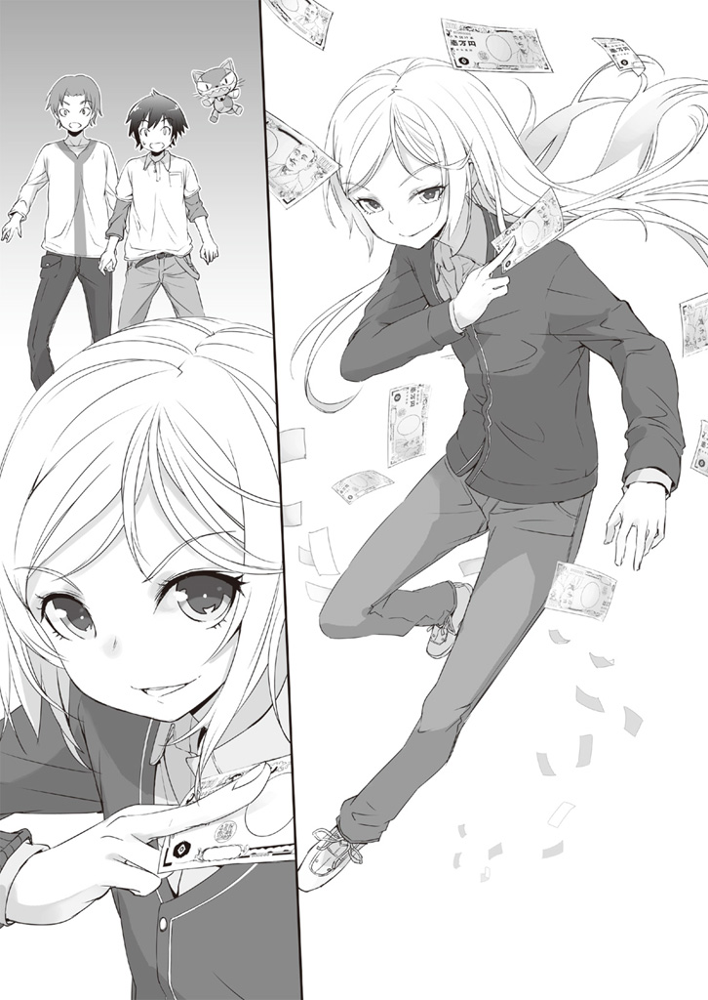
これなら──いける！
「巻き添えを食わないよう、君達はここに隠れていてくれ」
天川はふわりと跳んで堤防の上に降り立ち、百の万札を魔方陣のように展開させて攻撃姿勢を取り、そして──
「──今日の僕は、金遣いが荒いよ」
決め台詞を放った、その瞬間。
優子の思念力で生み出された魔王（以下、優子魔王）の、闇の剣山のようにびっしりと牙の生えそろった上顎と下顎が開かれ、そして口の中から海の方角に向けて、『カッ』と細い光の筋が瞬いた。
本当に一瞬だった。
目も眩むような閃光の後、遠く遠く沖の方で、海面が膨らみすぎたホットケーキのように盛り上がり、そして──
爆発した。
遙か彼方の海上に、直径が何キロメートルなのか目算すらできないほどに巨大な爆炎のドームが生まれ、テレビでしか見たことがないキノコの形をした雲が上がる。やや遅れて、「ドドォーン......」という、音が本当に空気の振動であることを実感させる、腹の底がびりびり震えるような低音が俺達の元に届いた。
絶望的な光景に言葉を失った。
天川は堤防の上で、決めポーズのまんま固まってしまっている。目が有り得ないほど点である。というか顔のパーツが全部点である。冷や汗だらだらである。
優子魔王が、さびついたブリキのおもちゃのようなぎこちない動きで、光のない瞳をこちらに向ける。
俺達は全員全力ダッシュで逃げ出した。
「あ、あ、天川ァ！ お前何逃げてんだコラァ！」
「たった百万であんなもんに勝てるわけがない！」
「あれだけ格好つけておいてそれはないだろう天川！」
「だったら君がいってこいよ真上！ 君の大好きな幼女だろ！」
「幼女は大好きだがオプション部分が怖すぎるのだよ！」
「ちょ、ちょっと待て！ これ街の方に逃げたらまずくないか!? あのビームが地上に命中したら街の一つや二つ簡単に消し飛ぶぞ！」
言葉にすると改めて自分達の置かれている状況がどれだけぶっ飛んでいるかを思い知らされる。何で俺達は街の一つや二つ簡単に消し飛ばすような相手と立ち回りを演じているのだろう。しかも相手はさっきまでただの可愛い女の子だったってのに。
「くそ、仕方ない！ 海の方に逃げるぞ！ 絶対にあれを街に撃たせるな！」
幸い、優子魔王の動きは鈍い。さっきのビームも連発はできないようで、相変わらず軋んだぎこちない動きで俺達を目で追っているだけだ。......だが。
「どうすんだよ天川！ あんな強いんじゃ力ずくなんて絶対無理じゃねえか！」
「まさかあんなに強力だとは思わなかったんだよ！ あんなの僕の思念力換算で一千万円クラスの力だ！」
「お前の思念力換算で言われてもよくわかんねえよ！ もっとわかりやすく！」
「ざっとゴジラ一頭分！」
「ええええええええ!?」
か......怪獣並みかよォ！ こんなんもう自衛隊、いや地球防衛軍の出番じゃねえか！ ただの男子高校生には明らかに荷が重すぎる！
「つーか逆にお前一千万円でゴジラと互角なの!? それはそれですっげえな！」
「いやこの場合何より凄いのは優子嬢にあの力を供給している宇月さんだろう！ 彼女は一人でゴジラ並みの愛情を優子嬢に注いでいるということになるぞ！」
「ゴジラ並みの愛情って何!?」
「ああっまずい！ もう一発くる！」
はっと振り返ると、優子魔王の口の中に眩い光が集約していた。
ヤバイ。避けられない。っていうか避けても意味がない。角度的に、今あいつが俺達に向けてビームを放ったら砂浜に着弾することは必然だし、そうするとあの威力では爆風で和田川市全てが吹っ飛んでもおかしくない。
万事休す。
だがその時、唐突に俺の隣を走っていた影時の姿が消えた。そして、
「こっちだ、魔王よーっ！」
影時は海上数十メートルの位置に出現し、大声をまき散らして注意を引きつける。優子魔王が釣られて影時に狙いを定め、超威力ビームを発射。その瞬間に影時は再び瞬間移動してビームをかわす。ビームは閃光を残して遙か虚空へと吸い込まれていった。
「ぶはぁっ！」
尻餅をついて俺の隣に帰還した影時は、全身がこれでもかというくらいに震えまくっていた。無理もない。
「し......ししししし、死を覚悟したぞ......！」
「すげえよ、お前すげえよ！ 暫定的にこの街を救った英雄だよ！」
咄嗟に自分の身を的にして照準を外すなんて思いつかない──いや、思いついたとしても実行できやしない。こういう土壇場での影時の行動力は驚嘆に値する。
「ナイスだ、真上君」
天川ですら影時の行動を賞賛した。影時の命がけの行動に触発されたのか、やや落ち着きを取り戻したようだ。再び堤防の物陰に隠れると、天川は「二つ、現状を打開する方法がある」と策を提示した。
「一つは、真上君が瞬間移動して市街から僕に大量の現金を届けること。その辺のＡＴＭぶっ壊して二千万円も持ってきてくれれば、十分奴に対抗できる。ただし──」
「ただし？」
「この方法だと、戦いのスケールが怪獣映画並みになる。当然戦場に対するダメージも怪獣映画だ。この街を無傷で済ます自信が僕にはない」
「じゃあ駄目だろ！」
確かにこんなところで怪獣が二頭も暴れたらとんでもないことになる。
「もう一つは──光里ちゃんと佐藤優子を繋ぐ思念糸を断ち切ることだ。今の彼女のふざけた力は、光里ちゃんの異常なほどの愛情によって成り立っている。愛情エネルギー供給タンクである彼女を解放すれば、途端に佐藤優子は弱体化するだろう」
「なるほど。それで、どうやれば光里を優子から切り離すことができるんだ？」
「光里ちゃんは意識を失っていて、だからこそ抵抗できずに強制的に愛情を搾取されているんだ。だったら逆に彼女を起こしてやればいい。そうすれば彼女自身の意識が阻害して、あんな一歩的な搾取は不可能になる」
「そうなると、どうしたら彼女を起こすことができるのかが問題だな。これだけの事態が起こっているのに目を覚まさないということは、恐らく特殊な力で無理矢理眠らされているのだろう。普通の方法では無理ではないか？」
「......」
そこで皆の言葉が途切れた。光里を起こす方法が見つからない。ただ大声を出したりするだけじゃ駄目だってんなら、一体どうやって起こせばいいんだ？
「影時君」
と、不意に天むすが渋い声で言った。
「君は以前──あの火威という女性と戦った時、私の思念力を応用し、自らの思念を陽太君の脳内に転移させるという離れ業を行っただろう」
「あ、ああ。そう言えば」
「あれと同じことをすればいいのではないか？ つまり、光里君の脳に直接『目を覚ませ』というメッセージを送り込むのだ」
「......それだ！」
天川が目を輝かせた。
「外からの情報では佐藤優子の思念力によって断絶されてしまうだろうけど、流石に内側からの情報を防ぐ術はないはず。可能性は高いよ」
「お、おお......だが......」
影時が気まずそうに俯く。
「あの時の凄まじい力はほら、ギャグキャラ補正というやつなんだ。だからあれはシリアスな戦いでは使えない」
「何だそのふざけた理屈は!?」
詰め寄る天川から目を逸らすようにして、影時がちらりと俺の顔を見た。
影時が俺に何を伝えようとしているのか、すぐに理解した。
深く息を吸い、吐いて、心を落ち着ける。覚悟を決めろ。
「......俺がやる」
俺は、決意と共に静かに告げた。
「コンの思念力でも、それに近いことはできるだろ？ 俺の想いを光里の頭の中に混ぜ込めばいいんだ」
「......それはそうかもしれないけど。ぶっつけ本番で君にできるのかい？」
「影時にできたことが俺にできないわけがねえ。それに──」
俺は化け物に取り込まれてしまっている光里と、優子を見た。
意識を失ってぐったりしている光里。目が虚ろで自らの意思を失った傀儡のようになってしまっている優子。
光里が俺にとって大切なのは言わずもがな。そして優子も、たった一日だけでも、どんな姿になろうとも、今は俺の大切な娘だ。二人とも俺にとって凄く大事な──家族なんだ。
だから絶対に、この俺の手で助け出さなきゃいけない。そうだろ、影時。
「俺がやらなきゃ駄目なんだ」
「......コン、君もそれでいいのかい？」
コンはフフン、と生意気そうに鼻を鳴らして、
「当たり前だ。コイツがびびらないように見ててやるよ」
「そうか」
天川は肩をすくめて溜息をついた。
「わかったよ。それでいこう。ただし、とらわれの姫君に辿り着くためにはあの魔王と一戦やり合う必要がある。倒さなくてもいいけど、かいくぐらなきゃいけないよ。覚悟はいいかい？」
「当然だろ」
「ここまで来たら引き下がれまい」
俺達は互いに頷き合い──そして、堤防の陰から飛び出した。
「いいかい、この戦いは『一発でも食らったら終わり』なんて甘っちょろいもんじゃない。『一発でも撃たせたら終わり』なんだ。防御や回避に意味はない、そんなことに気を配っている余裕があったら──」
「少しでも攻撃する！ 反撃させる隙を与えないっ！」
俺は最大出力で思念力を発揮し、砂を練り上げて百体の砂人形を生み出した。更にその一体一体に、天川が用意した万札を飛ばして張り付ける。俺の思念力だけではただノロノロ動くだけの砂人形だが、天川の力によってそれぞれが一万円分の思念力を得て飛躍的にパワーアップ。
高性能砂人形百体は、天川の指揮の下、巧みな連係で優子魔王を翻弄する。的を絞らせないよう部隊をいくつかにわけて素早い動きで多方向から砂の弾丸を浴びせかけ、攻撃と同時に砂の煙幕を張る。
「どうだ、この合体技！ これならさしもの魔王といえど──」
だが、優子魔王がうざったそうに腕を一振りすると、腕に触れた砂人形が十体ほど一発で消し飛んだ。
「あんな適当な攻撃一発で......！」
やっぱりだめだ、格が違う。全然話にならねえ。精々注意を引きつけるのが精一杯だ。
だが、それでいい。
その隙に、影時が──！
「捉えたっ！」
砂人形が半分ほどやられたころに届く、待ちに待った影時の合図。
「陽太、宇月さんの捕捉に成功した！ 今からお前の腕の中に転移させる！」
天むすの思念力は『自分自身と、周囲の人物の身につけているものを自在に瞬間移動させる』こと（影時と思念契約を結んだことによってグレードアップしているらしいが）。つまりこの場合、現在優子魔王の『身につけているもの』である光里の体は、狙いさえ定まれば影時が使う思念力で自在に瞬間移動させることが可能なのだ。そうやって光里を確保した後、俺の思念力で覚醒させる。それで俺達の勝ちだ！
「よ、よし来いっ！」
「いくぞおぉおぉぉーっ！」
俺は直後に出現するはずの重みに備え、腕に力を込めた。だが──
パサッ。
俺の腕には、予測よりも遙かに軽い重みしか掛からなかった。いくら光里がスリムだからといって流石に軽すぎる──って、オイ。これ。
「服だけじゃねえか！」
はっとして優子魔王の体の中心部辺りに目を向けると、そこにあったのは、あられもない下着姿で張り付けにされた光里の姿だった。
「ぎゃあああああ──！ か、か、影時てめえっ！ この非常事態になんちゅうことしてくれてんだ！」
「ち、違うんだ、わざとじゃない！」
慌てふためいて首を振りまくる影時に代わり、肩の上から天むすが叫んだ。
「駄目だ陽太君、私の思念力が通じない！ 光里君は思念糸で体を縛られていることで、あの魔王と半融合状態になってしまっているんだ！ これでは服を脱がせることしかできない！」
「それもうただのセクハラじゃねーか！ 脱がせることしかできないならやらなくていいわ！ もうわかったからとにかくこれ光里に返してやってくれ！」
「わ、わかった！」
そして影時が再び転移させると、光里の服は今度は優子魔王の顔面に張り付いた。
「どこに飛ばしてんだアホーっ！」
「わ、悪いミスった！ 手元が狂ったんだ！」
視界を封じられた優子魔王は怒りに任せてメチャクチャに暴れ出す──かと思ったら、なぜか急に大人しくなった。顔に張り付いた光里の服を剥がそうともしないまま、動きを止めてぼーっとしている。
「ど、どうしたんだ......？」
「ひょっとして、脱ぎたての服から香る宇月さんの匂いで恍惚状態なのではないか？」
「だからお前は何でこの状況でそんなに変態でいられるの!?」
「い、いや真面目な話だ！ あの魔王は元々、宇月さんの愛情エネルギーによって優子嬢の思念力が生み出したものだろう？ 魔王が宇月さんのことを大好きで、その匂いをスーハーすることで賢者モードに突入したと考えれば何らおかしくはない！」
「お前の頭がおかしいわぁ！」
「理由なんてどうでもいい！ これがチャンスだってことさえわかってればね！」
天川が残り少ない砂人形を操り、優子魔王の腕を封じる。
「さあ今だ日渡君！ いけっ！」
「くっ......！」
少々予定とは違うが──確かにこれは千載一遇の好機。影時と天川が作ってくれた、勝利へと至る道には違いない！
「影時！ 頼む！」
「おう！」
影時が俺の肩を掴む。次の瞬間、ジェットコースターが頂点から落下に切り替わる瞬間のふわっと内蔵が持ち上がるような感覚と共に、俺の体は魔王の中心部──下着姿の光里のところに瞬間移動していた。
恐ろしい場所だった。まるで邪悪なエネルギーの発生源である。実体化したダークパープルの思念糸が、出現した異物を自らのうちに引きずり込まんと猛っている。
掴まるところがないので仕方なく光里の体にしがみついた。違います下心はありません。
「よ、よし......いくぞコン！」
「ああ！ 早くしろ！」
俺は頷き、光里の額に自分の額をくっつけた。
さあ、光里の中に流れ込め。光里の心に混ざれ、俺の想いよ。
『起きろ光里！ 起きてくれっ──！』
──......。
だが。
「な、何で......!? 何で目を開けないんだよ、光里！」
「想いが足りねえんじゃねえのか!? お前、もっと本気で光里を起こそうと思えよ！」
「やってるよ！」
俺はもう一度思念力を発動し、光里の脳内に『目を覚ませ』という想いを混ぜ込んだ。
しかし、光里は起きない。起きる気配もない。何度やっても駄目だ。
「どうして......どうしてだよ！ このままじゃ......！」
いよいよ優子魔王が動き始めた。腕にしがみついて動きを押さえ込んでいた砂人形を簡単に吹き飛ばし、丸腰になった天川に狙いを定めようとしている。
「このままじゃ、お前も優子も！」
もしもこのまま、俺達が優子を止められなかったら。
優子魔王の尋常ではない力で、多くの人が犠牲になるだろう。そして、優子と光里はその責任に対して酷く苦しむことになるだろう。そんなのは絶対に嫌だ。
「頼む、起きてくれ光里！ お前が起きてくれないと、優子が余計なモン背負うことになっちまうんだよ！ 俺達の娘の将来にそんなものはいらねえだろ！ 子どもが悪いことしそうになったら止めてやるのが親の役目だろうが！ なあ！」
無駄だとわかりつつ、俺は光里の肩を揺さぶる。もう俺にできることはそれしかない。
「起きろ光里！ 光里───っ！」
「ギャーギャー喚いてないで成功するまで試せよこのバカ野郎！」
「ごふっ!?」
後頭部に柔らかい衝撃を受けた。きっとコンに蹴られたのだろう。
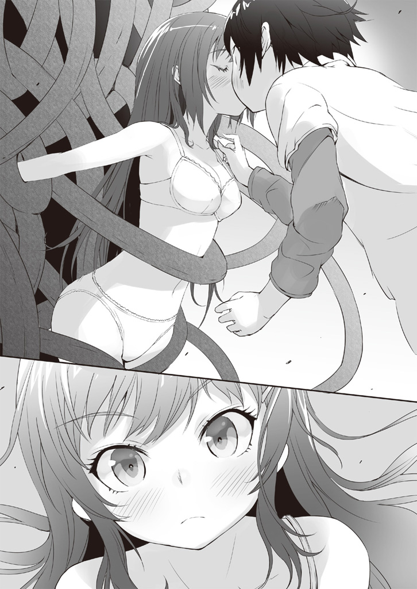
それは多分、パニック状態になっていた俺を励ますためのコンなりのエールだったのだろうが......そのキックは、恐らくコンも予想していなかっただろう結果を生むことになる。
俺と光里の顔は、鼻と鼻がくっつくくらいの至近距離にあった。その状態で後ろから頭に衝撃を受けたら、どうなるか。
答えは──『ちゅっ』である。
「──!?」
その瞬間、カッ！ と光里の目が見開いた。本当は起きてたんじゃないかと思えるくらいの目覚めの良さだった。──そして。
光里は四肢に絡みついたダークパープルの糸を引きちぎって、全身で俺にダイブした。
５．
ぶん殴られた。
「い......いくら陽ちゃんでも、不意を突いて昏倒させた後に服を脱がせて一緒にスカイダイビングしながらファーストキスを奪うなんて常軌を逸した真似、絶対許さないから！」
「落ち着いて光里！ 俺はそんな高度なプレイを望んではいない！」
状況的には似たようなことやったけど！
どうやら光里は記憶が混乱しているらしい。顔を真っ赤にして目尻に涙を浮かべながら息を荒くしている光里を、俺は必死になってなだめた。
光里が目覚めたと同時に、優子魔王は優子の思念糸と共に霧散消滅し、悪化した天候も全て元に戻った。俺は光里を抱きかかえたまま落下しているところを影時に助けられ、そして我に返った光里に殴られたというわけだ。
「君達も無事だったようだね」
天川が気を失っている優子を抱きかかえてやってきた。「君達も」ということは......。
「この子も無事さ。眠っているだけだ。全く、こんな子がさっきまであの恐ろしい化け物だったなんて、悪い夢だと思いたいね」
「そうか......」
優子も無事か。よかった。これで一件落着だ。
「......優ちゃん？ そうだ、私......」
優子の姿を見て光里の顔色が変わった。どうやら何が起きたのか思い出したようだ。
「陽ちゃん、ごめん！ 大丈夫？ どこか怪我してない!?」
「あ、ああ。平気だよ」
お前に殴られた傷以外は。
「よかった......」
光里は心底安堵した様子で胸をなで下ろした。さりげなくすり寄ったコンを抱き上げ、「心配かけてごめんね」と微笑む。
「よかった」はこっちの台詞だ。お前が無事で本当によかった。
「あー......それでさ、光里」
「？ 何、陽ちゃん」
「......とりあえず、服を着てくれ」
おもむろにデジカメを取り出した影時は俺が粛正しておくから。
「さて、それじゃあ僕はもう行くよ」
天川は優子を抱き上げてそう言った。
「また迷惑を掛けたね。すまなかった。後処理は協会でやっておくから、君達ももう帰るといい」
「待って、天川くん」
ちゃんと服を着て髪を整えた光里が天川を呼び止める。
「優ちゃんをどうするの？」
「さっき言った通り。もう元いた施設には戻れないだろうから思念紡績協会で保護する」
「そんな──」
食い下がろうとした光里を影時が片手で制し、天川に向けて言った。
「天川。帰る前に優子嬢のことについて詳しく聞かせてもらいたいのだが」
「......」
「元々お前の不手際のせいで俺達はその子と関わることになったんだ。お前には説明責任があるだろう」
「言ってくれるね」
天川は顔だけで振り返り、不敵に微笑んだ。
「わかったよ。とは言っても、さっき話したことがほとんどさ。この子は孤児院に預けられていた。しかしそこでの待遇が気に入らなかったか、或いは両親を失ったことが寂しかったのか──とにかく何らかのフラストレーションを抱え、それが原因で思念力が発現してしまった。そして思念力を使って孤児院を脱走し、自分を愛してくれる人間を捜して一人でさまよっていたんだ」
「......悪さを働いた、ってのは？」
「この子は放浪中、基本的には迷子を装って、親切にしてくれた人間につけ込んで飢えを凌いでいたのさ。だが当然カモが見つからない日もある。そんな時に、思念力を使ってコソ泥なんかを働いていたんだよ」
つまり、生きるために仕方なくってことか。
「随分狡猾なことだが......やっぱり子どもだね。『いくところがないから住まわせてくれ』って懇願すれば自分を育ててくれるような心優しい人間に、いつか出会えると信じ込んでいたんだから。このご時世、見ず知らずの子どもを引き取るようなお人好しなんかいるわけないってのに」
光里が俯く。その様子を見て天川が苦笑した。
「ところが、そんな信じられないお人好しが一人ここにいました、ってね。君の言いたいことはわかってるよ、光里ちゃん。『その子は私が育てる』だろう？」
天川は光里の返事を待たずに続ける。こいつ、さっきから顔以外全然こちらを振り向こうとしない。ずっと優子を抱きかかえた状態で背中を見せたままだ。
「それじゃ飼えないのに捨て猫を拾ってくる子どもと同じだよ、光里ちゃん。悪いけど、いくら子ども好きであろうとまだ自分一人が生きていく分の金すら稼げない女子高生に子育てを任せることなんかできないな」
「でも......」
「心配しないでくれ、思念紡績協会は大きな組織だ。こういう場合に備えての里親捜しも用意がいいよ。佐藤優子を幸せな家庭に送り届けることは僕が保証する」
......天川の言うことは正論だ。どれだけ光里が優子のことを愛していたって、所詮はまだ十五歳の高校一年生。若すぎる。いくら本人が本気であろうとも、様々な制約がそれを阻む。
だが、それでも俺は、光里の想いを汲んでやりたかった。
「天川、お前の言うことはもっともだよ。けどな、何が幸せかを決めるのは優子本人じゃねえのか。優子本人の口から希望を聞く前に勝手に決めていいことじゃねえだろ」
「君はこの子が光里ちゃんに育てられるのが一番幸せだと思うのかい？」
「あの魔王の強さ見たろ。あの強さが光里の愛情の強さだってんなら、光里以上に優子を大切に想ってる奴なんか絶対いないはずだ。それに──」
言っていいのか。この先を言ったら、何かもう色々と引き返せなくなる気がする。
......いや。躊躇うな。
どうせいつか言わなきゃいけないことなんだ。だったらこの場で言っちまえ！
「......光里だけじゃない。俺だってこいつと一緒に優子を育ててやる！」
あああ──言っちゃったぁー！
天川も影時もいるのに言っちゃったぁー！
「......ぶふっ」
「てめー！ 笑うなー！」
いや、笑うよね。わかるよ。仕方ないよね。影時は片手で顔を押さえて厨二的なポーズを取っているふりをしながら笑いを堪えているし、当の光里はここに至って真っ赤な顔で俯いてしまっている。光里らしくないとてもしおらしい様子である。
やめて。ボケて。ツッコミの用意あるから何かボケて！ この空気何とかして！
「そ......それで、光里ちゃん」
天川は背を見せているので表情が見えないが、肩の震えからして間違いなく笑っている。
「君も同意見かい？」
「......うん」
光里はささやかに、しかしはっきりと頷いた。
「私は、優ちゃんが自分で一番いいと思う居場所を選んでもらいたい。優ちゃんが幸せなら、それは別に私のところじゃなくてもいいの。だけど、もし優ちゃんが私と一緒にいたいって思ってくれるなら、私は私の全てを懸けて優ちゃんを育ててみせる」
「この子は思念能力者だ。下手したらまた今日みたいに、君や周囲の人間の身に危険が及ぶかもしれないよ？」
「その時は私が......私達が何とかするから」
「......ふーん」
フ、と天川の口元に笑みが浮かんだ気がした。
「だってさ、優子ちゃん」
そう言って、天川は抱きかかえていた優子をおろした。優子は自分の足で地面に立った。
......え？ あれ？ 優子のやつ、ずっと気を失ってたんじゃなかったのか!?
「話、聞いてたろ？ よかったね」
天川に促されて振り向いた優子の顔は、涙でぐしゃぐしゃになっていた。
「ふえぇ～～～ん！」
優子は涙をまき散らしながら駆け寄ってきて、光里の胸に飛び込んだ。
「ごめんなさい！ ごめんなさい！ もうしませんから許してください！」
「優ちゃん......」
屈んで目線を合わせ、光里は優子を抱き締めた。
「ちなみに、その子はもう思念力を失っているからね」
「え？」
「あれだけの暴走をしたお陰で思念糸がきれいさっぱり解けちゃったんだよ。だから今後は二度と今日みたいなことは起こらない。よかったね」
光里はぽかんと首を傾げて天川を見る。
「......私を試したの？」
「騙したんだよ」
と、天川は肩をすくめて笑った。
「言い切ったからには責任を持てよ光里ちゃん、それに日渡君。いや......Ｔ君」
「何で言い直した！」
「協会も出来ることは協力するから。それじゃ」
短い挨拶を残して天川は去っていった。
優子は小さな手で光里にしがみついていつまでも泣きじゃくっている。光里は優子の頭を優しく撫でた。
「優ちゃん。もう泣かないで」
「これからはうんといい子にします。だから、優子とずっと一緒にいてください」
「うん。わかってる。優ちゃんはとってもいい子だよ」
「......う、う、うわあ～ん！」
「だから泣かないでって......」
そう言いながらも、光里の目尻にも光の粒が溜まっている。かくいう俺も気を抜いたらもらい泣きしてしまいそうだ。
......何はともあれ、よかったな、優子。
６．
「......ということで、優ちゃんの記憶は思念力を失った時にちゃんと戻っていた模様。しかしそれでも、私達が本当の両親ではないという認識を得た上でも私達と一緒にいたいとする本人の強い希望から、このたび我が宇月家で優ちゃんを正式に養子として引き取ることになりました」
「お、おう......そうか。それはよかった」
「おじいちゃんもおばあちゃんも私に似て異常なまでの子ども好きであり、優ちゃんを養子にして欲しいという私の頼みにも全く動じずすんなりと受け入れてくれました」
「流石だな。あと、多分お前の方がおじいちゃんおばあちゃんに似てるんだと思うぞ」
「私は未成年なので、優ちゃんとの養子縁組はおじいちゃんとおばあちゃんが組むことになりました。ですから優ちゃんは戸籍上私の叔母ということになります」
「それもすげー関係だな」
「縁組みが完了すれば、名字も佐藤から宇月になる予定です。また、優ちゃんの居た孤児院に関する諸々の手続きは、天川くんの組織が闇の力でどうにかしてくれるそうです」
「やばくないかそれ!? 何か色々法に抵触しそうだけど！」
「『元々思念糸に関する事柄は法律じゃ制御しきれないからね。思念紡績協会はそういう部分の帳尻合わせも主な仕事の一つなのさ。だから心配しなくていい』とのことです」
「ま、まあそりゃそうかもしれないが......」
今のって天川のモノマネか？ 似てないなんてレベルじゃないぞ。似せる気がゼロどころかマイナスだ。......っていうか、何なんだ、この感じは。何で光里は──
「優ちゃんの健康状態は肉体的にも精神的にも問題ありません。もうすぐ小学校にも通えることになりそうです。そして優ちゃんが陽ちゃんに会いたがっているので是非うちに遊びに来てあげてください。また、近いうちに優ちゃんの方からも陽ちゃんの家に遊びに行くことになると思いますので、その時はよろしくお願いします」
「ああ、わかった。楽しみにしてる」
「私からの報告は以上です。何か質問はありますか」
「......えーっと。優子に関することは何もないけど。その......」
俺は視線を光里の全身、頭のてっぺんから足の先までなぞらせて、頭を掻いた。
学校帰りなので制服である。可愛いのである。それは問題ない。だが。
「お前最近変だぞ。どうした？」
光里は顔を俯けたまま、俺から五メートル以上離れた位置に立ってずっともにょもにょ喋っているのだ。聞き辛くてしょうがない。
「どうした、とは、果たしてその真意やいかに？」
「いやその喋り方が既におかしいだろうが。それだけじゃねえ、どうして俺と（物理的に）一定の距離を保とうとする？ おまけに目も合わせない、それどころか俺の顔を見ようとすらしないし。優子の一件があった日からだから、もう三日連続だぞ。一体どうしたってんだよ？」
「こ......個別の事案についてはお答えを差し控えます」
「それが通用すんのは国会だけだ」
「高校生が風刺的なことを言ったつもりになってどや顔をするのは、ちょっと痛いです」
「そんなつもりねえから！ してねえからどや顔！ 話を逸らすな！」
駄目だ、らちが明かない。つい溜息が出る。
「ホント、何だってんだよ。......なあ光里。俺、何かお前の気に障るようなことしたのかなぁ？ もししたんなら謝るから、教えてくれよ。こんな風にお前に避けられるのって、その......結構......」
......キツい、というか。
最後までは言えなくて、俺の台詞は尻切れトンボになってしまう。
どちらも言葉を発さずに、しばらく沈黙が続いたが──やがて、光里が真っ赤な顔で目を泳がせながら、おずおずと口を開いた。
「い......」
「い？」
「いのにあなたきｈせつきｈさくざはひｈさたｗ！ おぬれらりえぢえしえりなんおせちｈすおｄ、いねすかちｈすしきらにき！ えならかｄにうらわｇなｙつおｙ！」
「いや何言ってるか全然わかんねえけど!?」
「こういう時は逆再生でしょ！ 陽ちゃんのばかー！」
「ええー!?」
どういう時に逆再生だよ!? 耳コピで逆再生ってハードル高いよ！ 解読できるか！
「もう陽ちゃんなんて知らない！ とにかく、私が落ち着くまではもう口しか利いてあげないからね！」
「普段は口以外に何を利いてたの!?」
「さ......さよならっ！」
光里は顔面から蒸気を吹き上げながらそれだけ言い残すと、くるりと向きを変えて猛ダッシュで逃げ去ってしまった。
......一人残された俺は、ただただ呆然とその場に立ち尽くすしかなかった。
７．
「ふーん。それで結局、佐藤優子ちゃんは例の少女の家に引き取られることになった、と。なるほどなるほど」
ワーキングチェアの背もたれに身を預け、組んだ両足を横長のデスクに乗せて、金輪平助は無精髭をさすりながら天川の報告書に目を通していた。
「流石っつーかなんつーか、面白い子だな。それも本人だけじゃなく友人まで粒ぞろいだ。まあそれでこそなのかもしれねえけどな──で、だ」
金輪はぎょろりと眼球だけを上に動かして、右手の報告書から斜め上の天川の顔に視線を移した。この男には極端な上目遣いになってわざわざ眼鏡の上フレーム越しにものを見ようとする癖がある。この間とうとう秘書に「極度の三白眼で支部長の悪人面が三割増しです」と指摘され、視界を阻害しないようにと眼鏡を下ハーフフレームのものに買い換えたのだが、やはり癖は少しも直る気配がない。
「随分大事になったみたいだな。ん？」
「あなたがケチって百万しか持たせてくれなかったせいですよ。危うく街一つ焦土になるところでした」
「そんなこと言ったってお前、まさかよりによって例の少女を取り込むとは思わないもんよー。しかしアレだな、あの子の力、目覚めてなくても無意識に思念糸を呼び集めちまうもんなんだな。それがわかったのは収穫だった」
「暢気なことを......」
「何だよオメー、俺ばっか責めるなよ。元はと言えば、前日にお前が優子ちゃんを逃がしちまったのが悪いんだろうが。ったく、途中で相手に同情して、そのせいでパワーアップされて逃げられちまうなんてよ。お前も存外お人好し、抜けてるよな」
「......」
悔しいが、自分の失態は事実なので天川は言い返せない。
「それで、例の少女のこと、まだバレてねえだろうな」
「ええ、勿論」
「本当か？ しかしよ、目の前でいたいけな少女がとんでもねえ怪物になっちまったんだぞ？ 誰だって怪しいと思うはずだろう」
「今はまだ、怪しむべきものが多すぎて特定できないはずです。彼らは思念糸のことをよくわかっていませんから。ただ──」
「ただ？」
「適合者の一人が、妙に鋭い奴なんです。今はまだいいとしても、このままだと予定より早く気付かれてしまうかもしれません」
金輪が片眉を上げた。
「変態の方か」
「変態の方です」
「そいつ、火威のアホをとっちめるのに役立ってくれた奴だよな」
言いながら金輪は引き出しを開けて資料を取り出し、恐るべき速さでページをめくっていく。ぎょろ目の瞳がそれと同じ速さで縦横無尽に走る。
「真上影時か。ふーん、なるほどなるほど」
ぱたん、と閉じた資料をデスクに置くと、金輪は煙草に火をつけてくわえ、頭の後ろに手を組んで視線を中空に漂わせた。しばらくそのままにしていたが、灰がスーツに落ちる寸前で煙草を指に挟み、灰皿に押しつけ、「よし」と一つ頷いた。
「天川。明日真上影時をここに連れてこい」
金輪の真意を測りかね、天川は眉をひそめる。
「別に構いませんが。何をするつもりですか？」
その質問を待っていました、とばかりに金輪は豪快に口角を上げた。
「面接だ。真上影時を思念紡績協会に勧誘する」
「......もう一人の適合者はいいんですか？」
「いい。多分あっちは扱いきれねえからな。ただ──能力に期待はできなくても、例の少女との関係性という点で日渡陽太は利用できる。ちゃんと親しくしておけよ、天川」
......わかりました、と天川は目を細めて返事をした。
あとがき
皆様はじめまして。作者の本村大志という者です。
本作を書き上げるためにひたすら変態的な思考を繰り返していた結果、自らが本当に変態になっていたことに最近気がつきました。きっかけは友人達に「気持ち悪い」と言われてむしろ気持ちよくなったのを自覚したことです。いえ違います、元から変態だったのではありません。昔は精々女の子に「気持ち悪い」と言われた時だけ気持ちよくなるという至って健全な精神の持ち主でした。それが今では、男からの「気持ち悪い」すらも悦んで受け入れるようになってしまったのですから、これはもう言い訳のしようがありません。
ですが......私はそれを不幸なことだとは思っていません。なぜなら私には、ひそひそと隠れて陰口をたたくのではなく、正面から私の目を見据えて、「お前本当に気持ち悪いわ」「ごめんもうちょっと離れて」「あ、そのタオルあげるよ。返してくれなくていいから」などと厳しくも温かい言葉をかけてくれる友人達がいるからです。
相手に直接言葉で想いを伝えるというのはとても大変なことです。ですが彼らはいつも私に対して誠実で、真剣で、まっすぐでした。そんな彼らの想いは私には少し眩しすぎて、私はいつも目を逸らして「あ......はい」と呟くことしかできません。しかし私のシャイさを知っている彼らは、言いたいことはわかっているよ、とばかりにちょっと呆れたように苦笑して、その場を去って行くのです。何という思いやりでしょうか。彼らがいてくれるからこそ、私はどんな変態に身をやつそうとも安心して自分を保っていられるのです。
そんな想いで書き上げた本作、「Ｔとパンツとイイ話」でした。
ちなみに今のエピソードがタイトルの「イイ話」に相当する部分です。本編中には基本的に「Ｔとパンツ」の要素しかありませんのでご了承ください。
最後くらいは真面目になります。この度はこのような未熟者の拙いの作品に興味をお持ちいただきありがとうございました。
作品を評価してくださった審査員の先生方、右も左もわからぬ私に丁寧なご指導をしてくださった担当編集様、本編とレベルが釣り合わないのではと作者を不安にさせるほどハイクオリティなイラストを描いてくださった前田理想先生、そしてその他にもきっと私の知らない数え切れない方々の支えがあってようやくこの本を世に送り出すことができました。皆様には本当に感謝が尽きません。
読者の方にこの小説を少しでも楽しんでいただけたこと、そしてあわよくばまたいつかお会いできることを願いつつ、今回はお別れとさせていただきます。
それでは最後にもう一度、どうもありがとうございました。
平成二十三年九月 本村大志
【著者】
本村大志（もとむら・たいし）
北海道札幌市在住。静岡県焼津市出身。
１月13日生まれ。
０歳から母方の祖父母に育てられる。祖母の口癖は「次元が違うわ」。
次元が違いすぎたため、去年の三月に勘当される。
【イラストレーター】
前田理想（まえだ・りそう）
神奈川県在住生まれも育ちもスカジャン。
サッカー、自転車レース、野球、格闘技観戦する傍らマンガやイラストを描いております。
ブログ 「リソウキョウ」
Ｔとパンツとイイ話
著 者......本村大志
発行人......三坂泰二
発行所......株式会社メディアファクトリー
http://www.mediafactory.co.jp/
２０１２年４月３０日 電子書籍版 ver.1.0
無断で複製・複写・放送・データ配信などをすることは、かたくお断りいたします。
©2011 Taishi Motomura